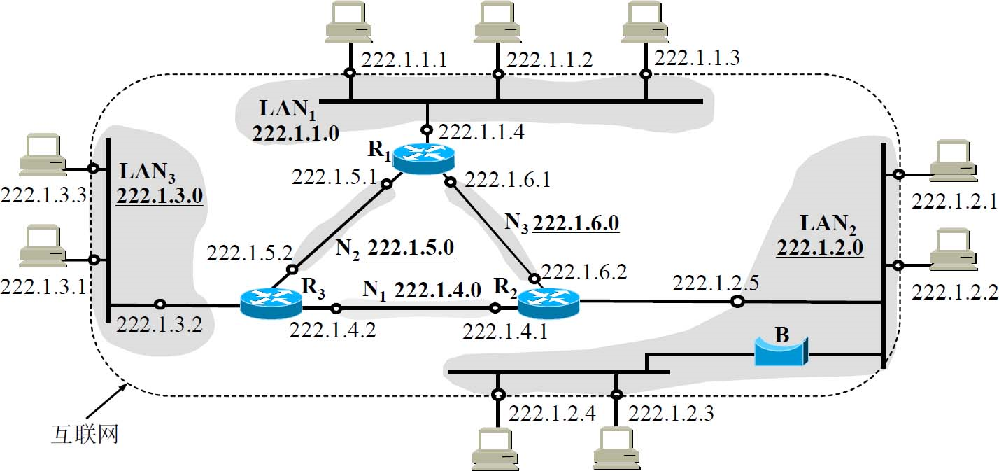
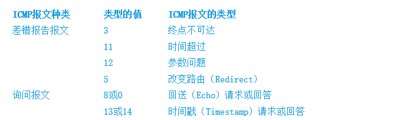

笔记
数据传输时单位k表示的是十进制，数据存储时的单位k是二进制
举例：
10101001 + 00111001 得到的和是11100010 所以checksum是00011101
1110 0110 0110 0110 + 1101 0101 0101 0101 得到的和是 （进位1）后面跟着1011 1011 1011 1011，所以最后的sum是1011 1011 1011 1100（将进位的1补至结尾相加），所以checksum是0100 0100 0100 0011
1 1011 1011 1011 1011
概述与物理层
通信方式
根据信息的传送方向，串行通讯可以进一步分为单工、半双工和全双工三种。
单工通信 ：通信双方中，一方固定为发送端，一方则固定为接收端。 信息只能沿一个方向传输，使用一根传输线。
半双工通信：数据传输指数据可以在一个信号载体的两个方向上传输，但是不能同时传输。
全双工通信：通信允许数据在两个方向上同时传输，它在能力上相当于两个单工通信方式的结合。
串行通讯又分为异步通讯和同步通讯两种方式。
在单片机中，主要使用异步通讯方式。
来自 https://www.zhihu.com/question/29033993
信号类型
模拟信号，或连续信号——代表消息的参数的取值是连续的。
数字信号，或离散信号——代表消息的参数的取值是离散的。
调幅&调频&调相
调幅 （AM） 即载波的振幅随基带数字信号而变化。例如，0或1分别对应于无载波或有载波输出。
调频 （FM） 即载波的频率随基带数字信号而变化。例如，0或1分别对应于频率f 1 或f 2 。
调相 （PM） 即载波的初始相位随基带数字信号而变化。例如，0或1分别对应于相位0度或180度。
数据链路层
链路与数据链路的定义
从一个节点到相邻节点的一段物理路线(有线或无线)，中间没有其他交换节点
#链路是一条路径的组成部分
这是因为当需要在一条线路上传送数据时，除了必须有一条物理线路外，还必须有一些必要的通信协议来控制这些数据的传输。若把实现这些协议的硬件和软件加到链路上，就构成了数据链路。
以太网的帧结构
以太网的帧结构：
| 前同步码 | 目的地址 | 源地址 | 类型 | 数据 | CRC |
|---|---|---|---|---|---|
| 8 | 6 | 6 | 2 | 46-1500 | 单元格 |
因此最少帧的字节为64
前同步码(八字节)：以太网帧以一个8字节的前同步码字段开始。该同步码前7字节的值都是10101010(用于“唤醒”接受适配器)；最后一个字节是10101011(最后两个比特连续的两个1，警告适配器有重要内容传输)
目的地址：包含目的适配器的MAC地址，即BB-BB-BB-BB-BB-BB。当收到的帧的目的地址是上述亦或者是MAC广播地址，传输给网络层，如果收到其他MAC地址的帧，则丢弃之。
源地址：包含上传该帧的适配器的MAC地址
类型：允许以太网复用多种网络层协议即IP以外的其他网络层协议
数据字段：即IP的数据报，若超过1500字节，主机将该数据报分片；若小于46字节，则必须填充至46字节
CRC：循环亢余检测，使接受适配器检测帧中是否出现错误
添加的0比特为p的长度-1
?> 透明传输：可见不管从键盘上输入什么字符都可以放在这样的帧中传输过去，因此这样的传输就是透明传输。
#不与帧定界的控制字符的比特编码一致
ppp协议
点对点协议（基本要求）：
1.简单，能提高不同厂商再不同协议上的可操作性提高
2.封装成帧，以特殊字符作为帧定界符
3.透明性，能解决数据内容与帧定界符重复的问题
4.多网络层协议，在同一条物理链路上支持多种网络层协议(IP和IPX)
5.多种链路类型，串行，并行，同步，异步，低速，高速，动态，静态，电（光）
6.差错检测，使用如同CRC等，丢弃有错误的帧
7.检测链接状态，是否正常工作
8.最大传送单元，MTU是数据链路层的帧可以载荷的数据部分的最大长度，而不是帧的总长度。
9.网络层地址协商，提供一种机制使通信的两个网络层（例如，两个IP层）的实体能够通过协商知道或能够配置彼此的网络层地址。
10.数据压缩协商，提供一种方法以协商数据压缩
组成部分：
1.一个将IP数据报封装到串行链路的方法。PPP既支持异步链路（无奇偶检验的8比特数据），也支持面向比特的同步链路。
2.一个用来建立、配置和测试数据链路连接的链路控制协议LCP（Link Control Protocol）。通信的双方可协商一些选项。在RFC 1661中定义了11种类型的LCP分组。
3.一套网络控制协议NCP（Network Control Protocol）【(5) 注：TCP的早期版本也叫做NCP，但它和这里所讨论的NCP没有关系。】，其中的每一个协议支持不同的网络层协议，如IP、OSI的网络层、DECnet，以及AppleTalk等。
ppp协议中的帧结构：
F：为标志字段(即是ppp帧的定界符)，规定为0x7E符号(“0x”表示它后面的字符是用十六进制表示的，十六进制的7E的二进制表示是01111110）
A：首部中的地址字段A规定为0xFF（即11111111），控制字段C规定为0x03（即00000011）
协议：PPP首部的第四个字段是2字节的协议字段。当协议字段为0x0021时，PPP帧的信息字段就是IP数据报。若为0xC021，则信息字段是PPP链路控制协议LCP的数据，而0x8021表示这是网络层的控制数据
字段填充
字节填充：
当信息字段中出现和标志字段一样的比特（0x7E）组合时，就必须采取一些措施使这种形式上和标志字段一样的比特组合不出现在信息字段中。当PPP使用异步传输时，它把转义符定义为0x7D（即01111101），并使用字节填充。
RFC 1662规定了如下所述的填充方法：
（1）把信息字段中出现的每一个0x7E字节转变成为2字节序列（0x7D，0x5E）。
（2）若信息字段中出现一个0x7D的字节（即出现了和转义字符一样的比特组合），则把0x7D转变成为2字节序列（0x7D，0x5D）。
（3）若信息字段中出现ASCII码的控制字符（即数值小于0x20的字符），则在该字符前面要加入一个0x7D字节，同时将该字符的编码加以改变。例如，出现0x03（在控制字符中是“传输结束”ETX）就要把它转变为2字节序列（0x7D，0x23）。
由于在发送端进行了字节填充，因此在链路上传送的信息字节数就超过了原来的信息字节数。但接收端在收到数据后再进行与发送端字节填充相反的变换，就可以正确地恢复出原来的信息。
零比特填充：
PPP协议用在SONET/SDH链路时，使用同步传输（一连串的比特连续传送）而不是异步传输（逐个字符地传送）。在这种情况下，PPP协议采用零比特填充方法来实现透明传输。
零比特填充的具体做法是：
在发送端，先扫描整个信息字段（通常用硬件实现，但也可用软件实现，只是会慢些）。只要发现有5个连续1，则立即填入一个0。因此经过这种零比特填充后的数据，就可以保证在信息字段中不会出现6个连续1。接收端在收到一个帧时，先找到标志字段F以确定一个帧的边界，接着再用硬件对其中的比特流进行扫描。每当发现5个连续1时，就把这5个连续1后的一个0删除，以还原成原来的信息比特流这样就保证了透明传输：在所传送的数据比特流中可以传送任意组合的比特流，而不会引起对帧边界的错误判断。
ppp协议的状态：
ppp链路的起始和终止状态为图中静止状态，此时用户电脑与ISP路由器之间不存在物理层的链接。
当用户个人电脑通过调制解调器呼叫路由器时，路由器就能够检测到调制解调器发出的载波信号。在双方建立了物理层连接后，PPP就进入“链路建立”状态，其目的是建立链路层的LCP连接。
这时LCP开始协商配置选项，即发送LCP的配置请求帧。这是个PPP帧，其协议字段置为LCP对应的代码，而信息字段包含特定的配置请求。链路的另一端可以发送以下几种响应中的一种：
（1）配置确认帧：所有选项都接受。
（2）配置否认帧：所有选项都理解但不能接受。
（3）配置拒绝帧：选项有的无法识别或不能接受，需要协商。
LCP配置选项包括链路上的最大帧长、所使用的鉴别协议的规约（如果有的话），以及不使用PPP帧中的地址和控制字段（因为这两个字段的值是固定的，没有任何信息量，可以在PPP帧的首部中省略这两个字节）。
协商结束后双方就建立了LCP链路，接着就进入“鉴别”状态。在这一状态，只允许传送LCP协议的分组、鉴别协议的分组以及监测链路质量的分组。若使用口令鉴别协议PAP，则需要发起通信的一方发送身份标识符和口令。系统可允许用户重试若干次。如果需要有更好的安全性，则可使用更加复杂的口令握手鉴别协议CHAP。若鉴别身份失败，则转到“链路终止”状态。若鉴别成功，则进入“网络层协议”状态。
在“网络层协议”状态，PPP链路的两端的网络控制协议NCP根据网络层的不同协议互相交换网络层特定的网络控制分组。(因为现在的路由器都能够同时支持多种网络层协议)PPP协议两端的网络层可以运行不同的网络层协议，但仍然可使用同一个PPP协议进行通信。
如果在PPP链路上运行的是IP协议，则对PPP链路的每一端配置IP协议模块（如分配IP地址）时就要使用NCP中支持IP的协议——IP控制协议IPCP。IPCP分组也封装成PPP帧（其中的协议字段为0x8021）在PPP链路上传送。在低速链路上运行时，双方还可以协商使用压缩的TCP和IP首部，以减少在链路上发送的比特数。
当网络层配置完毕后，链路就进入可进行数据通信的“链路打开”状态。链路的两个PPP端点可以彼此向对方发送分组。两个PPP端点还可发送回送请求LCP分组和回送回答LCP分组，以检查链路的状态。
数据传输结束后，由链路的一端发出终止请求LCP分组请求终止链路连接，在收到对方发来的终止确认LCP分组后，转到“链路终止”状态。如果链路出现故障，也会从“链路打开”状态转到“链路终止”状态。当调制解调器的载波停止后，则回到“链路静止”状态。
##ppp协议不是纯粹的数据链路层协议，他还包含了物理层和网络层的协议
局域网
局域网的数据链路层：广播信道可以进行一对多的通信
局域网最主要的特点是：网络为一个单位所拥有，且地理范围和站点数目均有限。以及提供无连接的工作方式，不可靠交付方式
局域网具有如下一些主要优点：
1.具有广播功能，从一个站点可很方便地访问全网。局域网上的主机可共享连接在局域网上的各种硬件和软件资源。
2.便于系统的扩展和逐渐演变，各设备的位置可灵活调整和改变。
3.提高了系统的可靠性、可用性和生存性。
802.3局域网也被简称为“以太网”，但严格说来，“以太网”应当是指符合DIX Ethernet V2标准的局域网
为了使数据链路层能更好地适应多种局域网标准，IEEE 802委员会就把局域网的数据链路层拆成两个子层，即逻辑链路控制LLC子层和媒体接入控制MAC子层。与接入到传输媒体有关的内容都放在MAC子层，而LLC子层则与传输媒体无关，不管采用何种传输媒体和MAC子层的局域网对LLC子层来说都是透明的
共享信道
共享信道需要考虑如何使众多用户能够合理而方便地共享通信媒体资源。
这在技术上有两种方法：
1.静态划分信道，如频分复用、时分复用、波分复用和码分复用等。用户只要分配到了信道就不会和其他用户发生冲突。但这种划分信道的方法代价较高，不适合于局域网使用。
2.动态媒体接入控制，它又称为多点接入，其特点是信道并非在用户通信时固定分配给用户。这里又分为以下两类：
随机接入 随机接入的特点是所有的用户可随机地发送信息。但如果恰巧有两个或更多的用户在同一时刻发送信息，那么在共享媒体上就要产生碰撞 （即发生了冲突 ），使得这些用户的发送都失败。因此，必须有解决碰撞的网络协议。
受控接入 受控接入的特点是用户不能随机地发送信息而必须服从一定的控制。这类的典型代表有分散控制的令牌环局域网和集中控制的多点线路探询，或称为轮询 。
适配器
CSMA/CD（载波监听多点接入/碰撞检测）
“多点接入”说明这是总线型网络，许多计算机以多点接入的方式连接在一根总线上。协议的实质是“载波监听”和“碰撞检测”。
“载波监听”就是用电子技术检测总线上有没有其他计算机也在发送。载波监听就是检测信道。不管在发送前，还是在发送中，每个站都必须不停地检测信道。在发送前检测信道，是为了获得发送权。在发送中检测信道，是为了及时发现有没有其他站的发送和本站发送的碰撞。这就称为碰撞检测。
“碰撞检测”即适配器边发送数据边检测信道上的信号电压的变化情况，以便判断自己在发送数据时其他站是否也在发送数据。当几个站同时在总线上发送数据时，总线上的信号电压变化幅度将会增大（互相叠加）。当适配器检测到的信号电压变化幅度超过一定的门限值时，就认为总线上至少有两个站同时在发送数据，表明产生了碰撞（冲突）。因此“碰撞检测”也称“冲突检测”。这时，总线上传输的信号产生了严重的失真，无法从中恢复出有用的信息来。因此，任何一个正在发送数据的站，一旦发现总线上出现了碰撞，其适配器就要立即停止发送。
在使用CSMA/CD协议时，一个站不可能同时进行发送和接收（但必须边发送边监听信道）。因此使用CSMA/CD协议的以太网不可能进行全双工通信而只能进行双向交替通信（半双工通信）。
以太网使用截断二进制指数退避算法来确定碰撞后重传的时机
由于一检测到冲突就立即中止发送，这时已经发送出去的数据一定小于64字节，因此凡长度小于64字节的帧都是由于冲突而异常中止的无效帧。只要收到了这种无效帧，就应当立即将其丢弃。
集线器
使用集线器的以太网在逻辑上仍是一个总线网，各站共享逻辑上的总线，使用的还是CSMA/CD协议（更具体些说，是各站中的适配器执行CSMA/CD协议）。网络中的各站必须竞争对传输媒体的控制，并且在同一时刻至多只允许一个站发送数据。
集线器工作在物理层，它的每个接口仅仅简单地转发比特——收到1就转发1，收到0就转发0，不进行碰撞检测。
以太网信道利用率
成功发送一个帧需要占用信道的时间是T0＋τ，这是因为当一个站发送完最后一个比特时，这个比特还要在以太网上传播。在最极端的情况下，发送站在传输媒体的一端，而比特在媒体上传输到另一端所需的时间是τ。因此，必须在经过时间T0＋τ后以太网的媒体才完全进入空闲状态，才能允许其他站发送数据。
在以太网中定义了参数a，它是以太网单程端到端时延τ与帧的发送时间T0之比（减小比值，提高以太网的信道利用率）：
这就是说，当数据率一定时，以太网的连线的长度受到限制（否则τ的数值会太大），同时以太网的帧长不能太短（否则T0太大）
于是我们可计算出极限信道利用率Smax为：
以太网MAC层
硬件地址又称为物理地址或MAC地址（因为这种地址用在MAC帧中）
?>IEEE的注册管理机构RA是局域网全球地址的法定管理机构，它负责分配地址字段的6个字节中的前三个字节（即高位24位）。也叫组织唯一标识符OUI,也叫公司标识符
?>地址字段中的后三个字节（即低位24位）则由厂家自行指派，称为扩展标识符，用这种方式得到的48位地址称为EUI-48，这里EUI表示扩展的唯一标识符
!>地址字段的第一字节的最低位为I/G位，当I/G位为0时，地址字段表示一个单个站地址。当I/G位为1时表示组地址，用来进行多播（以前曾译为组播）。
因此，IEEE只分配地址字段前三个字节中的23位。当I/G位分别为0和1时，一个地址块可分别生成224个单个站地址和224个组地址。
IEEE把地址字段第1字节的最低第二位规定为G/L位。当G/L位为0时是全球管理（保证在全球没有相同的地址），厂商向IEEE购买的OUI都属于全球管理。当地址字段的G/L位为1时是本地管理，这时用户可任意分配网络上的地址。采用2字节地址字段时全都是本地管理。但应当指出，以太网几乎不理会这个G/L位。
因此除去最低第一位与最低第二位，一共可以分配2^46个地址
MAC帧的发送方式：
单播（unicast）帧（一对一），即收到的帧的MAC地址与本站的硬件地址相同。
广播（broadcast）帧（一对全体），即发送给本局域网上所有站点的帧（全1地址）。
多播（multicast）帧（一对多），即发送给本局域网上一部分站点的帧。
MAC帧的帧格式（以太网V2的MAC帧格式）
46字节是这样得出的：最小长度64字节减去18字节的首部和尾部就得出数据字段的最小长度
出现下列情况之一的即为无效的MAC帧：
1.帧的长度不是整数个字节；
2.用收到的帧检验序列FCS查出有差错；
?>3.收到的帧的MAC客户数据字段的长度不在46～1500字节之间。考虑到MAC帧首部和尾部的长度共有18字节，可以得出有效的MAC帧长度为64～1518字节之间。
MAC帧的第三个字段是“长度/类型”。当这个字段值大于0x0600时（相当于十进制的1536），就表示“类型”。这样的帧和以太网V2 MAC帧完全一样。只有当这个字段值小于0x0600时才表示“长度”，即MAC帧的数据部分长度。当“长度/类型”字段值小于0x0600时，数据字段必须装入上面的逻辑链路控制LLC子层的LLC帧。
扩展的以太网
这种扩展的以太网在网络层看来仍然是一个网络。
在物理层扩展以太网
多个集线器连成更大的以太网
好处:
第一，使这个学院不同系的以太网上的计算机能够进行跨系的通信。
第二，扩大了以太网覆盖的地理范围。例如，在一个系的10BASE-T以太网中，主机与集线器的最大距离是100m，因而两台主机之间的最大距离是200m。但在通过主干集线器相连接后，不同系的主机之间的距离就可扩展了，因为集线器之间的距离可以是100m（使用双绞线）或甚至更远（如使用光纤）。
缺点：
1.如图3-24（a）所示的例子，在三个系的以太网互连起来之前，每一个系的10BASE-T以太网是一个独立的碰撞域（又称为冲突域）。每一个系的以太网的最大吞吐量是10Mbit/s，因此三个系总的最大吞吐量共有30Mbit/s。在三个系的以太网通过集线器互连起来后就把三个碰撞域变成一个碰撞域（范围扩大到三个系），如图3-24（b）所示，而这时的最大吞吐量仍然是一个系的吞吐量10Mbit/s。
2.如果不同的系使用不同的以太网技术（如数据率不同），那么就不可能用集线器将它们互连起来。如果在图3-24中，一个系使用10Mbit/s的适配器，而另外两个系使用10/100Mbit/s的适配器，那么用集线器连接起来后，大家都只能工作在10Mbit/s的速率。集线器基本上是个多接口（即多端口）的转发器，它并不能把帧进行缓存。
在数据链路层扩展以太网
人们最初使用的是网桥（后被交换式集线器替代）。交换式集线器对收到的帧根据其MAC帧的目的地址进行转发和过滤。
交换式集线器工作在数据链路层因此也被叫做第二层交换机
以太网交换机的特点：
以太网交换机实质上就是一个多接口的网桥，以太网交换机的每个接口都直接与一个单台主机或另一个以太网交换机相连，并且一般都工作在全双工方式。
以太网交换机还具有并行性，即能同时连通多对接口，使多对主机能同时通信（而网桥只能一次分析和转发一个帧）。相互通信的主机都是独占传输媒体，无碰撞地传输数据。
以太网交换机的接口有存储器，能在输出端口繁忙时把到来的帧进行缓存。
虽然许多以太网交换机对收到的帧采用存储转发方式进行转发，但也有一些交换机采用直通的交换方式。直通交换不必把整个数据帧先缓存后再进行处理，而是在接收数据帧的同时就立即按数据帧的目的MAC地址决定该帧的转发接口，因而提高了帧的转发速度。如果在这种交换机的内部采用基于硬件的交叉矩阵，交换时延就非常小。
直通交换的一个缺点是它不检查差错就直接将帧转发出去，因此有可能也将一些无效帧转发给其他的站。
以太网交换机的自学习功能
假定在图中的以太网交换机有4个接口，各连接一台计算机，其MAC地址分别是A，B，C和D。在一开始，以太网交换机里面的交换表是空的
A先向B发送一帧，从接口1进入到交换机。交换机收到帧后，先查找交换表，没有查到应从哪个接口转发这个帧（在MAC地址这一列中，找不到目的地址为B的项目）。接着，交换机把这个帧的源地址A和接口1写入交换表中，并向除接口1以外的所有接口广播这个帧（这个帧就是从接口1进来的，当然不应当把它再从接口1转发出去）。
C和D将丢弃这个帧，因为目的地址不对。只B才收下这个目的地址正确的帧。这也称为过滤。
从新写入交换表的项目（A，1）可以看出，以后不管从哪一个接口收到帧，只要其目的地址是A，就应当把收到的帧从接口1转发出去。这样做的依据是：既然A发出的帧是从接口1进入到交换机的，那么从交换机的接口1转发出的帧也应当可以到达A。
假定接下来B通过接口3向A发送一帧。交换机查找交换表，发现交换表中的MAC地址有A。表明要发送给A的帧（即目的地址为A的帧）应从接口1转发。于是就把这个帧传送到接口1转发给A。显然，现在已经没有必要再广播收到的帧。交换表这时新增加的项目（B，3），表明今后如有发送给B的帧，就应当从接口3转发出去。
经过一段时间后，只要主机C和D也向其他主机发送帧，以太网交换机中的交换表就会把转发到C或D应当经过的接口号（2或4）写入到交换表中。这样，交换表中的项目就齐全了。要转发给任何一台主机的帧，都能够很快地在交换表中找到相应的转发接口。
?>交换表中每个项目都设有一定的有效时间。过期的项目就自动被删除。用这样的方法保证交换表中的数据都符合当前网络的实际状况。
IEEE的802.1D标准制定了一个生成树协议STP,以防止某些帧在交换机间不断兜圈子循环
?>总线以太网使用CSMA/CD协议，以半双工方式工作。但以太网交换机不使用共享总线，没有碰撞问题，因此不使用CSMA/CD协议，而是以全双工方式工作。之所以还叫以太网，是因为它的帧结构未改变，仍然采用以太网的帧结构
虚拟局域网
以太网交换机不向虚拟局域网以外的计算机传送局域网内用户的广播信息。这样，虚拟局域网限制了接收广播信息的计算机数，使得网络不会因传播过多的广播信息（即所谓的“广播风暴”）而引起性能恶化。
虚拟局域网协议允许在以太网的帧格式中插入一个4字节的标识符，称为VLAN标记
CFI指的是规范格式指示符，最后的12位是该虚拟局域网VLAN标识符VID（VLAN ID），它唯一地标志了这个以太网帧属于哪一个VLAN。
?>由于用于VLAN的以太网帧的首部增加了4个字节，因此以太网的最大帧长从原来的1518字节（1500字节的数据加上18字节的首部）变为1522字节。
快速以太网与其他以太网延申
100BASE-T是在双绞线上传送100Mbit/s基带信号的星形拓扑以太网，仍使用IEEE 802.3的CSMA/CD协议，它又称为快速以太网
从细缆以太网升级到快速以太网的用户必须重新布线
吉比特以太网的标准IEEE 802.3z有以下几个特点：
1.允许在1Gbit/s下以全双工和半双工两种方式工作。
2.使用IEEE 802.3协议规定的帧格式。
3.在半双工方式下使用CSMA/CD协议，而在全双工方式不使用CSMA/CD协议。
4.与10BASE-T和100BASE-T技术向后兼容。
本章重要概念
1.链路是从一个结点到相邻结点的一段物理线路，数据链路则是在链路的基础上增加了一些必要的硬件（如网络适配器）和软件（如协议的实现）。
2.数据链路层使用的信道主要有点对点信道和广播信道两种。
3.数据链路层传送的协议数据单元是帧。数据链路层的三个基本问题则是：封装成帧、透明传输和差错检测。
4.循环冗余检验CRC是一种检错方法，而帧检验序列FCS是添加在数据后面的冗余码。
5.点对点协议PPP是数据链路层使用最多的一种协议，它的特点是：简单；只检测差错，而不是纠正差错；不使用序号，也不进行流量控制；可同时支持多种网络层协议。
6.PPPoE是为宽带上网的主机使用的链路层协议。
7.局域网的优点是：具有广播功能，从一个站点可很方便地访问全网；便于系统的扩展和逐渐演变；提高了系统的可靠性、可用性和生存性。
8.共享通信媒体资源的方法有二：一是静态划分信道（各种复用技术），二是动态媒体接入控制，又称为多点接入（随机接入或受控接入）。
9.IEEE 802委员会曾把局域网的数据链路层拆成两个子层，即逻辑链路控制（LLC）子层（与传输媒体无关）和媒体接入控制（MAC）子层（与传输媒体有关）。但现在LLC子层已成为历史。
10.计算机与外界局域网的通信要通过通信适配器（或网络适配器），它又称为网络接口卡或网卡。计算机的硬件地址就在适配器的ROM中。
11.以太网采用无连接的工作方式，对发送的数据帧不进行编号，也不要求对方发回确认。目的站收到有差错帧就把它丢弃，其他什么也不做。
12.以太网采用的协议是具有冲突检测的载波监听多点接入CSMA/CD。协议的要点是：发送前先监听，边发送边监听，一旦发现总线上出现了碰撞，就立即停止发送。然后按照退避算法等待一段随机时间后再次发送。因此，每一个站在自己发送数据之后的一小段时间内，存在着遭遇碰撞的可能性。以太网上各站点都平等地争用以太网信道。
13.传统的总线以太网基本上都是使用集线器的双绞线以太网。这种以太网在物理上是星形网，但在逻辑上则是总线形网。集线器工作在物理层，它的每个接口仅仅简单地转发比特，不进行碰撞检测。
14.以太网的硬件地址，即MAC地址实际上就是适配器地址或适配器标识符，与主机所在的地点无关。源地址和目的地址都是48位长。
15.以太网的适配器有过滤功能，它只接收单播帧、广播帧或多播帧。
16.使用集线器可以在物理层扩展以太网（扩展后的以太网仍然是一个网络）。
17.交换式集线器常称为以太网交换机或第二层交换机（工作在数据链路层）。它就是一个多接口的网桥，而每个接口都直接与某台单主机或另一个集线器相连，且工作在全双工方式。以太网交换机能同时连通许多对的接口，使每一对相互通信的主机都能像独占通信媒体那样，无碰撞地传输数据。
18.高速以太网有100Mbit/s的快速以太网、吉比特以太网和10Gbit/s的10吉比特以太网。最近还发展到100吉比特以太网。在宽带接入技术中，也常使用高速以太网进行接入。
网络层
网络层提供的两种服务
!>网络层向上只提供简单灵活的、无连接的、尽最大努力交付的数据报服务网络层向上只提供简单灵活的、无连接的、尽最大努力交付的数据报服务网络层向上只提供简单灵活的、无连接的、尽最大努力交付的数据报服务
!>网络层不提供服务质量的承诺。
| 对比的方面 | 虚电路服务 | 数据报服务 |
|---|---|---|
| 思路 | 可靠通信应当由网络来保证 | 可靠通信应当由用户主机来保证 |
| 连接的建立 | 必须有 | 不需要 |
| 终点地址 | 仅在连接建立阶段使用，每个分组使用短的虚电路号 | 每个分组都有终点的完整地址 |
| 分组的转发 | 属于同一条虚电路的分组均按照同一路由进行转发 | 每个分组独立选择路由进行转发 |
| 当结点出故障时 | 所有通过出故障的结点的虚电路均不能工作 | 出故障的结点可能会丢失分组，一些路由可能会发生变化 |
| 分组的顺序 | 总是按发送顺序到达终点 | 到达终点的时间不一定按发送顺序 |
| 端到端的差错处理和流量控制 | 可以由网络负责，也可以由用户主机负责 | 由用户主机负责 |
网际IP协议
网际协议IP又称为Kahn-Cerf协议，是重要的互联网协议
与IP协议配套使用的还有三个协议：
地址解析协议ARP （Address Resolution Protocol）；
网际控制报文协议ICMP （Internet Control Message Protocol）；
网际组管理协议IGMP （Internet Group Management Protocol）
#原本还有逆地址解析协议(RARP)与地址解析协议配合使用现已被淘汰
如下是三种协议与网际协议IP的关系：
虚拟互联网络
将网络互相连接起来要使用一些中间设备。根据中间设备所在的层次，可以有以下四种不同的中间设备：
1.物理层使用的中间设备叫做转发器（repeater）。
2.数据链路层使用的中间设备叫做网桥或桥接器（bridge）。
3.网络层使用的中间设备叫做路由器（router）（也可叫做网关）
4.在网络层以上使用的中间设备叫做网关（gateway）。用网关连接两个不兼容的系统需要在高层进行协议的转换。
!>互联网可以由多种异构网络互连组成。
分类的IP地址
IP地址的编址方法共经过了三个历史阶段：
1.分类的IP地址。这是最基本的编址方法，在1981年就通过了相应的标准协议。
2.子网的划分。这是对最基本的编址方法的改进，其标准RFC 950在1985年通过。
3.构成超网。这是比较新的无分类编址方法。1993年提出后很快就得到推广应用。
对于网络中的IP地址：
对主机或路由器来说，IP地址都是32位的二进制代码。为了提高可读性，我们常常把32位的IP地址中的每8位插入一个空格。为了便于书写，可用其等效的十进制数字表示，并且在这些数字之间加上一个点。这就叫做点分十进制记法
1.A类、B类和C类地址的网络号字段（在图中这个字段是灰色的）分别为1个、2个和3个字节长，而在网络号字段的最前面有1～3位的类别位 ，其数值分别规定为0，10和110。
2.A类、B类和C类地址的主机号字段分别为3个、2个和1个字节长。（且都为单播地址）
3.D类地址（前4位是1110）用于多播 （一对多通信）。我们将在4.6节讨论IP多播。
4.E类地址（前4位是1111）保留为以后用。
?>虽然A类地址网络号仍有7位可用，可指派的网络号是126个（即2^7–2）。
?>第一：IP地址全0表示“这个”，也即是本网络
?>第二：网络号为127(即01111111)保留作为本地软件的环回测试(网络号为127实际上不是网络地址)
?>A类地址的主机号占3个字节，因此每一个A类网络中的最大主机数是2^24–2，即16777214。这里减2的原因是：
?>全0的主机号字段表示该IP地址是“本主机”所连接到的单个网络地址（例如，一主机的IP地址为5.6.7.8，则该主机所在的网络地址就是5.0.0.0），而全1表示“所有的（all）”
?>全1的主机号字段表示该网络上的所有主机
?>IP地址空间共有2^32（即4294967296）个地址。整个A类地址空间共有2^31个地址，占整个IP地址空间的50％。
注：关于全1和全0还可以再举两个例子。例如，B类地址128.7.255.255表示“在网络128.7.0.0上的所有主机”。而A类地址0.0.0.35则表示“在这个网络上主机号为35的主机”。
?>B类地址的网络号字段有2个字节，但前面两位（10）已经固定了，只剩下14位可以进行分配。
?>因为网络号字段后面的14位无论怎样取值也不可能出现使整个2字节的网络号字段成为全0或全1，因此这里不存在网络总数减2的问题。但实际上B类网络地址128.0.0.0是不指派的，而可以指派的B类最小网络地址是128.1.0.0［COME06］。因此B类地址可指派的网络数为2^14−1，即16383。
?>B类地址的每一个网络上的最大主机数是2^16–2，即65534。这里需要减2是因为要扣除全0和全1的主机号。整个B类地址空间共约有230个地址，占整个IP地址空间的25％。
C类地址有3个字节的网络号字段，最前面的3位是（110），还有21位可以进行分配。C类网络地址192.0.0.0也是不指派的，可以指派的C类最小网络地址是192.0.1.0［COME06］，因此C类地址可指派的网络总数是2^21−1，即2097151。
每一个C类地址的最大主机数是2^8–2，即254。整个C类地址空间共约有229个地址，占整个IP地址的12.5％。
IP地址指派范围：
一般不适用的特殊IP地址：
IP地址具有以下一些重要特点：
1.每一个IP地址都由网络号和主机号两部分组成。IP地址是一种分等级的地址结构。分两个等级的好处是：第一，IP地址管理机构在分配IP地址时只分配网络号（第一级），而剩下的主机号（第二级）则由得到该网络号的单位自行分配。这样就方便了IP地址的管理；第二，路由器仅根据目的主机所连接的网络号来转发分组（而不考虑目的主机号），这样就可以使路由表中的项目数大幅度减少，从而减小了路由表所占的存储空间以及查找路由表的时间。
2.实际上IP地址是标志一台主机（或路由器）和一条链路的接口。当一台主机同时连接到两个网络上时，该主机就必须同时具有两个相应的IP地址，其网络号必须是不同的。这种主机称为多归属主机。
3.按照互联网的观点，一个网络是指具有相同网络号net-id的主机的集合，因此，用转发器或网桥连接起来的若干个局域网仍为一个网络。
4.在IP地址中，所有分配到网络号的网络（不管是范围很小的局域网，还是可能覆盖很大地理范围的广域网）都是平等的。所谓平等，是指互联网同等对待每一个IP地址。
以下需要注意：
1.在同一个局域网上的主机或路由器的IP地址中的网络号必须是一样的。图中所示的网络号就是IP地址中的网络号字段的值，这也是文献中常见的一种表示方法。另一种表示方法是用主机号为全0的网络IP地址。
2.用网桥（它只在链路层工作）互连的网段仍然是一个局域网，只能有一个网络号。
3.路由器总是具有两个或两个以上的IP地址。即路由器的每一个接口都有一个不同网络号的IP地址。
4.当两个路由器直接相连时（例如通过一条租用线路），在连线两端的接口处，可以分配也可以不分配IP地址。如分配了IP地址，则这一段连线就构成了一种只包含一段线路的特殊“网络”（如图中的N 1 ，N 2 和N 3 ）。之所以叫做“网络”是因为它有IP地址。但为了节省IP地址资源，对于这种仅由一段连线构成的特殊“网络”，现在也常常不分配IP地址。通常把这样的特殊网络叫做无编号网络或无名网络［COME06］。

IP地址与硬件地址
从层次的角度看，物理地址是数据链路层和物理层使用的地址，而IP地址是网络层和以上各层使用的地址，是一种逻辑地址(IP地址是由软件实现的)
1.在发送数据时，数据从高层下到低层，然后才到通信链路上传输。使用IP地址的IP数据报一旦交给了数据链路层，就被封装成MAC帧了。MAC帧在传送时使用的源地址和目的地址都是硬件地址，这两个硬件地址都写在MAC帧的首部中。
2.连接在通信链路上的设备（主机或路由器）在收到MAC帧时，根据MAC帧首部中的硬件地址决定收下或丢弃。只有在剥去MAC帧的首部和尾部后把MAC层的数据上交给网络层后，网络层才能在IP数据报的首部中找到源IP地址和目的IP地址。
3.IP地址放在IP数据报的首部，而硬件地址则放在MAC帧的首部。在网络层和网络层以上使用的是IP地址，而数据链路层及以下使用的是硬件地址。在图4-8中，当IP数据报放入数据链路层的MAC帧中以后，整个的IP数据报就成为MAC帧的数据，因而在数据链路层看不见数据报的IP地址。
重点提要：
1.在IP层抽象的互联网上只能看到IP数据报。数据报中间经过的路由器的IP地址并不出现在IP数据报的首部中。
2.虽然在IP数据报首部有源站IP地址，但路由器只根据目的站的IP地址的网络号进行路由选择。
3.在局域网的链路层，只能看见MAC帧。IP数据报被封装在MAC帧中。MAC帧在不同网络上传送时，其MAC帧首部中的源地址和目的地址要发生变化。MAC帧的首部的这种变化，在上面的IP层上是看不见的。
4.尽管互连在一起的网络的硬件地址体系各不相同，但IP层抽象的互联网却屏蔽了下层这些很复杂的细节。只要我们在网络层上讨论问题，就能够使用统一的、抽象的IP地址研究主机和主机或路由器之间的通信。
地址解析协议ARP
地址解析协议：已知IP地址需要找出对应的硬件地址
ARP协议既可划归网络层也可划归数据链路层
地址解析协议ARP解决这个问题的方法是在主机ARP高速缓存中存放一个从IP地址到硬件地址的映射表，并且这个映射表还经常动态更新。
ARP进程在本局域网上广播发送一个ARP请求分组
主机A在发送其ARP请求分组时，就把自己的IP地址到硬件地址的映射写入ARP请求分组。当主机B收到A的ARP请求分组时，就把主机A的这一地址映射写入主机B自己的ARP高速缓存中。以减少网络上的通信量
使用ARP的四种典型情况：
1.发送方是主机（如H1），要把IP数据报发送到同一个网络上的另一台主机（如H2）。这时H1发送ARP请求分组（在网1上广播），找到目的主机H2的硬件地址。
2.发送方是主机（如H1），要把IP数据报发送到另一个网络上的一台主机（如H3或H4）。这时H1发送ARP请求分组（在网1上广播），找到网1上的一个路由器R1的硬件地址。剩下的工作由路由器R1来完成。R1要做的事情是下面的（3）或（4）。
3.发送方是路由器（如R1），要把IP数据报转发到与R1连接在同一个网络（网2）上的主机（如H3）。这时R1发送ARP请求分组（在网2上广播），找到目的主机H3的硬件地址。
4.发送方是路由器（如R1），要把IP数据报转发到网3上的一台主机（如H4）。H4与R1不是连接在同一个网络上。这时R1发送ARP请求分组（在网2上广播），找到连接在网2上的一个路由器R2的硬件地址。剩下的工作由这个路由器R2来完成。
IP数据报的格式
在TCP/IP的标准中，各种数据格式常常以32位（即4字节）为单位来描述
IP数据报首部固定部分中的个字段：
1.版本 占4位，指IP协议的版本。
!>2.首部长度 占4位，可表示的最大十进制数值是15。当首部长度为最大值1111时(即十进制数的15)就表明首部长度达到最大值15个32位字长，即(15*4=60)60字节。（固定部分加上可变部分）
!>总长为20字节(即固定部分),首部长度字段的最小值是20/4=5(即二进制表示的首部长度是0101)(也可理解为最少5行，最多15行)
3.区分服务 占8位，用来获得更好的服务。只有在使用区分服务时，这个字段才起作用。在一般的情况下都不使用这个字段。
4.总长度 总长度指首部和数据之和的长度，单位为字节。总长度字段为16位，因此数据报的最大长度为2^16–1＝65535字节。然而实际上传送这样长的数据报在现实中是极少遇到的。
在IP层下面的每一种数据链路层协议都规定了一个数据帧（数据链路层中的帧）中的数据字段的最大长度，这称为最大传送单元MTU，常用的MTU为1500字节
5.标识占16位。IP软件在存储器中维持一个计数器，每产生一个数据报，计数器就加1，并将此值赋给标识字段。但这个“标识”并不是序号，因为IP是无连接服务，数据报不存在按序接收的问题。当数据报由于长度超过网络的MTU而必须分片时，这个标识字段的值就被复制到所有的数据报片的标识字段中。相同的标识字段的值使分片后的各数据报片最后能正确地重装成为原来的数据报。
6.标志占3位，但目前只有两位有意义：
（1）标志字段中的最低位记为MF。MF＝1即表示后面“还有分片 ”的数据报。MF＝0表示这已是若干数据报片中的最后一个。
（2）标志字段中间的一位记为DF，意思是“不能分片 ”。只有当DF＝0时才允许分片。
7.片偏移 占13位。片偏移指出：较长的分组在分片后，某片在原分组中的相对位置。也就是说，相对于用户数据字段的起点，该片从何处开始。片偏移以8个字节为偏移单位。这就是说，每个分片的长度一定是8字节（64位）的整数倍。
一数据报的总长度为3820字节，其数据部分为3800字节长（使用固定首部），需要分片为长度不超过1420字节的数据报片。因固定首部长度为20字节，因此每个数据报片的数据部分长度不能超过1400字节。于是分为3个数据报片，其数据部分的长度分别为1400，1400和1000字节。原始数据报首部被复制为各数据报片的首部，但必须修改有关字段的值。图4-14给出分片后得出的结果（请注意片偏移的数值）。
下图时数据报首部与分片有关的字段中的数值，其中标识字段的值是任意给定的（12345）。具有相同标识的数据报片在目的站就可无误地重装成原来的数据报。

8.生存时间 占8位，生存时间字段常用的英文缩写是TTL，表明这是数据报在网络中的寿命。
9.协议 占8位，协议字段指出此数据报携带的数据是使用何种协议，以便使目的主机的IP层知道应将数据部分上交给哪个协议进行处理。
10.首部检验和 占16位。这个字段只检验数据报的首部，但不包括数据部分。
举例：
10101001 + 00111001 得到的和是11100010 所以checksum是00011101
1110 0110 0110 0110 + 1101 0101 0101 0101 得到的和是 （进位1）后面跟着1011 1011 1011 1011，所以最后的sum是1011 1011 1011 1100（将进位的1补至结尾相加），所以checksum是0100 0100 0100 0011
11.源地址 占32位。
12.目的地址 占32位。
IP数据报首部的可变部分：
IP数据报首部的可变部分就是一个选项字段。选项字段用来支持排错、测量以及安全等措施，内容很丰富。此字段的长度可变，从1个字节到40个字节不等，取决于所选择的项目。某些选项项目只需要1个字节，它只包括1个字节的选项代码。而有些选项需要多个字节，这些选项一个个拼接起来，中间不需要有分隔符，最后用全0的填充字段补齐成为4字节的整数倍。
增加首部的可变部分是为了增加IP数据报的功能，但这同时也使得IP数据报的首部长度成为可变的。这就增加了每一个路由器处理数据报的开销。实际上这些选项很少被使用。很多路由器都不考虑IP首部的选项字段，因此新的IP版本IPv6就把IP数据报的首部长度做成固定的。
虽然互联网所有的分组转发都是基于目的主机所在的网络，但在大多数情况下都允许有这样的特例，即对特定的目的主机指明一个路由。这种路由叫做特定主机路由。(方便网络管理人员测试和控制网络)
默认路由：是对IP数据包中目的地址找不到其他路由时，所选择的路由。
划分子网
使用子网掩码：
显然:
A类地址的默认子网掩码是255.0.0.0，或0xFF000000。
B类地址的默认子网掩码是255.255.0.0，或0xFFFF0000。
C类地址的默认子网掩码是255.255.255.0，或0xFFFFFF00。
例4-2,已知IP地址是141.14.72.24，子网掩码是255.255.192.0。试求网络地址。
【解】子网掩码是11111111 11111111 11000000 00000000。请注意，掩码的前两个字节都是全1，因此网络地址的前两个字节可写为141.14。子网掩码的第四字节是全0，因此网络地址的第四字节是0。可见本题仅需对地址中的第三字节进行计算。我们只要把IP地址和子网掩码的第三字节用二进制表示，就可以很容易地得出网络地址（图4-22）。
使用子网时的分组转发
使用子网划分后，路由表必须包含以下三项内容：目的网络地址、子网掩码和下一跳地址。
路由器转发分组的算法如下：
1.从收到的数据报的首部提取目的IP地址D。
2.先判断是否为直接交付。对路由器直接相连的网络逐个进行检查：用各网络的子网掩码和D逐位相“与”（AND操作），看结果是否和相应的网络地址匹配。若匹配，则把分组进行直接交付（当然还需要把D转换成物理地址，把数据报封装成帧发送出去），转发任务结束。否则就是间接交付，执行（3）。
3.若路由表中有目的地址为D的特定主机路由，则把数据报传送给路由表中所指明的下一跳路由器；否则，执行（4）。
4.对路由表中的每一行（目的网络地址，子网掩码，下一跳地址），用其中的子网掩码和D逐位相“与”（AND操作），其结果为N。若N与该行的目的网络地址匹配，则把数据报传送给该行指明的下一跳路由器；否则，执行（5）。
5.若路由表中有一个默认路由，则把数据报传送给路由表中所指明的默认路由器；否则，执行（6）。
6.报告转发分组出错。
例题：
现在源主机H1向目的主机H2发送分组。试讨论R1收到H1向H2发送的分组后查找路由表的过程。
源主机H1向目的主机H2发送的分组的目的地址是H2的IP地址128.30.33.138。
源主机H1首先要进行的操作是要判断：发送的这个分组，是在本子网上进行直接交付还是要通过本子网上的路由器进行间接交付？
源主机H1把本子网的“子网掩码255.255.255.128”与目的主机H2的“IP地址128.30.33.138”逐位相“与”（即逐位进行AND操作），得出128.30.33.128，它不等于H1的网络地址（128.30.33.0）。这说明H2与H1不在同一个子网上。因此H1不能把分组直接交付H2，而必须交给子网上的默认路由器R1，由R1来转发。
路由器R1在收到一个分组后，就在其路由表中逐行寻找有无匹配的网络地址。
先看R1路由表中的第一行。用这一行的“子网掩码255.255.255.128”和收到的分组的“目的地址128.30.33.138”逐位相“与”（即逐位进行AND操作），得出128.30.33.128。然后和这一行给出的目的网络地址128.30.33.0进行比较。但比较的结果不一致（即不匹配）。
用同样方法继续往下找第二行。用第二行的“子网掩码255.255.255.128”和该分组的“目的地址128.30.33.138”逐位相“与”（即逐位进行AND操作），结果也是128.30.33.128。这个结果和第二行的目的网络地址128.30.33.128相匹配，说明这个网络（子网2）就是收到的分组所要寻找的目的网络。于是不需要再继续查找下去。R1把分组从接口1直接交付主机H2（它们都在一个子网上）。
超网
CIDR把32位IP地址划分为“网络前缀”：用来指明网络，后面部分用来指明主机（无分类二级编址）
斜线记法：
原理：把网络前缀相同的连续IP地址组成一个“CIDR地址块”计算：
已知IP地址128.14.35.7/20是某CIDR地址块中的一个地址，现在把它写成二进制表示，其中的前20位是网络前缀（用粗体和下划线表示出），而前缀后面的12位是主机号：
128.14.35.7/20＝10000000 00001110 00100011 00000111
这个地址所在的地址块中的最小地址和最大地址可以很方便地得出：
最小地址 128.14.32.0 10000000 00001110 0010 0000 00000000
最大地址 128.14.47.255 10000000 00001110 0010 1111 11111111

为了更方便地进行路由选择，CIDR使用32位的地址掩码。地址掩码由一串1和一串0组成，而1的个数就是网络前缀的长度。虽然CIDR不使用子网了，但由于目前仍有一些网络还使用子网划分和子网掩码，因此CIDR使用的地址掩码也可继续称为子网掩码。例如，/20地址块的地址掩码是：11111111 11111111 11110000 00000000（20个连续的1）。斜线记法中，斜线后面的数字就是地址掩码中1的个数。
斜线记法求目标IP地址块最小值例如192.199.170.82/27即表示前27位固定，后5位可变将82转为二进制数得：01010010，前3位固定（8+8+8+3一共27位固定）即得出最小值：01000000（对应64）即最小IP地址：192.199.170.64；最大值：01011111（64+1+2+4+8+16=95）即最大IP地址：192.199.170.95
CIDR记法有多种形式，例如，地址块10.0.0.0/10可简写为10/10，也就是把点分十进制中低位连续的0省略。另一种简化表示方法是在网络前缀的后面加一个星号*，如：00001010 00*
意思是：在星号*之前是网络前缀，而星号*表示IP地址中的主机号，可以是任意值。
计算示例：假定某ISP已拥有地址块206.0.64.0/18（相当于有 2^(24−18=6) （64）个C类网络）。现在某大学需要800个IP地址。ISP可以给该大学分配一个地址块206.0.68.0/22，（同样的2^2=4个C类网络）它包括1024（即210）个IP地址
在使用CIDR时，由于采用了网络前缀这种记法，IP地址由网络前缀和主机号这两个部分组成，因此在路由表中的项目也要有相应的改变。这时，每个项目由“网络前缀”和“下一跳地址”组成。但是在查找路由表时可能会得到不止一个匹配结果。这样就带来一个问题：我们应当从这些匹配结果中选择哪一条路由呢？
正确的答案是：应当从匹配结果中选择具有最长网络前缀的路由。这叫做最长前缀匹配
在ISP的路由器的路由表中，有以下两个项目，即206.0.68.0/22（大学）和206.0.71.128/25（四系）。现在假定ISP收到一个数据报，其目的IP地址为D＝206.0.71.130。把D分别和路由表中这两个项目的掩码逐位相“与”（AND操作）。将所得的逐位AND操作的结果按顺序写在下面。
D和11111111 11111111 11111100 00000000 逐位相“与”= 206.0.68.0/22 匹配
D和11111111 11111111 11111111 10000000 逐位相“与”= 206.0.71.128/25 匹配
不难看出，现在同一个IP地址D可以在路由表中找到两个目的网络（大学和四系）和该地址相匹配。根据最长前缀匹配的原理，应当选择后者，把收到的数据报转发到后一个目的网络（四系），即选择两个匹配的地址中更具体的一个。
网际控制报文协议ICMP
为了更有效地转发IP数据报和提高交付成功的机会，在网际层使用了网际控制报文协议ICMP。ICMP允许主机或路由器报告差错情况和提供有关异常情况的报告。
但ICMP不是高层协议（看起来好像是高层协议，因为ICMP报文是装在IP数据报中，作为其中的数据部分），而是IP层的协议。
ICMP报文的种类有两种，即ICMP差错报告报文和ICMP询问报文。

ICMP标准在不断更新。已不再使用的ICMP报文有：“信息请求与回答报文”、“地址掩码请求与回答报文”、“路由器请求与通告报文”以及“源点抑制报文”。现在不再把这几种报文列入。
ICMP差错报告报文共有四种，即：
1.终点不可达 当路由器或主机不能交付数据报时就向源点发送终点不可达报文。
2.时间超过 当路由器收到生存时间为零的数据报时，除丢弃该数据报外，还要向源点发送时间超过报文。当终点在预先规定的时间内不能收到一个数据报的全部数据报片时，就把已收到的数据报片都丢弃，并向源点发送时间超过报文。
3.参数问题 当路由器或目的主机收到的数据报的首部中有的字段的值不正确时，就丢弃该数据报，并向源点发送参数问题报文。
4.改变路由（重定向） 路由器把改变路由报文发送给主机，让主机知道下次应将数据报发送给另外的路由器（可通过更好的路由）。
?>ICMP差错报告报文中的数据字段都具有同样的格式:把收到的需要进行差错报告的IP数据报的首部和数据字段的前8个字节提取出来，作为ICMP报文的数据字段。再加上相应的ICMP差错报告报文的前8个字节，就构成了ICMP差错报告报文。
下面是不应发送ICMP差错报告报文的几种情况:
1.对ICMP差错报告报文，不再发送ICMP差错报告报文。
2.对第一个分片的数据报片的所有后续数据报片，都不发送ICMP差错报告报文。
3.对具有多播地址的数据报，都不发送ICMP差错报告报文。
4.对具有特殊地址（如127.0.0.0或0.0.0.0）的数据报，不发送ICMP差错报告报文。
常用的ICMP询问报文有两种，即：
1.回送请求和回答 ICMP回送请求报文是由主机或路由器向一个特定的目的主机发出的询问。收到此报文的主机必须给源主机或路由器发送ICMP回送回答报文。这种询问报文用来测试目的站是否可达以及了解其有关状态。
2.时间戳请求和回答 ICMP时间戳请求报文是请某台主机或路由器回答当前的日期和时间。在ICMP时间戳回答报文中有一个32位的字段，其中写入的整数代表从1900年1月1日起到当前时刻一共有多少秒。时间戳请求与回答可用于时钟同步和时间测量。
路由选择协议
路由选择算法
路由选择协议的核心就是路由算法。一个理想的路由算法应具有如下的一些特点：
1.算法必须是正确的和完整的。这里，“正确”的含义是：沿着各路由表所指引的路由，分组一定能够最终到达目的网络和目的主机。
2.算法在计算上应简单。路由选择的计算不应使网络通信量增加太多的额外开销。
3.算法应能适应通信量和网络拓扑的变化，这就是说，要有自适应性。当网络中的通信量发生变化时，算法能自适应地改变路由以均衡各链路的负载。当某个或某些结点、链路发生故障不能工作，或者修理好了再投入运行时，算法也能及时地改变路由。有时称这种自适应性为“稳健性”。
4.算法应具有稳定性。在网络通信量和网络拓扑相对稳定的情况下，路由算法应收敛于一个可以接受的解，而不应使得出的路由不停地变化。
5.算法应是公平的。路由选择算法应对所有用户（除对少数优先级高的用户）都是平等的。
6.算法应是最佳的。路由选择算法应当能够找出最好的路由，使得分组平均时延最小而网络的吞吐量最大。虽然我们希望得到“最佳”的算法，但这并不总是最重要的。对于某些网络，网络的可靠性有时要比最小的分组平均时延或最大吞吐量更加重要。因此，所谓“最佳”只能是相对于某一种特定要求下得出的较为合理的选择而已。
?>最终根据其能否根据网络通信量或拓扑自适应变化将算法分为：静态路由选择策略与动态路由选择策略
静态路由选择也叫做非自适应路由选择，其特点是简单和开销较小，但不能及时适应网络状态的变化。对于很简单的小网络，完全可以采用静态路由选择，用人工配置每一条路由。
动态路由选择也叫做自适应路由选择，其特点是能较好地适应网络状态的变化，但实现起来较为复杂，开销也比较大。因此，动态路由选择适用于较复杂的大网络。
分层路由协议
自治系统AS是在单一技术管理下的一组路由器，而这些路由器使用一种自治系统内部的路由选择协议和共同的度量。一个AS对其他AS表现出的是一个单一的和一致的路由选择策略
互联网就把路由选择协议划分为两大类，即：
1.内部网关协议IGP，即在一个自治系统内部使用的路由选择协议，而这与在互联网中的其他自治系统选用什么路由选择协议无关。目前这类路由选择协议使用得最多，如RIP和OSPF协议。
2.外部网关协议EGP，若源主机和目的主机处在不同的自治系统中（这两个自治系统可能使用不同的内部网关协议），当数据报传到一个自治系统的边界时，就需要使用一种协议将路由选择信息传递到另一个自治系统中。这样的协议就是外部网关协议EGP。目前使用最多的外部网关协议是BGP的版本4（BGP-4）。
自治系统之间的路由选择也叫做域间路由选择（interdomain routing），而在自治系统内部的路由选择叫做域内路由选择（intradomain routing）。
内部网关协议RIP
RIP是一种分布式的基于距离向量的路由选择协议，是互联网的标准协议，其最大优点就是简单。
RIP协议要求网络中的每一个路由器都要维护从它自己到其他每一个目的网络的距离记录（因此，这是一组距离，即“距离向量”）。RIP协议将“距离”定义如下：
从一路由器到直接连接的网络的距离定义为1。从一路由器到非直接连接的网络的距离定义为所经过的路由器数加1。“加1”是因为到达目的网络后就进行直接交付，而到直接连接的网络的距离已经定义为1。路由器R1到网1或网2的距离都是1（直接连接），而到网3的距离是2，到网4的距离是3。
RIP协议的“距离”也称为“跳数”【(14) 注：这里的“距离”实际上指的是“最短距离”，但为方便起见往往省略“最短”二字。】，因为每经过一个路由器，跳数就加1。RIP认为好的路由就是它通过的路由器的数目少，即“距离短”。RIP允许一条路径最多只能包含15个路由器。因此“距离”等于16时即相当于不可达。可见RIP只适用于小型互联网。
需要注意的是，到直接连接的网络的距离也可定义为0
RIP协议的特点是：
1.仅和相邻路由器交换信息。如果两个路由器之间的通信不需要经过另一个路由器，那么这两个路由器就是相邻的。RIP协议规定，不相邻的路由器不交换信息。
2.路由器交换的信息是当前本路由器所知道的全部信息，即自己现在的路由表。也就是说，交换的信息是：“我到本自治系统中所有网络的（最短）距离，以及到每个网络应经过的下一跳路由器”。
3.按固定的时间间隔交换路由信息，例如，每隔30秒。然后路由器根据收到的路由信息更新路由表。当网络拓扑发生变化时，路由器也及时向相邻路由器通告拓扑变化后的路由信息。
这里要强调一点：路由器在刚刚开始工作时，它的路由表是空的。然后路由器就得出到直接相连的几个网络的距离（这些距离定义为1）。接着，每一个路由器也只和数目非常有限的相邻路由器交换并更新路由信息。但经过若干次的更新后，所有的路由器最终都会知道到达本自治系统中任何一个网络的最短距离和下一跳路由器的地址。
距离向量算法
对每一个相邻路由器发送过来的RIP报文，进行以下步骤：
1.对地址为X的相邻路由器发来的RIP报文，先修改此报文中的所有项目：把“下一跳”字段中的地址都改为X，并把所有的“距离”字段的值加1（见后面的解释1）。每一个项目都有三个关键数据，即：到目的网络N，距离是d，下一跳路由器是X。
2.对修改后的RIP报文中的每一个项目，进行以下步骤：
2.1若原来的路由表中没有目的网络N，则把该项目添加到路由表中（见解释2）。
2.2否则（即在路由表中有目的网络N，这时就再查看下一跳路由器地址）若下一跳路由器地址是X，则把收到的项目替换原路由表中的项目（见解释3）。
2.3否则（即这个项目是：到目的网络N，但下一跳路由器不是X）若收到的项目中的距离d小于路由表中的距离，则进行更新（见解释4），否则什么也不做。（见解释5）
3.若3分钟还没有收到相邻路由器的更新路由表，则把此相邻路由器记为不可达的路由器，即把距离置为16（距离为16表示不可达）。
4.返回。
下面是对上述距离向量算法的五点解释。
解释1：这样做是为了便于进行本路由表的更新。假设从位于地址X的相邻路由器发来的RIP报文的某一个项目是：“Net2，3，Y”，意思是“我经过路由器Y到网络Net2的距离是3”，那么本路由器就可推断出：“我经过X到网络Net2的距离应为3＋1＝4”。于是，本路由器就把收到的RIP报文的这一个项目修改为“Net2，4，X”，作为下一步和路由表中原有项目进行比较时使用（只有比较后才能知道是否需要更新）。读者可注意到，收到的项目中的Y对本路由器是没有用的，因为Y不是本路由器的下一跳路由器地址。
解释2：表明这是新的目的网络，应当加入到路由表中。例如，本路由表中没有到目的网络Net2的路由，那么在路由表中就要加入新的项目“Net2，4，X”。
解释3：为什么要替换呢？因为这是最新的消息，要以最新的消息为准。到目的网络的距离有可能增大或减小，但也可能没有改变。例如，不管原来路由表中的项目是“Net2，3，X”还是“Net2，5，X”，都要更新为现在的“Net2，4，X”。
解释4：例如，若路由表中已有项目“Net2，5，P”，就要更新为“Net2，4，X”。因为到网络Net2的距离原来是5，现在减到4，更短了。
解释5：若距离更大了，显然不应更新。若距离不变，更新后得不到好处，因此也不更新。
【例4-5】已知路由器R6有表4-9（a）所示的路由表。现在收到相邻路由器R4发来的路由更新信息，如表4-9（b）所示。试更新路由器R6的路由表。
表4-9（a） 路由器R6的路由表
| 目的网络 | 距离 | 下一跳路由器 |
|---|---|---|
| Net2 | 3 | R 4 |
| Net3 | 4 | R 5 |
表4-9（b） R4发来的路由更新信息
| 目的网络 | 距离 | 下一跳路由器 |
|---|---|---|
| Net1 | 3 | R 1 |
| Net2 | 4 | R 2 |
| Net3 | 1 | 直接交付 |
【解】如同路由器一样，我们不需要知道该网络的拓扑。
先把表4-9（b）中的距离都加1，并把下一跳路由器都改为R4。得出表4-9（c）。
表4-9（c） 修改后的表4-9（b）
| 目的网络 | 距离 | 下一跳路由器 |
|---|---|---|
| Net1 | 4 | R 4 |
| Net2 | 5 | R 4 |
| Net3 | 2 | R 4 |
把这个表的每一行和表4-9（a）进行比较。
第一行在表4-9（a）中没有，因此要把这一行添加到表4-9（a）中。
第二行的Net2在表4-9（a）中有，且下一跳路由器也是R4。因此要更新（距离增大了）。
第三行的Net3在表4-9（a）中有，但下一跳路由器不同。于是就要比较距离。新的路由信息的距离是2，小于原来表中的4，因此要更新。
这样，得出更新后的R6的路由表如表4-9（d）所示。
表4-9（d） 路由器R6更新后的路由表
| 目的网络 | 距离 | 下一跳路由器 |
|---|---|---|
| Net1 | 4 | R 4 |
| Net2 | 5 | R 4 |
| Net3 | 2 | R 4 |
RIP协议的报文格式
RIP的首部占4个字节，其中的命令字段指出报文的意义。例如，1表示请求路由信息，2表示对请求路由信息的响应或未被请求而发出的路由更新报文。首部后面的“必为0”是为了4字节字的对齐。
RIP2报文中的路由部分由若干个路由信息组成。每个路由信息需要用20个字节。
地址族标识符字段用来标志所使用的地址协议。如采用IP地址就令这个字段的值为2（原来考虑RIP也可用于其他非TCP/IP协议的情况）。
路由标记填入自治系统号ASN（Autonomous System Number）【(15) 注：自治系统号ASN原来规定为一个16位的号码（最大的号码是65535），由IANA分配。现在已经把ASN扩展到32位［RFC 6793］。】，这是考虑使RIP有可能收到本自治系统以外的路由选择信息。
再后面指出某个网络地址、该网络的子网掩码、下一跳路由器地址以及到此网络的距离。一个RIP报文最多可包括25个路由，因而RIP报文的最大长度是4＋20×25＝504字节。如超过，必须再用一个RIP报文来传送。
RIP2还具有简单的鉴别功能。若使用鉴别功能，则将原来写入第一个路由信息（20字节）的位置用作鉴别。这时应将地址族标识符置为全1（即0xFFFF），而路由标记写入鉴别类型，剩下的16字节为鉴别数据。在鉴别数据之后才写入路由信息，但这时最多只能再放入24个路由信息。
RIP存在的一个问题是当网络出现故障时，要经过比较长的时间才能将此信息传送到所有的路由器。
好消息传播得快，而坏消息传播得慢。网络出故障的传播时间往往需要较长的时间（例如数分钟）。这是RIP的一个主要缺点。
但如果一个路由器发现了更短的路由，那么这种更新信息就传播得很快。
解决方法：例如，让路由器记录收到某特定路由信息的接口，而不让同一路由信息再通过此接口向反方向传送。
RIP协议最大的优点就是实现简单，开销较小。但RIP协议的缺点也较多。首先，RIP限制了网络的规模，它能使用的最大距离为15（16表示不可达）。其次，路由器之间交换的路由信息是路由器中的完整路由表，因而随着网络规模的扩大，开销也就增加。最后，“坏消息传播得慢”，使更新过程的收敛时间过长。因此，对于规模较大的网络就应当使用下一节所述的OSPF协议。然而目前在规模较小的网络中，使用RIP协议的仍占多数。
内部网关协议OSPF
OSPF最主要的特征就是使用分布式的链路状态协议（link state protocol），而不是像RIP那样的距离向量协议。和RIP协议相比，OSPF的三个要点和RIP的都不一样：
1.向本自治系统中所有路由器发送信息。这里使用的方法是洪泛法（flooding），这就是路由器通过所有输出端口向所有相邻的路由器发送信息。而每一个相邻路由器又再将此信息发往其所有的相邻路由器（但不再发送给刚刚发来信息的那个路由器）。这样，最终整个区域中所有的路由器都得到了这个信息的一个副本。更具体的做法后面还要讨论。我们应注意，RIP协议是仅仅向自己相邻的几个路由器发送信息。
2.发送的信息就是与本路由器相邻的所有路由器的链路状态，但这只是路由器所知道的部分信息。所谓“链路状态”就是说明本路由器都和哪些路由器相邻(OSPF的“链路状态”中的“链路”实际上就是指“和这两个路由器都有接口的网络”)，以及该链路的“度量”。OSPF将这个“度量”用来表示费用、距离、时延、带宽，等等。这些都由网络管理人员来决定，因此较为灵活。有时为了方便就称这个度量为“代价”。我们应注意，对于RIP协议，发送的信息是：“到所有网络的距离和下一跳路由器”。
3.只有当链路状态发生变化时，路由器才向所有路由器用洪泛法发送此信息。而不像RIP那样，不管网络拓扑有无发生变化，路由器之间都要定期交换路由表的信息。
由于各路由器之间频繁地交换链路状态信息，因此所有的路由器最终都能建立一个链路状态数据库，这个数据库实际上就是全网的拓扑结构图。
为了使OSPF能够用于规模很大的网络，OSPF将一个自治系统再划分为若干个更小的范围，叫做区域
划分区域的好处就是把利用洪泛法交换链路状态信息的范围局限于每一个区域而不是整个的自治系统，这就减少了整个网络上的通信量。
在一个区域内部的路由器只知道本区域的完整网络拓扑，而不知道其他区域的网络拓扑的情况。为了使每一个区域能够和本区域以外的区域进行通信，OSPF使用层次结构的区域划分。
在上层的区域叫做主干区域。主干区域的标识符规定为0.0.0.0。主干区域的作用是用来连通其他在下层的区域。从其他区域来的信息都由区域边界路由器进行概括。在图4-34中，路由器R3，R4和R7都是区域边界路由器，而显然，每一个区域至少应当有一个区域边界路由器。在主干区域内的路由器叫做主干路由器，如R3，R4，R5，R6和R7。一个主干路由器可以同时是区域边界路由器，如R3，R4和R7。在主干区域内还要有一个路由器专门和本自治系统外的其他自治系统交换路由信息。这样的路由器叫做自治系统边界路由器（如图中的R6）。
OSPF不用UDP而是直接用IP数据报传送（其IP数据报首部的协议字段值为89）。OSPF构成的数据报很短。这样做可减少路由信息的通信量。数据报很短的另一好处是可以不必将长的数据报分片传送。
OSPF分组使用24字节的固定长度首部:
OSPF分组用IP数据报传送：
1.版本 当前的版本号是2。
2.类型 可以是五种类型分组中的一种。
3.分组长度 包括OSPF首部在内的分组长度，以字节为单位。
4.路由器标识符 标志发送该分组的路由器的接口的IP地址。
5.区域标识符 分组属于的区域的标识符。
6.检验和 用来检测分组中的差错。
7.鉴别类型 目前只有两种，0（不用）和1（口令）。
8.鉴别 鉴别类型为0时就填入0，鉴别类型为1则填入8个字符的口令。
OSPF还具有下列的一些特点：
1.OSPF允许管理员给每条路由指派不同的代价。例如，高带宽的卫星链路对于非实时的业务可设置为较低的代价，但对于时延敏感的业务就可设置为非常高的代价。因此，OSPF对于不同类型的业务可计算出不同的路由。链路的代价可以是1至65535中的任何一个无量纲的数，因此十分灵活。商用的网络在使用OSPF时，通常根据链路带宽来计算链路的代价。这种灵活性是RIP所没有的。
2.如果到同一个目的网络有多条相同代价的路径，那么可以将通信量分配给这几条路径。这叫做多路径间的负载平衡（load balancing）。在代价相同的多条路径上分配通信量是通信量工程中的简单形式。RIP只能找出到某个网络的一条路径。
3.所有在OSPF路由器之间交换的分组（例如，链路状态更新分组）都具有鉴别的功能，因而保证了仅在可信赖的路由器之间交换链路状态信息。
4.OSPF支持可变长度的子网划分和无分类的编址CIDR。
5.由于网络中的链路状态可能经常发生变化，因此OSPF让每一个链路状态都带上一个32位的序号，序号越大状态就越新。OSPF规定，链路状态序号增长的速率不得超过每5秒钟1次。这样，全部序号空间在600年内不会产生重复号。
OSPF还规定每隔一段时间，如30分钟，要刷新一次数据库中的链路状态。
OSPF的五种分组类型
OSPF共有以下五种分组类型：
类型1，问候分组，用来发现和维持邻站的可达性。
类型2，数据库描述分组，向邻站给出自己的链路状态数据库中的所有链路状态项目的摘要信息。
类型3，链路状态请求分组，向对方请求发送某些链路状态项目的详细信息。
类型4，链路状态更新分组，用洪泛法对全网更新链路状态。这种分组是最复杂的，也是OSPF协议最核心的部分。路由器使用这种分组将其链路状态通知给邻站。链路状态更新分组共有五种不同的链路状态［RFC 2328］，这里从略。
类型5，链路状态确认分组，对链路更新分组的确认。

外部网关协议BGP
我们知道，内部网关协议（如RIP或OSPF）主要是设法使数据报在一个AS中尽可能有效地从源站传送到目的站。在一个AS内部也不需要考虑其他方面的策略。然而BGP使用的环境却不同。这主要是因为以下的两个原因：
第一，互联网的规模太大，使得自治系统AS之间路由选择非常困难。
第二，自治系统AS之间的路由选择必须考虑有关策略。
由于上述情况，边界网关协议BGP只能是力求寻找一条能够到达目的网络且比较好的路由（不能兜圈子），而并非要寻找一条最佳路由。BGP采用了路径向量路由选择协议，它与距离向量协议（如RIP）和链路状态协议（如OSPF）都有很大的区别。
在配置BGP时，每一个自治系统的管理员要选择至少一个路由器作为该自治系统的“BGP发言人”。一般说来，两个BGP发言人都是通过一个共享网络连接在一起的，而BGP发言人往往就是BGP边界路由器，但也可以不是BGP边界路由器。
一个BGP发言人与其他AS的BGP发言人要交换路由信息，就要先建立TCP连接（端口号为179），然后在此连接上交换BGP报文以建立BGP会话，利用BGP会话交换路由信息，如增加了新的路由，或撤销过时的路由，以及报告出差错的情况等等。使用TCP连接能提供可靠的服务，也简化了路由选择协议。使用TCP连接交换路由信息的两个BGP发言人，彼此成为对方的邻站或对等站。
图4-38表示BGP发言人和自治系统AS的关系的示意图。在图中画出了三个自治系统中的5个BGP发言人。每一个BGP发言人除了必须运行BGP协议外，还必须运行该自治系统所使用的内部网关协议，如OSPF或RIP。
边界网关协议BGP所交换的网络可达性的信息就是要到达某个网络（用网络前缀表示）所要经过的一系列自治系统。当BGP发言人互相交换了网络可达性的信息后，各BGP发言人就根据所采用的策略从收到的路由信息中找出到达各自治系统的较好路由。
图4-40给出了一个BGP发言人交换路径向量的例子。自治系统AS2的BGP发言人通知主干网的BGP发言人：“要到达网络N1，N2，N3和N4可经过AS2。”主干网在收到这个通知后，就发出通知：“要到达网络N1，N2，N3和N4可沿路径（AS1，AS2）。”同理，主干网还可发出通知：“要到达网络N5，N6和N7可沿路径（AS1，AS3）。”
BGP支持无分类域间路由选择CIDR，因此BGP的路由表也就应当包括目的网络前缀、下一跳路由器，以及到达该目的网络所要经过的自治系统序列。由于使用了路径向量的信息，就可以很容易地避免产生兜圈子的路由。如果一个BGP发言人收到了其他BGP发言人发来的路径通知，它就要检查一下本自治系统是否在此通知的路径中。如果在这条路径中，就不能采用这条路径（因为会兜圈子）。
BGP-4的四种报文：
1.OPEN（打开）报文，用来与相邻的另一个BGP发言人建立关系，使通信初始化。
2.UPDATE（更新）报文，用来通告某一路由的信息，以及列出要撤销的多条路由。
3.KEEPALIVE（保活）报文，用来周期性地证实邻站的连通性。
4.NOTIFICATION（通知）报文，用来发送检测到的差错。
四种类型的BGP报文具有同样的通用首部，其长度为19字节。通用首部分为三个字段。标记字段为16字节长，用来鉴别收到的BGP报文（这是假定将来有人会发明出合理的鉴别方案）。当不使用鉴别时，标记字段要置为全1。长度字段指出包括通用首部在内的整个BGP报文以字节为单位的长度，最小值是19，最大值是4096。类型字段的值为1到4，分别对应于上述四种BGP报文中的一种。
OPEN报文共有6个字段，即版本（1字节，现在的值是4）、本自治系统号（2字节，使用全球唯一的16位自治系统号，由ICANN地区登记机构分配）、保持时间（2字节，以秒计算的保持为邻站关系的时间）、BGP标识符（4字节，通常就是该路由器的IP地址）、可选参数长度（1字节）和可选参数。
UPDATE报文共有5个字段，即不可行路由长度（2字节，指明下一个字段的长度）、撤销的路由（列出所有要撤销的路由）、路径属性总长度（2字节，指明下一个字段的长度）、路径属性（定义在这个报文中增加的路径的属性）和网络层可达性信息NLRI。最后这个字段定义发出此报文的网络，包括网络前缀的位数、IP地址前缀。
KEEPALIVEM报文只有BGP的19字节长的通用首部。
NOTIFICATION报文有3个字段，即差错代码（1字节）、差错子代码（1字节）和差错数据（给出有关差错的诊断信息）。
路由器的构成
路由器是一种具有多个输入端口和多个输出端口的专用计算机，其任务是转发分组。从路由器某个输入端口收到的分组，按照分组要去的目的地（即目的网络），把该分组从路由器的某个合适的输出端口转发给下一跳路由器。下一跳路由器也按照这种方法处理分组，直到该分组到达终点为止。路由器的转发分组是网络层的主要工作。
整个的路由器结构可划分为两大部分：路由选择部分和分组转发部分
路由选择部分也叫做控制部分，其核心构件是路由选择处理机。路由选择处理机的任务是根据所选定的路由选择协议构造出路由表，同时经常或定期地和相邻路由器交换路由信息而不断地更新和维护路由表。
分组转发部分是本节所要讨论的问题，它由三部分组成：交换结构、一组输入端口和一组输出端口（请注意：这里的端口就是硬件接口）。下面分别讨论每一部分的组成。
1.交换结构又称为交换组织，它的作用就是根据转发表对分组进行处理，将某个输入端口进入的分组从一个合适的输出端口转发出去。交换结构本身就是一种网络，但这种网络完全包含在路由器之中，因此交换结构可看成是“在路由器中的网络”。
“转发”和“路由选择”是有区别的。在互联网中，“转发”就是路由器根据转发表把收到的IP数据报从路由器合适的端口转发出去。“转发”仅仅涉及到一个路由器。但“路由选择”则涉及到很多路由器，路由表则是许多路由器协同工作的结果。
路由表一般仅包含从目的网络到下一跳（用IP地址表示）的映射，而转发表是从路由表得出的。转发表必须包含完成转发功能所必需的信息。这就是说，在转发表的每一行必须包含从要到达的目的网络到输出端口和某些MAC地址信息（如下一跳的以太网地址）的映射。
2.输入端口中的查找和转发功能在路由器的交换功能中是最重要的。为了使交换功能分散化，往往把复制的转发表放在每一个输入端口中（如图4-42中的虚线箭头所示）。路由选择处理机负责对各转发表的副本进行更新。这些副本常称为“影子副本”。分散化交换可以避免在路由器中的某一点上出现瓶颈。
?>当一个分组正在查找转发表时，后面又紧跟着从这个输入端口收到另一个分组。这个后到的分组就必须在队列中排队等待，因而产生了一定的时延。
?>输出端口从交换结构接收分组，然后把它们发送到路由器外面的线路上。在网络层的处理模块中设有一个缓冲区，实际上它就是一个队列。当交换结构传送过来的分组的速率超过输出链路的发送速率时，来不及发送的分组就必须暂时存放在这个队列中。数据链路层处理模块把分组加上链路层的首部和尾部，交给物理层后发送到外部线路。
交换结构
交换结构把分组从一个输入端口转移到某个合适的输出端口。
三种交换结构：
图4-45（a）的示意图表示分组通过存储器进行交换。与早期的路由器的区别就是，目的地址的查找和分组在存储器中的缓存都是在输入端口中进行的。
图4-45（b）是通过总线进行交换的示意图。采用这种方式时，数据报从输入端口通过共享的总线直接传送到合适的输出端口，而不需要路由选择处理机的干预。但是，由于总线是共享的，因此在同一时间只能有一个分组在总线上传送。当分组到达输入端口时若发现总线忙（因为总线正在传送另一个分组），则被阻塞而不能通过交换结构，并在输入端口排队等待。因为每一个要转发的分组都要通过这一条总线，因此路由器的转发带宽就受总线速率的限制。现代的技术已经可以将总线的带宽提高到每秒吉比特的速率，因此许多的路由器产品都采用这种通过总线的交换方式。
图4-45（c）画的是通过纵横交换结构进行交换。这种交换机构常称为互连网络，它有2N条总线，可以使N个输入端口和N个输出端口相连接，这取决于相应的交叉结点是使水平总线和垂直总线接通还是断开。当输入端口收到一个分组时，就将它发送到与该输入端口相连的水平总线上。若通向所要转发的输出端口的垂直总线是空闲的，则在这个结点将垂直总线与水平总线接通，然后将该分组转发到这个输出端口。但若该垂直总线已被占用（有另一个分组正在转发到同一个输出端口），则后到达的分组就被阻塞，必须在输入端口排队。
IPv6
IPv6仍支持无连接的传送，但将协议数据单元PDU称为分组，而不是IPv4的数据报。（但实际上仍采用数据报的说法）
IPv6所引进的主要变化如下：
1.更大的地址空间。IPv6把地址从IPv4的32位增大到4倍，即增大到128位，使地址空间增大了296倍。这样大的地址空间在可预见的将来是不会用完的。
2.扩展的地址层次结构。IPv6由于地址空间很大，因此可以划分为更多的层次。
3.灵活的首部格式。IPv6数据报的首部和IPv4的并不兼容。IPv6定义了许多可选的扩展首部，不仅可提供比IPv4更多的功能，而且还可提高路由器的处理效率，这是因为路由器对扩展首部不进行处理（除逐跳扩展首部外）。
4.改进的选项。IPv6允许数据报包含有选项的控制信息，因而可以包含一些新的选项。但IPv6的首部长度是固定的，其选项放在有效载荷中。我们知道，IPv4所规定的选项是固定不变的，其选项放在首部的可变部分。
5.允许协议继续扩充。这一点很重要，因为技术总是在不断地发展（如网络硬件的更新）而新的应用也还会出现。但我们知道，IPv4的功能是固定不变的。
6.支持即插即用（即自动配置）。因此IPv6不需要使用DHCP。
7.支持资源的预分配。IPv6支持实时视像等要求保证一定的带宽和时延的应用。
8.IPv6首部改为8字节对齐（即首部长度必须是8字节的整数倍）。原来的IPv4首部是4字节对齐。
IPv6数据报由两大部分组成，即基本首部和后面的有效载荷。有效载荷也称为净负荷。有效载荷允许有零个或多个扩展首部，再后面是数据部分（图4-46）。但请注意，所有的扩展首部并不属于IPv6数据报的首部。
与IPv4相比，IPv6对首部中的某些字段进行了如下的更改：
1.取消了首部长度字段，因为它的首部长度是固定的（40字节）。
2.取消了服务类型字段，因为优先级和流标号字段实现了服务类型字段的功能。
3.取消了总长度字段，改用有效载荷长度字段。
4.取消了标识、标志和片偏移字段，因为这些功能已包含在分片扩展首部中。
5.把TTL字段改称为跳数限制字段，但作用是一样的（名称与作用更加一致）。
6.取消了协议字段，改用下一个首部字段。
7.取消了检验和字段，这样就加快了路由器处理数据报的速度。我们知道，在数据链路层对检测出有差错的帧就丢弃。在运输层，当使用UDP时，若检测出有差错的用户数据报就丢弃。当使用TCP时，对检测出有差错的报文段就重传，直到正确传送到目的进程为止。因此在网络层的差错检测可以精简掉。
8.取消了选项字段，而用扩展首部来实现选项功能。
40字节长的IPv6基本首部
1.版本 占4位。它指明了协议的版本，对IPv6该字段是6。
2.通信量类 占8位。这是为了区分不同的IPv6数据报的类别或优先级。目前正在进行不同的通信量类性能的实验。
3.流标号 占20位。IPv6的一个新的机制是支持资源预分配，并且允许路由器把每一个数据报与一个给定的资源分配相联系。IPv6提出流的抽象概念。所谓“流”就是互联网络上从特定源点到特定终点（单播或多播）的一系列数据报（如实时音频或视频传输），而在这个“流”所经过的路径上的路由器都保证指明的服务质量。所有属于同一个流的数据报都具有同样的流标号。因此，流标号对实时音频/视频数据的传送特别有用。对于传统的电子邮件或非实时数据，流标号则没有用处，把它置为0即可。
4.有效载荷长度 占16位。它指明IPv6数据报除基本首部以外的字节数（所有扩展首部都算在有效载荷之内）。这个字段的最大值是64KB（65535字节）。
5.下一个首部 占8位。它相当于IPv4的协议字段或可选字段。
• 当IPv6数据报没有扩展首部时，下一个首部字段的作用和IPv4的协议字段一样，它的值指出了基本首部后面的数据应交付IP层上面的哪一个高层协议（例如：6或17分别表示应交付运输层TCP或UDP）。
• 当出现扩展首部时，下一个首部字段的值就标识后面第一个扩展首部的类型。
6.跳数限制 占8位。用来防止数据报在网络中无限期地存在。源点在每个数据报发出时即设定某个跳数限制（最大为255跳）。每个路由器在转发数据报时，要先把跳数限制字段中的值减1。当跳数限制的值为零时，就要把这个数据报丢弃。
7.源地址 占128位。是数据报的发送端的IP地址。
8.目的地址 占128位。是数据报的接收端的IP地址。
Ipv6:六种扩展首部：（1）逐跳选项；（2）路由选择；（3）分片；（4）鉴别；（5）封装安全有效载荷；（6）目的站选项。
例如，一个用点分十进制记法的128位的地址为：
104.230.140.100.255.255.255.255.0.0.17.128.150.10.255.255
为了使地址再稍简洁些，IPv6使用冒号十六进制记法，它把每个16位的值用十六进制值表示，各值之间用冒号分隔。例如，如果前面所给的点分十进制数记法的值改为冒号十六进制记法，就变成了(104对应68，230对应E6)：
68E6：8C64：FFFF：FFFF：0：1180：960A：FFFF
冒号十六进制记法可以允许零压缩(任一地址中只能使用一次)，即一连串连续的零可以为一对冒号所取代，例如：
FF05：0：0：0：0：0：0：B3,可压缩为：FF05：：B3
60位的前缀12AB00000000CD3（十六进制表示的15个字符，每个字符代表4位二进制数字）可记为：
12AB：0000：0000：CD30：0000：0000：0000：0000/60
或 12AB：：CD30：0：0：0：0/60
或 12AB：0：0：CD30：：/60
| 地址类型 | 二进制前缀 |
|---|---|
| 未指明地址 | 00…0（128位），可记为：：/128。 |
| 环回地址 | 00…1（128位），可记为：：1/128。 |
| 多播地址 | 11111111（8位），可记为FF00：：/8。 |
| 本地链路单播地址 | 1111111010（10位），可记为FE80：：/10。 |
| 全球单播地址 | （除上述四种外，所有其他的二进制前缀） |
未指明地址 这是16字节的全0地址，可缩写为两个冒号“：：”。这个地址不能用作目的地址，而只能为某台主机当作源地址使用，条件是这台主机还没有配置到一个标准的IP地址。这类地址仅此一个。
环回地址 IPv6的环回地址是0：0：0：0：0：0：0：1，可缩写为：：1。它的作用和IPv4的环回地址一样。这类地址也是仅此一个。
多播地址 功能和IPv4的一样。这类地址占IPv6地址总数的1/256。
本地链路单播地址 有些单位的网络使用TCP/IP协议，但并没有连接到互联网上。连接在这样的网络上的主机都可以使用这种本地地址进行通信，但不能和互联网上的其他主机通信。这类地址占IPv6地址总数的1/1024。
全球单播地址 IPv6的这一类单播地址是使用得最多的一类。曾提出过多种方案来进一步划分这128位的单播地址。IPv6单播地址的划分方法非常灵活。这就是说，可把整个的128比特都作为一个结点的地址。也可用n比特作为子网前缀，用剩下的（128–n）比特作为接口标识符（相当于IPv4的主机号）。当然也可以划分为三级，用n比特作为全球路由选择前缀，用m比特作为子网前缀，而用剩下的（128–n–m）比特作为接口标识符。
从IPv4向IPv6过渡
双协议栈 是指在完全过渡到IPv6之前，使一部分主机（或路由器）装有双协议栈：一个IPv4和一个IPv6。因此双协议栈主机（或路由器）既能够和IPv6的系统通信，又能够和IPv4的系统通信。双协议栈的主机（或路由器）记为IPv6/IPv4，表明它同时具有两种IP地址：一个IPv6地址和一个IPv4地址。
隧道技术 下图给出了隧道技术的工作原理。这种方法的要点就是在IPv6数据报要进入IPv4网络时，把IPv6数据报封装成为IPv4数据报。现在整个的IPv6数据报变成了IPv4数据报的数据部分。这样的IPv4数据报从路由器B经过路由器C和D，传送到E，而原来的IPv6数据报就好像在IPv4网络的隧道中传输，什么都没有变化。当IPv4数据报离开IPv4网络中的隧道时，再把数据部分（即原来的IPv6数据报）交给主机的IPv6协议栈。图中的一条粗线表示在IPv4网络中好像有一个从B到E的“IPv6隧道”，路由器B是隧道的入口而E是出口。请注意，在隧道中传送的数据报的源地址是B而目的地址是E。
和IPv4一样，IPv6也不保证数据报的可靠交付，因为互联网中的路由器可能会丢弃数据报。因此IPv6也需要使用ICMP来反馈一些差错信息。新的版本称为ICMPv6，它比ICMPv4要复杂得多。地址解析协议ARP和网际组管理协议IGMP的功能都已被合并到ICMPv6中
网际组管理协议IGMP

IGMP的本地使用范围：请注意，IGMP并非在互联网范围内对所有多播组成员进行管理的协议。IGMP不知道IP多播组包含的成员数，也不知道这些成员都分布在哪些网络上，等等。IGMP协议是让连接在本地局域网上的多播路由器知道本局域网上是否有主机（严格讲，是主机上的某个进程）参加或退出了某个多播组。
我们假定图中有两个多播组。多播组①的成员有主机A，B和C，而多播组②的成员有主机D，E和F。这些主机分布在三个网络上（N1，N2和N3）。
路由器R不应当向网络N3转发多播组①的分组，因为网络N3上没有多播组①的成员。但是每一台主机可以随时加入或离开一个多播组。例如，如果主机G现在加入了多播组①，那么从这时起，路由器R就必须也向网络N3转发多播组①的分组。这就是说，多播转发必须动态地适应多播组成员的变化（这时网络拓扑并未发生变化）。请注意，单播路由选择通常是在网络拓扑发生变化时才需要更新路由。
再看一种情况。主机E和F都是多播组②的成员。当E向F发送多播数据报时，路由器R把这个多播数据报转发到网络N3。但当F向E发送多播数据报时，路由器R则把多播数据报转发到网络N2。如果路由器R收到来自主机A的多播数据报（A不是多播组②的成员，但也可向多播组发送多播数据报），那么路由器R就应当把多播数据报转发到N2和N3。由此可见，多播路由器在转发多播数据报时，不能仅仅根据多播数据报中的目的地址，而是还要考虑这个多播数据报从什么地方来和要到什么地方去。
还有一种情况。主机G没有参加任何多播组，但G却可向任何多播组发送多播数据报。例如，G可向多播组①或②发送多播数据报。主机G所在的局域网上可以没有任何多播组的成员。显然，多播数据报所经过的许多网络，也不一定非要有多播组成员。总之，多播数据报可以由没有加入多播组的主机发出，也可以通过没有组成员接入的网络。
IGMP的工作可分为两个阶段：
第一阶段：当某台主机加入新的多播组时，该主机应向多播组的多播地址发送一个IGMP报文，声明自己要成为该组的成员。本地的多播路由器收到IGMP报文后，还要利用多播路由选择协议把这种组成员关系转发给互联网上的其他多播路由器。
第二阶段：组成员关系是动态的。本地多播路由器要周期性地探询本地局域网上的主机，以便知道这些主机是否还继续是组的成员。只要有一台主机对某个组响应，那么多播路由器就认为这个组是活跃的。但一个组在经过几次的探询后仍然没有一台主机响应，多播路由器就认为本网络上的主机已经都离开了这个组，因此也就不再把这个组的成员关系转发给其他的多播路由器。
IGMP采用的一些具体措施如下：
1.在主机和多播路由器之间的所有通信都是使用IP多播。只要有可能，携带IGMP报文的数据报都用硬件多播来传送。因此在支持硬件多播的网络上，没有参加IP多播的主机不会收到IGMP报文。
2.多播路由器在探询组成员关系时，只需要对所有的组发送一个请求信息的询问报文，而不需要对每一个组发送一个询问报文（虽然也允许对一个特定组发送询问报文）。默认的询问速率是每125秒发送一次（通信量并不太大）。
3.当同一个网络上连接有几个多播路由器时，它们能够迅速和有效地选择其中的一个来探询主机的成员关系。因此，网络上多个多播路由器并不会引起IGMP通信量的增大。
4.在IGMP的询问报文中有一个数值N，它指明一个最长响应时间（默认值为10秒）。当收到询问时，主机在0到N之间随机选择发送响应所需经过的时延。因此，若一台主机同时参加了几个多播组，则主机对每一个多播组选择不同的随机数。对应于最小时延的响应最先发送。
5.同一个组内的每一台主机都要监听响应，只要有本组的其他主机先发送了响应，自己就可以不再发送响应了。这样就抑制了不必要的通信量。
多播路由选择协议
多播路由选择协议，它们在转发多播数据报时使用了以下的三种方法：
1.洪泛与剪除。这种方法适合于较小的多播组，而所有的组成员接入的局域网也是相邻接的(使用RPB)。
为了避免兜圈子，采用了叫做反向路径广播RPB的策略。RPB的要点是：每一个路由器在收到一个多播数据报时，先检查数据报是否是从源点经最短路径传送来的。进行这种检查很容易，只要从本路由器寻找到源点的最短路径上（之所以叫做反向路径，因为在计算最短路径时是把源点当作终点）的第一个路由器是否就是刚才把多播数据报送来的路由器。若是，就向所有其他方向转发刚才收到的多播数据报（但进入的方向除外），否则就丢弃而不转发。如果本路由器有好几个相邻路由器都处在到源点的最短路径上（也就是说，存在几条同样长度的最短路径），那么只能选择一条最短路径，选择的准则就是看这几条最短路径中的相邻路由器谁的IP地址最小。
2.隧道技术。隧道技术适用于多播组的位置在地理上很分散的情况。网1和网2都支持多播。现在网1中的主机向网2中的一些主机进行多播。但路由器R1和R2之间的网络并不支持多播，因而R1和R2不能按多播地址转发数据报。为此，路由器R1就对多播数据报进行再次封装，即再加上普通数据报首部，使之成为向单一目的站发送的单播数据报，然后通过“隧道”从R1发送到R2。
基于核心的发现技术。这种方法对于多播组的大小在较大范围内变化时都适合。这种方法是对每一个多播组G指定一个核心路由器，给出它的IP单播地址。
虚拟专用网VPN
在互联网中的所有路由器，对目的地址是专用地址的数据报一律不进行转发。
1 10.0.0.0到10.255.255.255 （或记为10.0.0.0/8，它又称为24位块）
2 172.16.0.0到172.31.255.255 （或记为172.16.0.0/12，它又称为20位块）
3 192.168.0.0到192.168.255.255 （或记为192.168.0.0/16，它又称为16位块）
采用这样的专用IP地址的互连网络称为专用互联网或本地互联网，或更简单些，就叫做专用网。
利用公用的互联网作为本机构各专用网之间的通信载体，这样的专用网又称为虚拟专用网VPN。
由场所A和B的内部网络所构成的虚拟专用网VPN又称为内联网VPN，表示场所A和B都属于同一个机构。
有时一个机构的VPN需要有某些外部机构参加。这样的VPN就称为外联网VPN。
网络地址转换NAT
网络地址转换NAT需要安装专门的NAT软件
工作原理：
NAT路由器收到从专用网内部的主机A发往互联网上主机B的IP数据报：源IP地址是192.168.0.3，而目的IP地址是213.18.2.4。NAT路由器把IP数据报的源IP地址192.168.0.3，转换为新的源IP地址（即NAT路由器的全球IP地址）172.38.1.5，然后转发出去。因此，主机B收到这个IP数据报时，以为A的IP地址是172.38.1.5。当B给A发送应答时，IP数据报的目的IP地址是NAT路由器的IP地址172.38.1.5。B并不知道A的专用地址192.168.0.3。当NAT路由器收到互联网上的主机B发来的IP数据报时，还要进行一次IP地址的转换。通过NAT地址转换表，就可把IP数据报上的旧的目的IP地址172.38.1.5，转换为新的目的IP地址192.168.0.3（主机A真正的本地IP地址）。
使用端口号的NAT也叫做网络地址与端口号转换NAPT
多协议标记交换MPLS
MPLS利用面向连接技术，每个分组携带一个标记（的小整数），当分组到达交换机（即标记交换路由器）时，交换机读取分组的标记，并用标记值来检索分组转发表。这样就比查找路由表来转发分组要快得多。
MPLS与异步传递方式ATM，它们都采用了面向连接的工作方式。
MPLS具有以下三个方面的特点：1.支持面向连接的服务质量。2.支持流量工程，平衡网络负载。3.有效地支持虚拟专用网VPN。
MPLS的工作原理
MPLS的一个重要特点就是在MPLS域的入口处，给每一个IP数据报打上固定长度“标记”，然后对打上标记的IP数据报用硬件进行转发。
采用硬件技术对打上标记的IP数据报进行转发就称为标记交换。“交换”也表示在转发时不再上升到第三层查找转发表，而是根据标记在第二层（链路层）用硬件进行转发。
MPLS域是指该域中有许多彼此相邻的路由器，并且所有的路由器都是支持MPLS技术的标记交换路由器LSR。LSR同时具有标记交换和路由选择这两种功能,LSR需要使用路由选择功能构造转发表
MPLS的基本工作过程如下：
1.MPLS域中的各LSR使用专门的标记分配协议LDP交换报文，并找出和特定标记相对应的路径，即标记交换路径LSP。例如在图中的路径A→B→C→D。各LSR根据这些路径构造出转发表。这个过程和路由器构造自己的路由表相似。但应注意的是，MPLS是面向连接的，因为在标记交换路径LSP上的第一个LSR就根据IP数据报的初始标记确定了整个的标记交换路径，就像一条虚连接一样。
2.当一个IP数据报进入到MPLS域时，MPLS入口结点就给它打上标记（后面我们就会知道，这实际上是插入一个MPLS首部），并按照转发表把它转发给下一个LSR。以后的所有LSR都按照标记进行转发。
给IP数据报打标记的过程叫做分类。严格的第三层（网络层）分类只使用了IP首部中的字段，如源IP地址和目的IP地址等。大多数运营商实现了第四层（运输层）分类（除了要检查IP首部外，运输层还要检查TCP或UDP首部中的协议端口号），而有些运营商则实现了第五层（应用层）分类（更进一步地检查数据报的内部并考虑其有效载荷）。
3.一个标记仅仅在两个标记交换路由器LSR之间才有意义。分组每经过一个LSR，LSR就要做两件事：一是转发，二是更换新的标记，即把入标记更换成为出标记。这就叫做标记对换
4.当IP数据报离开MPLS域时，MPLS出口结点就把MPLS的标记去除，把IP数据报交付非MPLS的主机或路由器，以后就按照普通的转发方法进行转发。
上述的这种“由入口LSR确定进入MPLS域以后的转发路径”称为显式路由选择
转发等价类FEC：
所谓“转发等价类”就是路由器按照同样方式对待的IP数据报的集合。
在MPLS的情况下，入口结点A可设置两种FEC：“源地址为H1而目的地址为H3”和“源地址为H2而目的地址为H4”，把前一种FEC的路径设置为H1→A→B→C→H3，而后一种的路径设置为H2→A→D→E→C→H4。这样可使网络的负载较为平衡。网络管理员采用自定义的FEC就可以更好地管理网络的资源。这种均衡网络负载的做法也称为流量工程TE
MPLS首部的位置与格式：
在把IP数据报封装成以太网帧之前，先要插入一个MPLS首部。从层次的角度看，MPLS首部就处在第二层（网络层）和第三层（数据链路层）之间。在把加上MPLS首部的IP数据报封装成以太网帧时，以太网的类型字段在单播的情况下设置为884716，而在多播的情况下为884816。这样，接收方可以用帧的类型来判决这个帧是携带了MPLS标记还是一个常规的IP数据报。

MPLS首部共包括以下四个字段：
1.标记值 占20位。由于一个MPLS标记占20位，因此从理论上讲，在设置MPLS时可以使用标记的所有20位，因而可以同时容纳高达220个流（即1048576个流）。但是，实际上几乎没有哪个MPLS实例会使用很大数目的流，因为通常需要管理员人工管理和设置每条交换路径。
2.试验 占3位，目前保留用于试验。
3.栈S 占1位，在有“标记栈”时使用。
4.生存时间TTL 占8位，用来防止MPLS分组在MPLS域中兜圈子。
本章的重要概念
1.TCP/IP体系中的网络层向上只提供简单灵活的、无连接的、尽最大努力交付的数据报服务。网络层不提供服务质量的承诺，不保证分组交付的时限，所传送的分组可能出错、丢失、重复和失序。进程之间通信的可靠性由运输层负责。
2.IP网是虚拟的，因为从网络层上看，IP网就是一个统一的、抽象的网络（实际上是异构的）。IP层抽象的互联网屏蔽了下层网络很复杂的细节，使我们能够使用统一的、抽象的IP地址处理主机之间的通信问题。
3.在互联网上的交付有两种：在本网络上的直接交付（不经过路由器）和到其他网络的间接交付（经过至少一个路由器，但最后一次一定是直接交付）。
4.一个IP地址在整个互联网范围内是唯一的。分类的IP地址包括A类、B类和C类地址（单播地址），以及D类地址（多播地址）。E类地址未使用。
5.分类的IP地址由网络号字段（指明网络）和主机号字段（指明主机）组成。网络号字段最前面的类别位指明IP地址的类别。
6.IP地址是一种分等级的地址结构。IP地址管理机构在分配IP地址时只分配网络号，而主机号则由得到该网络号的单位自行分配。路由器仅根据目的主机所连接的网络号来转发分组。
7.IP地址标志一台主机（或路由器）和一条链路的接口。多归属主机同时连接到两个或更多的网络上。这样的主机同时具有两个或更多的IP地址，其网络号必须是不同的。由于一个路由器至少应当连接到两个网络，因此一个路由器至少应当有两个不同的IP地址。
8.按照互联网的观点，用转发器或网桥连接起来的若干个局域网仍为一个网络。所有分配到网络号的网络（不管是范围很小的局域网，还是可能覆盖很大地理范围的广域网）都是平等的。
9.物理地址（即硬件地址）是数据链路层和物理层使用的地址，而IP地址是网络层和以上各层使用的地址，是一种逻辑地址（用软件实现的），在数据链路层看不见数据报的IP地址。
10.IP数据报分为首部和数据两部分。首部的前一部分是固定长度，共20字节，是所有IP数据报必须具有的（源地址、目的地址、总长度等重要字段都在固定首部中）。一些长度可变的可选字段放在固定首部的后面。
11.IP首部中的生存时间字段给出了IP数据报在互联网中所能经过的最大路由器数，可防止IP数据报在互联网中无限制地兜圈子。
12.地址解析协议ARP把IP地址解析为硬件地址，它解决同一个局域网上的主机或路由器的IP地址和硬件地址的映射问题。ARP的高速缓存可以大大减少网络上的通信量。
13.在互联网中，我们无法仅根据硬件地址寻找到在某个网络上的某台主机。因此，从IP地址到硬件地址的解析是非常必要的。
14.无分类域间路由选择CIDR是解决目前IP地址紧缺的一个好方法。CIDR记法把IP地址后面加上斜线“/”，然后写上前缀所占的位数。前缀（或网络前缀）用来指明网络，前缀后面的部分是后缀，用来指明主机。CIDR把前缀都相同的连续的IP地址组成一个“CIDR地址块”。IP地址的分配都以CIDR地址块为单位。
15.CIDR的32位地址掩码（或子网掩码）由一串1和一串0组成，而1的个数就是前缀的长度。只要把IP地址和地址掩码逐位进行“逻辑与（AND）”运算，就很容易得出网络地址。A类地址的默认地址掩码是255.0.0.0。B类地址的默认地址掩码是255.255.0.0。C类地址的默认地址掩码是255.255.255.0。
16.路由聚合（把许多前缀相同的地址用一个来代替）有利于减少路由表中的项目，减少路由器之间的路由选择信息的交换，从而提高了整个互联网的性能。
17.“转发”和“路由选择”有区别。“转发”是单个路由器的动作。“路由选择”是许多路由器共同协作的过程，这些路由器相互交换信息，目的是生成路由表，再从路由表导出转发表。若采用自适应路由选择算法，则当网络拓扑变化时，路由表和转发表都能够自动更新。在许多情况下，可以不考虑转发表和路由表的区别，而都使用路由表这一名词。
18.自治系统（AS）就是在单一的技术管理下的一组路由器。一个自治系统对其他自治系统表现出的是一个单一的和一致的路由选择策略。
19.路由选择协议有两大类：内部网关协议（或自治系统内部的路由选择协议），如RIP和OSPF；外部网关协议（或自治系统之间的路由选择协议），如BGP-4。
20.RIP是分布式的基于距离向量的路由选择协议，只适用于小型互联网。RIP按固定的时间间隔与相邻路由器交换信息。交换的信息是自己当前的路由表，即到达本自治系统中所有网络的（最短）距离，以及到每个网络应经过的下一跳路由器。
21.OSPF是分布式的链路状态协议，适用于大型互联网。OSPF只在链路状态发生变化时，才向本自治系统中的所有路由器，用洪泛法发送与本路由器相邻的所有路由器的链路状态信息。“链路状态”指明本路由器都和哪些路由器相邻，以及该链路的“度量”。“度量”可表示费用、距离、时延、带宽等，可统称为“代价”。所有的路由器最终都能建立一个全网的拓扑结构图。
22.BGP-4是不同AS的路由器之间交换路由信息的协议，是一种路径向量路由选择协议。BGP力求寻找一条能够到达目的网络（可达）且比较好的路由（不兜圈子），而并非要寻找一条最佳路由。
23.网际控制报文协议ICMP是IP层的协议。ICMP报文作为IP数据报的数据，加上首部后组成IP数据报发送出去。使用ICMP并非为了实现可靠传输。ICMP允许主机或路由器报告差错情况和提供有关异常情况的报告。ICMP报文的种类有两种，即ICMP差错报告报文和ICMP询问报文。
24.ICMP的一个重要应用就是分组网间探测PING，用来测试两台主机之间的连通性。PING使用了ICMP回送请求与回送回答报文。
25.要解决IP地址耗尽的问题，最根本的办法就是采用具有更大地址空间的新版本的IP协议，即IPv6。
26.IPv6所带来的主要变化是：（1）更大的地址空间（采用128位的地址）；（2）灵活的首部格式；（3）改进的选项；（4）支持即插即用；（5）支持资源的预分配；（6）IPv6首部改为8字节对齐。
27.IPv6数据报在基本首部的后面允许有零个或多个扩展首部，再后面是数据。所有的扩展首部和数据合起来叫做数据报的有效载荷或净负荷。
28.IPv6数据报的目的地址可以是以下三种基本类型地址之一：单播、多播和任播。
29.IPv6的地址使用冒号十六进制记法。
30.向IPv6过渡只能采用逐步演进的办法，必须使新安装的IPv6系统能够向后兼容。向IPv6过渡可以使用双协议栈或使用隧道技术。
31.与单播相比，在一对多的通信中，IP多播可大大节约网络资源。IP多播使用D类IP地址。IP多播需要使用网际组管理协议IGMP和多播路由选择协议。
32.虚拟专用网VPN利用公用的互联网作为本机构各专用网之间的通信载体。VPN内部使用互联网的专用地址。一个VPN至少要有一个路由器具有合法的全球IP地址，这样才能和本系统的另一个VPN通过互联网进行通信。所有通过互联网传送的数据都必须加密。
33.使用网络地址转换NAT技术，可以在专用网络内部使用专用IP地址，而仅在连接到互联网的路由器使用全球IP地址。这样就大大节约了宝贵的IP地址。
34.MPLS的特点：（1）支持面向连接的服务质量；（2）支持流量工程，平衡网络负载；（3）有效地支持虚拟专用网VPN。
35.MPLS在入口结点给每一个IP数据报打上固定长度的“标记”，然后根据标记在第二层（链路层）用硬件进行转发（在标记交换路由器中进行标记对换），因而转发速率大大加快。
运输层
进程之间的通信
运输层向它上面的应用层提供通信服务，它属于面向通信部分的最高层，同时也是用户功能中的最低层。当网络的边缘部分中的两台主机使用网络的核心部分的功能进行端到端的通信时，只有主机的协议栈才有运输层，而网络核心部分中的路由器在转发分组时都只用到下三层的功能。
为什么需要运输层
IP协议虽然能把分组送到目的主机，但是这个分组还停留在主机的网络层而没有交付主机中的应用进程。从运输层的角度看，通信的真正端点并不是主机而是主机中的进程。
这表明运输层有一个很重要的功能——复用和分用。这里的“复用”是指在发送方不同的应用进程都可以使用同一个运输层协议传送数据（当然需要加上适当的首部），而“分用”是指接收方的运输层在剥去报文的首部后能够把这些数据正确交付目的应用进程
“运输层提供应用进程间的逻辑通信”。“逻辑通信”的意思是：从应用层来看，只要把应用层报文交给下面的运输层，运输层就可以把这报文传送到对方的运输层
网络层为主机之间提供逻辑通信，而运输层为应用进程之间提供端到端的逻辑通信
运输层向高层用户屏蔽了下面网络核心的细节（如网络拓扑、所采用的路由选择协议等），它使应用进程看见的就是好像在两个运输层实体之间有一条端到端的逻辑通信信道，但这条逻辑通信信道对上层的表现却因运输层使用的不同协议而有很大的差别。当运输层采用面向连接的TCP协议时，尽管下面的网络是不可靠的（只提供尽最大努力服务），但这种逻辑通信信道就相当于一条全双工的可靠信道。但当运输层采用无连接的UDP协议时，这种逻辑通信信道仍然是一条不可靠信道。
运输层的两个协议
两个对等运输实体在通信时传送的数据单位叫做运输协议数据单元TPDU。但在TCP/IP体系中，则根据所使用的协议是TCP或UDP，分别称之为TCP报文段或UDP用户数据报。
UDP在传送数据之前不需要先建立连接。远地主机的运输层在收到UDP报文后，不需要给出任何确认。虽然UDP不提供可靠交付，但在某些情况下UDP却是一种最有效的工作方式。
TCP则提供面向连接的服务。在传送数据之前必须先建立连接，数据传送结束后要释放连接。TCP不提供广播或多播服务。由于TCP要提供可靠的、面向连接的运输服务，因此不可避免地增加了许多的开销，如确认、流量控制、计时器以及连接管理等。这不仅使协议数据单元的首部增大很多，还要占用许多的处理机资源。
在运输层使用协议端口号，或通常简称为端口。这就是说，虽然通信的终点是应用进程，但只要把所传送的报文交到目的主机的某个合适的目的端口，剩下的工作（即最后交付目的进程）就由TCP或UDP来完成。
这种在协议栈层间的抽象的协议端口是软件端口，和路由器或交换机上的硬件端口是完全不同的概念。硬件端口是不同硬件设备进行交互的接口，而软件端口是应用层的各种协议进程与运输实体进行层间交互的一种地址。
服务器端使用的端口号 这里又分为两类，最重要的一类叫做熟知端口号或系统端口号，IANA把这些端口号指派给了TCP/IP最重要的一些应用程序
运输层的端口号分为服务器端使用的端口号（0～1023指派给熟知端口，1024～49151是登记端口号）和客户端暂时使用的端口号（49152～65535）。
客户端使用的端口号 数值为49152～65535。由于这类端口号仅在客户进程运行时才动态选择，因此又叫做短暂端口号，这类端口号留给客户进程选择暂时使用。当服务器进程收到客户进程的报文时，就知道了客户进程所使用的端口号，因而可以把数据发送给客户进程。通信结束后，刚才已使用过的客户端口号就不复存在，这个端口号就可以供其他客户进程使用。
用户数据报协议UDP
UDP只在IP的数据报服务之上增加了很少一点的功能，这就是复用和分用的功能以及差错检测的功能。UDP的主要特点是：
1.UDP是无连接的，即发送数据之前不需要建立连接（发送数据结束时也无需释放连接），因此减少了开销和发送数据之前的时延。
2.UDP使用尽最大努力交付，即不保证可靠交付，因此主机不需要维持复杂的连接状态表（这里面有许多参数）。
3.UDP是面向报文的。发送方的UDP对应用程序交下来的报文，在添加首部后就向下交付IP层。UDP对应用层交下来的报文，既不合并，也不拆分，而是保留这些报文的边界。这就是说，应用层交给UDP多长的报文，UDP就照样发送，即一次发送一个报文。
因此，应用程序必须选择合适大小的报文。若报文太长，UDP把它交给IP层后，IP层在传送时可能要进行分片，这会降低IP层的效率。反之，若报文太短，UDP把它交给IP层后，会使IP数据报的首部的相对长度太大，这也降低了IP层的效率。
4.UDP没有拥塞控制，因此网络出现的拥塞不会使源主机的发送速率降低。这对某些实时应用是很重要的。很多的实时应用（如IP电话、实时视频会议等）要求源主机以恒定的速率发送数据，并且允许在网络发生拥塞时丢失一些数据，但却不允许数据有太大的时延。UDP正好适合这种要求。
5.UDP支持一对一、一对多、多对一和多对多的交互通信。
6.UDP的首部开销小，只有8个字节，比TCP的20个字节的首部要短。
当网络上同时传输高速率视频流时，也可能发生拥堵，因此没有拥塞控制的UDP也可能产生拥堵问题
UDP的首部格式：
用户数据报UDP有两个字段：数据字段和首部字段。首部字段只有8个字节，由四个字段组成，每个字段的长度都是两个字节。各字段意义如下：
1.源端口 源端口号。在需要对方回信时选用。不需要时可用全0。
2.目的端口 目的端口号。这在终点交付报文时必须使用。
3.长度 UDP用户数据报的长度，其最小值是8（仅有首部）。
4.检验和 检测UDP用户数据报在传输中是否有错。有错就丢弃。
当运输层从IP层收到UDP数据报时，就根据首部中的目的端口，把UDP数据报通过相应的端口，上交最后的终点——应用进程。
如果接收方UDP发现收到的报文中的目的端口号不正确（即不存在对应于该端口号的应用进程），就丢弃该报文，并由网际控制报文协议ICMP发送“端口不可达”差错报文给发送方。
?>虽然在UDP之间的通信要用到其端口号，但由于UDP的通信是无连接的，因此不需要使用套接字（TCP之间的通信必须要在两个套接字之间建立连接）。
在计算检验和时，要在UDP用户数据报之前增加12个字节的伪首部。所谓“伪首部”是因为这种伪首部并不是UDP用户数据报真正的首部。只是在计算检验和时，临时添加在UDP用户数据报前面，得到一个临时的UDP用户数据报。检验和就是按照这个临时的UDP用户数据报来计算的。伪首部既不向下传送也不向上递交，而仅仅是为了计算检验和。
UDP计算检验和的方法和计算IP数据报首部检验和的方法相似。但不同的是：IP数据报的检验和只检验IP数据报的首部，但UDP的检验和是把首部和数据部分一起都检验。
在发送方，首先是先把全零放入检验和字段。再把伪首部以及UDP用户数据报看成是由许多16位的字串接起来的。若UDP用户数据报的数据部分不是偶数个字节，则要填入一个全零字节（但此字节不发送）。然后按二进制反码计算出这些16位字的和。将此和的二进制反码写入检验和字段后，就发送这样的UDP用户数据报。在接收方，把收到的UDP用户数据报连同伪首部（以及可能的填充全零字节）一起，按二进制反码求这些16位字的和。当无差错时其结果应为全1。否则就表明有差错出现，接收方就应丢弃这个UDP用户数据报（也可以上交给应用层，但附上出现了差错的警告）。下图给出了一个计算UDP检验和的例子。这里假定用户数据报的长度是15字节，因此要添加一个全0的字节。显然，这种简单的差错检验方法的检错能力并不强，但它的好处是简单，处理起来较快。
伪首部的第3字段是全零；第4字段是IP首部中的协议字段的值。对于UDP，此协议字段值为17；第5字段是UDP用户数据报的长度。因此，这样的检验和，既检查了UDP用户数据报的源端口号和目的端口号以及UDP用户数据报的数据部分，又检查了IP数据报的源IP地址和目的地址。
传输控制协议TCP
TCP最主要的特点：
1.TCP是面向连接的运输层协议。这就是说，应用程序在使用TCP协议之前，必须先建立TCP连接。在传送数据完毕后，必须释放已经建立的TCP连接。
2.每一条TCP连接只能有两个端点，每一条TCP连接只能是点对点的（一对一）。
3.TCP提供可靠交付的服务。通过TCP连接传送的数据，无差错、不丢失、不重复，并且按序到达。
4.TCP提供全双工通信。TCP允许通信双方的应用进程在任何时候都能发送数据。TCP连接的两端都设有发送缓存和接收缓存，用来临时存放双向通信的数据。在发送时，应用程序在把数据传送给TCP的缓存后，就可以做自己的事，而TCP在合适的时候把数据发送出去。在接收时，TCP把收到的数据放入缓存，上层的应用进程在合适的时候读取缓存中的数据。
5.面向字节流。TCP中的“流”指的是流入到进程或从进程流出的字节序列。“面向字节流”的含义是：虽然应用程序和TCP的交互是一次一个数据块，但TCP把应用程序交下来的数据仅仅看成是一连串的无结构的字节流。TCP并不知道所传送的字节流的含义。TCP不保证接收方应用程序所收到的数据块和发送方应用程序所发出的数据块具有对应大小的关系（例如，发送方应用程序交给发送方的TCP共10个数据块，但接收方的TCP可能只用了4个数据块就把收到的字节流交付上层的应用程序）。但接收方应用程序收到的字节流必须和发送方应用程序发出的字节流完全一样。当然，接收方的应用程序必须有能力识别收到的字节流，把它还原成有意义的应用层数据。
?>TCP连接是一条虚连接（也就是逻辑连接），而不是一条真正的物理连接。TCP报文段先要传送到IP层，加上IP首部后，再传送到数据链路层。再加上数据链路层的首部和尾部后，才离开主机发送到物理链路。
TCP和UDP在发送报文时所采用的方式完全不同。TCP并不关心应用进程一次把多长的报文发送到TCP的缓存中，而是根据对方给出的窗口值和当前网络拥塞的程度来决定一个报文段应包含多少个字节（UDP发送的报文长度是应用进程给出的）。如果应用进程传送到TCP缓存的数据块太长，TCP就可以把它划分短一些再传送。如果应用进程一次只发来一个字节，TCP也可以等待积累有足够多的字节后再构成报文段发送出去。
TCP的连接
每一条TCP连接有两个端点。
TCP连接的端点叫做套接字或插口。根据RFC 793的定义：端口号拼接到（concatenated with）IP地址即构成了套接字。因此，套接字的表示方法是在点分十进制的IP地址后面写上端口号，中间用冒号或逗号隔开。例如，若IP地址是192.3.4.5而端口号是80，那么得到的套接字就是（192.3.4.5：80）。
每一条TCP连接唯一地被通信两端的两个端点（即两个套接字）所确定。
TCP连接的端点是个很抽象的套接字，即（IP地址：端口号）。也还应记住：同一个IP地址可以有多个不同的TCP连接，而同一个端口号也可以出现在多个不同的TCP连接中。
补充，多种端口名称，例如：
1.允许应用程序访问连网协议的应用编程接口API，即运输层和应用层之间的一种接口，称为socket API，并简称为socket。
2.在socket API中使用的一个函数名也叫做socket。
3.调用socket函数的端点称为socket，如“创建一个数据报socket”。
4.调用socket函数时，其返回值称为socket描述符，可简称为socket。
5.在操作系统内核中连网协议的Berkeley实现，称为socket实现。
可靠传输的工作原理
TCP发送的报文段是交给IP层传送的。但IP层只能提供尽最大努力服务，也就是说，TCP下面的网络所提供的是不可靠的传输。因此，TCP必须采用适当的措施才能使得两个运输层之间的通信变得可靠。
?>1．无差错情况
停止等待协议可用图5-9来说明。图5-9（a）是最简单的无差错情况。A发送分组M1，发完就暂停发送，等待B的确认。B收到了M1就向A发送确认。A在收到了对M1的确认后，就再发送下一个分组M2。同样，在收到B对M2的确认后，再发送M3。
?>2．出现差错
B接收M1时检测出了差错，就丢弃M1，其他什么也不做（不通知A收到有差错的分组）
也可能是M1在传输过程中丢失了，这时B当然什么都不知道。在这两种情况下，B都不会发送任何信息。可靠传输协议是这样设计的：A只要超过了一段时间仍然没有收到确认，就认为刚才发送的分组丢失了，因而重传前面发送过的分组。这就叫做超时重传。要实现超时重传，就要在每发送完一个分组时设置一个超时计时器。如果在超时计时器到期之前收到了对方的确认，就撤销已设置的超时计时器。
以下需要注意：
1.A在发送完一个分组后，必须暂时保留已发送的分组的副本（在发生超时重传时使用）。只有在收到相应的确认后才能清除暂时保留的分组副本。
2.分组和确认分组都必须进行编号，明确是哪一个发送出去的分组收到了确认，而哪一个分组还没有收到确认。
3.超时计时器设置的重传时间应当比数据在分组传输的平均往返时间更长一些。
?>3．确认丢失和确认迟到
情况一：B所发送的对M1的确认丢失了。A在设定的超时重传时间内没有收到确认，并无法知道是自己发送的分组出错、丢失，或者是B发送的确认丢失了。因此A在超时计时器到期后就要重传M1。现在应注意B的动作。假定B又收到了重传的分组M1。这时应采取两个行动。
1.丢弃这个重复的分组M1，不向上层交付。
2.向A发送确认。不能认为已经发送过确认就不再发送，因为A之所以重传M1就表示A没有收到对M1的确认。
情况二：传输过程中没有出现差错，但B对分组M1的确认迟到了。A会收到重复的确认。对重复的确认的处理很简单：收下后就丢弃。B仍然会收到重复的M1，并且同样要丢弃重复的M1，并重传确认分组。
使用上述的确认和重传机制，我们就可以在不可靠的传输网络上实现可靠的通信。像上述的这种可靠传输协议常称为自动重传请求ARQ
?>信道利用率
停止等待协议的优点是简单，但缺点是信道利用率太低。
假定A发送分组需要的时间是TD。显然，TD等于分组长度除以数据率。再假定分组正确到达B后，B处理分组的时间可以忽略不计，同时立即发回确认。假定B发送确认分组需要时间TA。如果A处理确认分组的时间也可以忽略不计，那么A在经过时间（TD＋RTT＋TA）后就可以再发送下一个分组，这里的RTT是往返时间。因为仅仅是在时间TD内才用来传送有用的数据（包括分组的首部），因此信道的利用率U可用下式计算：
我们知道，式（5-3）中的往返时间RTT取决于所使用的信道。例如，假定1200km的信道的往返时间RTT＝20ms。分组长度是1200bit，发送速率是1Mbit/s。若忽略处理时间和TA（TA一般都远小于TD），则可算出信道的利用率U＝5.66％。但若把发送速率提高到10Mbit/s，则U＝5.96×10−4。信道在绝大多数时间内都是空闲的。
为了提高传输效率，发送方可以不使用低效率的停止等待协议，而是采用流水线传输。流水线传输就是发送方可连续发送多个分组，不必每发完一个分组就停顿下来等待对方的确认。这样可使信道上一直有数据不间断地在传送。显然，这种传输方式可以获得很高的信道利用率。
当使用流水线传输时，就要使用下面介绍的连续ARQ协议和滑动窗口协议。
连续ARQ协议
下图表示发送方维持的发送窗口，它的意义是：位于发送窗口内的5个分组都可连续发送出去，而不需要等待对方的确认。这样，信道利用率就提高了。
按照习惯，“向前”是指“向着时间增大的方向”，而“向后”则是“向着时间减少的方向”。分组发送是按照分组序号从小到大发送的。
连续ARQ协议规定，发送方每收到一个确认，就把发送窗口向前滑动一个分组的位置。上图表示发送方收到了对第1个分组的确认，于是把发送窗口向前移动一个分组的位置。如果原来已经发送了前5个分组，那么现在就可以发送窗口内的第6个分组了。
接收方一般都是采用累积确认的方式。这就是说，接收方不必对收到的分组逐个发送确认，而是在收到几个分组后，对按序到达的最后一个分组发送确认，这就表示：到这个分组为止的所有分组都已正确收到了。
?> 累积确认有优点也有缺点。优点是：容易实现，即使确认丢失也不必重传。但缺点是不能向发送方反映出接收方已经正确收到的所有分组的信息。
例如，如果发送方发送了前5个分组，而中间的第3个分组丢失了。这时接收方只能对前两个分组发出确认。发送方无法知道后面三个分组的下落，而只好把后面的三个分组都再重传一次。这就叫做回退N，表示需要再退回来重传已发送过的N个分组。可见当通信线路质量不好时，连续ARQ协议会带来负面的影响。
TCP报文段的首部格式
TCP虽然是面向字节流的，但TCP传送的数据单元却是报文段。一个TCP报文段分为首部和数据两部分，而TCP的全部功能都体现在它首部中各字段的作用。因此，只有弄清TCP首部各字段的作用才能掌握TCP的工作原理。
TCP报文段首部的前20个字节是固定的，后面有4n字节是根据需要而增加的选项（n是整数）。因此TCP首部的最小长度是20字节。
首部固定部分各字段的意义：
1.源端口和目的端口 各占2个字节，分别写入源端口号和目的端口号。和UDP的分用相似，TCP的分用功能也是通过端口实现的。
2.序号 占4字节。序号范围是［0，2^32–1］，共2^32（即4 294 967 296）个序号。序号增加到2^32–1后，下一个序号就又回到0。也就是说，序号使用mod 2^32运算。TCP是面向字节流的。在一个TCP连接中传送的字节流中的每一个字节都按顺序编号。整个要传送的字节流的起始序号必须在连接建立时设置。首部中的序号字段值则指的是本报文段所发送的数据的第一个字节的序号。例如，一报文段的序号字段值是301，而携带的数据共有100字节。这就表明：本报文段的数据的第一个字节的序号是301，最后一个字节的序号是400。显然，下一个报文段（如果还有的话）的数据序号应当从401开始，即下一个报文段的序号字段值应为401。这个字段的名称也叫做“报文段序号”。
3.确认号 占4字节，是期望收到对方下一个报文段的第一个数据字节的序号。例如，B正确收到了A发送过来的一个报文段，其序号字段值是501，而数据长度是200字节（序号501～700），这表明B正确收到了A发送的到序号700为止的数据。因此，B期望收到A的下一个数据序号是701，于是B在发送给A的确认报文段中把确认号置为701。请注意，现在的确认号不是501，也不是700，而是701。
若确认号＝N，则表明：到序号N–1为止的所有数据都已正确收到。
由于序号字段有32位长，可对4GB（即4千兆字节）的数据进行编号。在一般情况下可保证当序号重复使用时，旧序号的数据已通过网络到达终点。
4.数据偏移 占4位，它指出TCP报文段的数据起始处距离TCP报文段的起始处有多远。这个字段实际上是指出TCP报文段的首部长度。由于首部中还有长度不确定的选项字段，因此数据偏移字段是必要的。但应注意，“数据偏移”的单位是32位字（即以4字节长的字为计算单位）。由于4位二进制数能够表示的最大十进制数字是15，因此数据偏移的最大值是60字节，这也是TCP首部的最大长度（即选项长度不能超过40字节）。
5.保留 占6位，保留为今后使用，但目前应置为0。
6.紧急URG 当URG＝1时，表明紧急指针字段有效。它告诉系统此报文段中有紧急数据，应尽快传送（相当于高优先级的数据），而不要按原来的排队顺序来传送。例如，中断命令（Control＋C）。如果不使用紧急数据，那么这两个字符将存储在接收TCP的缓存末尾。只有在所有的数据被处理完毕后这两个字符才被交付接收方的应用进程。这样做就浪费了许多时间。
当URG置1时，发送应用进程就告诉发送方的TCP有紧急数据要传送。于是发送方TCP就把紧急数据插入到本报文段数据的最前面，而在紧急数据后面的数据仍是普通数据。这时要与首部中紧急指针字段配合使用。
7.确认ACK 仅当ACK＝1时确认号字段才有效。当ACK＝0时，确认号无效。TCP规定，在连接建立后所有传送的报文段都必须把ACK置1。
8.推送PSH、 当两个应用进程进行交互式的通信时，有时在一端的应用进程希望在键入一个命令后立即就能够收到对方的响应。在这种情况下，TCP就可以使用推送、操作。这时，发送方TCP把PSH置1，并立即创建一个报文段发送出去。接收方TCP收到PSH＝1的报文段，就尽快地（即“推送”向前）交付接收应用进程，而不再等到整个缓存都填满了后再向上交付。
9.复位RST 当RST＝1时，表明TCP连接中出现严重差错（如由于主机崩溃或其他原因），必须释放连接，然后再重新建立运输连接。RST置1还用来拒绝一个非法的报文段或拒绝打开一个连接。RST也可称为重建位或重置位。
10.同步SYN 在连接建立时用来同步序号。当SYN＝1而ACK＝0时，表明这是一个连接请求报文段。对方若同意建立连接，则应在响应的报文段中使SYN＝1和ACK＝1。因此，SYN置为1就表示这是一个连接请求或连接接受报文。
11.终止FIN 用来释放一个连接。当FIN＝1时，表明此报文段的发送方的数据已发送完毕，并要求释放运输连接。
12.窗口 占2字节。窗口值是［0，216–1］之间的整数。窗口指的是发送本报文段的一方的接收窗口（而不是自己的发送窗口）。窗口值告诉对方：从本报文段首部中的确认号算起，接收方目前允许对方发送的数据量（以字节为单位）。之所以要有这个限制，是因为接收方的数据缓存空间是有限的。总之，窗口值作为接收方让发送方设置其发送窗口的依据。
例如，发送了一个报文段，其确认号是701，窗口字段是1000。这就是告诉对方：“从701号算起，我（即发送此报文段的一方）的接收缓存空间还可接收1000个字节数据（字节序号是701～1700），你在给我发送数据时，必须考虑到这一点。”
窗口字段明确指出了现在允许对方发送的数据量。窗口值经常在动态变化着。
13.检验和 占2字节。检验和字段检验的范围包括首部和数据这两部分。和UDP用户数据报一样，在计算检验和时，要在TCP报文段的前面加上12字节的伪首部。伪首部的格式与UDP用户数据报的伪首部一样。但应把伪首部第4个字段中的17改为6（TCP的协议号是6），把第5字段中的UDP长度改为TCP长度。接收方收到此报文段后，仍要加上这个伪首部来计算检验和。若使用IPv6，则相应的伪首部也要改变。
14.紧急指针 占2字节。紧急指针仅在URG＝1时才有意义，它指出本报文段中的紧急数据的字节数（紧急数据结束后就是普通数据）。因此，紧急指针指出了紧急数据的末尾在报文段中的位置。当所有紧急数据都处理完时，TCP就告诉应用程序恢复到正常操作。值得注意的是，即使窗口为零时也可发送紧急数据。
15.选项 长度可变，最长可达40字节。当没有使用“选项”时，TCP的首部长度是20字节。
MSS是每一个TCP报文段中的数据字段的最大长度。数据字段加上TCP首部才等于整个的TCP报文段。所以MSS并不是整个TCP报文段的最大长度，而是“TCP报文段长度减去TCP首部长度”。
若主机未填写这一项，则MSS的默认值是536字节长。因此，所有在互联网上的主机都应能接受的报文段长度是536＋20（固定首部长度）＝556字节。
随着互联网的发展，又陆续增加了几个选项。如窗口扩大选项、时间戳选项等。以后又增加了有关选择确认选项。
时间戳选项占10字节，其中最主要的字段是时间戳值字段（4字节）和时间戳回送回答字段（4字节）。时间戳选项有以下两个功能：
第一，用来计算往返时间RTT（见后面的5.6.2节）。发送方在发送报文段时把当前时钟的时间值放入时间戳字段，接收方在确认该报文段时把时间戳字段值复制到时间戳回送回答字段。因此，发送方在收到确认报文后，可以准确地计算出RTT来。
第二，用于处理TCP序号超过232的情况，这又称为防止序号绕回PAWS。我们知道，TCP报文段的序号只有32位，而每增加232个序号就会重复使用原来用过的序号。当使用高速网络时，在一次TCP连接的数据传送中序号很可能会被重复使用。例如，当使用1.5Mbit/s的速率发送报文段时，序号重复要6小时以上。但若用2.5Gbit/s的速率发送报文段，则不到14秒钟序号就会重复。为了使接收方能够把新的报文段和迟到很久的报文段区分开，可以在报文段中加上这种时间戳。
TCP可靠传输的实现
以字节为单位的滑动窗口
TCP的滑动窗口是以字节为单位的。现假定A收到了B发来的确认报文段，其中窗口是20字节，而确认号是31（这表明B期望收到的下一个序号是31，而序号30为止的数据已经收到了）。根据这两个数据，A就构造出自己的发送窗口，如图所示。
根据B给出的窗口值，A构造出自己的发送窗口
发送窗口在没有收到B的确认的情况下，A可以连续把窗口内的数据都发送出去。凡是已经发送过的数据，在未收到确认之前都必须暂时保留，以便在超时重传时使用。
发送窗口里面的序号表示允许发送的序号。显然，窗口越大，发送方就可以在收到对方确认之前连续发送更多的数据，因而可能获得更高的传输效率。接收方会把自己的接收窗口数值放在窗口字段中发送给对方。因此，A的发送窗口一定不能超过B的接收窗口数值。发送方的发送窗口大小还要受到当时网络拥塞程度的制约。但在目前，我们暂不考虑网络拥塞的影响。
发送窗口后沿的后面部分表示已发送且已收到了确认。这些数据显然不需要再保留了。而发送窗口前沿的前面部分表示不允许发送的，因为接收方都没有为这部分数据保留临时存放的缓存空间。
发送窗口的位置由窗口前沿和后沿的位置共同确定。发送窗口后沿的变化情况有两种可能，即不动（没有收到新的确认）和前移（收到了新的确认）。发送窗口后沿不可能向后移动，因为不能撤销掉已收到的确认。发送窗口前沿通常是不断向前移动，但也有可能不动。这对应于两种情况：一是没有收到新的确认，对方通知的窗口大小也不变；二是收到了新的确认但对方通知的窗口缩小了，使得发送窗口前沿正好不动。
发送窗口前沿也有可能向后收缩。这发生在对方通知的窗口缩小了。但TCP的标准强烈不赞成这样做。因为很可能发送方在收到这个通知以前已经发送了窗口中的许多数据，现在又要收缩窗口，不让发送这些数据，这样就会产生一些错误。
现在假定A发送了序号为31～41的数据。这时，发送窗口位置并未改变，但发送窗口内靠后面有11个字节（灰色小方框表示）表示已发送但未收到确认。而发送窗口内靠前面的9个字节（42～50）是允许发送但尚未发送的。
要描述一个发送窗口的状态需要三个指针：P1，P2和P3。指针都指向字节的序号。这三个指针指向的几个部分的意义如下：
小于P1的是已发送并已收到确认的部分，而大于P3的是不允许发送的部分。
P3–P1＝A的发送窗口
P2–P1＝已发送但尚未收到确认的字节数
P3–P2＝允许发送但当前尚未发送的字节数（又称为可用窗口或有效窗口）
对B的接收窗口。B的接收窗口大小是20。在接收窗口外面，到30号为止的数据是已经发送过确认，并且已经交付主机了。因此在B可以不再保留这些数据。接收窗口内的序号（31～50）是允许接收的。在图中，B收到了序号为32和33的数据。这些数据没有按序到达，因为序号为31的数据没有收到（也许丢失了，也许滞留在网络中的某处）。请注意，B只能对按序收到的数据中的最高序号给出确认，因此B发送的确认报文段中的确认号仍然是31（即期望收到的序号），而不能是32或33。
现在假定B收到了序号为31的数据，并把序号为31～33的数据交付主机，然后B删除这些数据。接着把接收窗口向前移动3个序号，同时给A发送确认，其中窗口值仍为20，但确认号是34。这表明B已经收到了到序号33为止的数据。我们注意到，B还收到了序号为37，38和40的数据，但这些都没有按序到达，只能先暂存在接收窗口中。A收到B的确认后，就可以把发送窗口向前滑动3个序号，但指针P2不动。可以看出，现在A的可用窗口增大了，可发送的序号范围是42～53。
A在继续发送完序号42～53的数据后，指针P2向前移动和P3重合。发送窗口内的序号都已用完，但还没有再收到确认。由于A的发送窗口已满，可用窗口已减小到零，因此必须停止发送。请注意，存在下面这种可能性，就是发送窗口内所有的数据都已正确到达B，B也早已发出了确认。但不幸的是，所有这些确认都滞留在网络中。在没有收到B的确认时，A不能猜测：“或许B收到了吧！”为了保证可靠传输，A只能认为B还没有收到这些数据。于是，A在经过一段时间后（由超时计时器控制）就重传这部分数据，重新设置超时计时器，直到收到B的确认为止。如果A收到确认号落在发送窗口内，那么A就可以使发送窗口继续向前滑动，并发送新的数据。
发送方的应用进程把字节流写入TCP的发送缓存，接收方的应用进程从TCP的接收缓存中读取字节流。下面我们讨论窗口和缓存的关系。图画出了发送方维持的发送缓存和发送窗口，以及接收方维持的接收缓存和接收窗口。这里首先要明确两点：
TCP的缓存和窗口的关系
第一，缓存空间和序号空间都是有限的，并且都是循环使用的。最好是把它们画成圆环状的。但这里为了画图的方便，我们还是把它们画成长条状的。
第二，由于实际上缓存或窗口中的字节数是非常之大的，因此图仅仅是个示意图，没有标出具体的数值。但用这样的图来说明缓存和发送窗口以及接收窗口的关系是很清楚的。
发送缓存用来暂时存放：
1.发送应用程序传送给发送方TCP准备发送的数据；
2.TCP已发送出但尚未收到确认的数据。
发送窗口通常只是发送缓存的一部分。已被确认的数据应当从发送缓存中删除，因此发送缓存和发送窗口的后沿是重合的。发送应用程序最后写入发送缓存的字节减去最后被确认的字节，就是还保留在发送缓存中的被写入的字节数。发送应用程序必须控制写入缓存的速率，不能太快，否则发送缓存就会没有存放数据的空间。
接收缓存用来暂时存放：
1.按序到达的、但尚未被接收应用程序读取的数据；
2.未按序到达的数据。
如果收到的分组被检测出有差错，则要丢弃。如果接收应用程序来不及读取收到的数据，接收缓存最终就会被填满，使接收窗口减小到零。反之，如果接收应用程序能够及时从接收缓存中读取收到的数据，接收窗口就可以增大，但最大不能超过接收缓存的大小。图中还指出了下一个期望收到的字节号。这个字节号也就是接收方给发送方的报文段的首部中的确认号。
根据以上所讨论的，我们还要再强调以下三点。
第一，虽然A的发送窗口是根据B的接收窗口设置的，但在同一时刻，A的发送窗口并不总是和B的接收窗口一样大。这是因为通过网络传送窗口值需要经历一定的时间滞后（这个时间还是不确定的）。另外，正如后面将要讲到的，发送方A还可能根据网络当时的拥塞情况适当减小自己的发送窗口数值。
第二，对于不按序到达的数据应如何处理，TCP标准并无明确规定。如果接收方把不按序到达的数据一律丢弃，那么接收窗口的管理将会比较简单，但这样做对网络资源的利用不利（因为发送方会重复传送较多的数据）。因此TCP通常对不按序到达的数据是先临时存放在接收窗口中，等到字节流中所缺少的字节收到后，再按序交付上层的应用进程。
第三，TCP要求接收方必须有累积确认的功能，这样可以减小传输开销。接收方可以在合适的时候发送确认，也可以在自己有数据要发送时把确认信息顺便捎带上。但请注意两点。一是接收方不应过分推迟发送确认，否则会导致发送方不必要的重传，这反而浪费了网络的资源。TCP标准规定，确认推迟的时间不应超过0.5秒。若收到一连串具有最大长度的报文段，则必须每隔一个报文段就发送一个确认。二是捎带确认实际上并不经常发生，因为大多数应用程序很少同时在两个方向上发送数据。
超时重传时间的选择
TCP采用了一种自适应算法，它记录一个报文段发出的时间，以及收到相应的确认的时间。这两个时间之差就是报文段的往返时间RTT。TCP保留了RTT的一个加权平均往返时间RTTS（这又称为平滑的往返时间。因为进行的是加权平均，因此得出的结果更加平滑）。每当第一次测量到RTT样本时，RTTS值就取为所测量到的RTT样本值。但以后每测量到一个新的RTT样本，就按下式重新计算一次RTTS：
在上式中，0≤α<1。若α很接近于零，表示新的RTTS值和旧的RTTS值相比变化不大，而对新的RTT样本影响不大（RTT值更新较慢）。若选择α接近于1，则表示新的RTTS值受新的RTT样本的影响较大（RTT值更新较快）。已成为建议标准的RFC 6298推荐的α值为1/8，即0.125。用这种方法得出的加权平均往返时间RTTS就比测量出的RTT值更加平滑。
显然，超时计时器设置的超时重传时间RTO应略大于上面得出的加权平均往返时间RTTS。RFC 6298建议使用下式计算RTO：
而RTTD是RTT的偏差的加权平均值，它与RTTS和新的RTT样本之差有关。RFC 6298建议这样计算RTTD。当第一次测量时，RTTD值取为测量到的RTT样本值的一半。在以后的测量中，则使用下式计算加权平均的RTTD：
这里β是个小于1的系数，它的推荐值是1/4，即0.25。
Karn提出了一个算法：在计算加权平均RTTS时，只要报文段重传了，就不采用其往返时间样本。这样得出的加权平均RTTS和RTO就较准确。
但是，这又引起新的问题。设想出现这样的情况：报文段的时延突然增大了很多。因此在原来得出的重传时间内，不会收到确认报文段。于是就重传报文段。但根据Karn算法，不考虑重传的报文段的往返时间样本。这样，超时重传时间就无法更新。
因此要对Karn算法进行修正。方法是：报文段每重传一次，就把超时重传时间RTO增大一些。典型的做法是取新的重传时间为旧的重传时间的2倍。当不再发生报文段的重传时，才根据上面给出的式计算超时重传时间。实践证明，这种策略较为合理。
选择确认SACK
若收到的报文段无差错，只是未按序号，中间还缺少一些序号的数据，那么能否设法只传送缺少的数据而不重传已经正确到达接收方的数据？答案是可以的。选择确认就是一种可行的处理方法。
TCP的接收方在接收对方发送过来的数据字节流的序号不连续，结果就形成了一些不连续的字节块。可以看出，序号1～1000收到了，但序号1001～1500没有收到。接下来的字节流又收到了，可是又缺少了3001～3500。再后面从序号4501起又没有收到。也就是说，接收方收到了和前面的字节流不连续的两个字节块。如果这些字节的序号都在接收窗口之内，那么接收方就先收下这些数据，但要把这些信息准确地告诉发送方，使发送方不要再重复发送这些已收到的数据。

和前后字节不连续的每一个字节块都有两个边界：左边界和右边界。因此在图中用四个指针标记这些边界。请注意，第一个字节块的左边界L1＝1501，但右边界R1＝3001而不是3000。这就是说，左边界指出字节块的第一个字节的序号，但右边界减1才是字节块中的最后一个序号。同理，第二个字节块的左边界L2＝3501，而右边界R2＝4501。
如果要使用选择确认SACK，那么在建立TCP连接时，就要在TCP首部的选项中加上“允许SACK”的选项，而双方必须都事先商定好。如果使用选择确认，那么原来首部中的“确认号字段”的用法仍然不变。只是以后在TCP报文段的首部中都增加了SACK选项，以便报告收到的不连续的字节块的边界。由于首部选项的长度最多只有40字节，而指明一个边界就要用掉4字节（因为序号有32位，需要使用4个字节表示），因此在选项中最多只能指明4个字节块的边界信息。这是因为4个字节块共有8个边界，因而需要用32个字节来描述。另外还需要两个字节。一个字节用来指明是SACK选项，另一个字节是指明这个选项要占用多少字节。如果要报告五个字节块的边界信息，那么至少需要42个字节。这就超过了选项长度的40字节的上限。
然而，SACK文档并没有指明发送方应当怎样响应SACK。因此大多数的实现还是重传所有未被确认的数据块。
TCP的流量控制
利用滑动窗口实现流量控制
流量控制就是让发送方的发送速率不要太快，要让接收方来得及接收。
设A向B发送数据。在连接建立时，B告诉了A：“我的接收窗口rwnd＝400”。因此，发送方的发送窗口不能超过接收方给出的接收窗口的数值。请注意，TCP的窗口单位是字节，不是报文段。TCP连接建立时的窗口协商过程在图中没有显示出来。再设每一个报文段为100字节长，而数据报文段序号的初始值设为1（见图中第一个箭头上面的序号seq＝1。图中右边的注释可帮助理解整个过程）。请注意，图中箭头上面大写ACK表示首部中的确认位ACK，小写ack表示确认字段的值。
我们应注意到，接收方的主机B进行了三次流量控制。第一次把窗口减小到rwnd＝300，第二次又减到rwnd＝100，最后减到rwnd＝0，即不允许发送方再发送数据了。这种使发送方暂停发送的状态将持续到主机B重新发出一个新的窗口值为止。我们还应注意到，B向A发送的三个报文段都设置了ACK＝1，只有在ACK＝1时确认号字段才有意义。
现在我们考虑一种情况。在图中，B向A发送了零窗口的报文段后不久，B的接收缓存又有了一些存储空间。于是B向A发送了rwnd＝400的报文段。然而这个报文段在传送过程中丢失了。A一直等待收到B发送的非零窗口的通知，而B也一直等待A发送的数据。如果没有其他措施，这种互相等待的死锁局面将一直延续下去。
为了解决这个问题，TCP为每一个连接设有一个持续计时器。只要TCP连接的一方收到对方的零窗口通知，就启动持续计时器。若持续计时器设置的时间到期，就发送一个零窗口探测报文段（仅携带1字节的数据）【(11) 注：TCP规定，即使设置为零窗口，也必须接收以下几种报文段：零窗口探测报文段、确认报文段和携带紧急数据的报文段。】，而对方就在确认这个探测报文段时给出了现在的窗口值。如果窗口仍然是零，那么收到这个报文段的一方就重新设置持续计时器。如果窗口不是零，那么死锁的僵局就可以打破了。
TCP的传输效率:
TCP可以用不同的机制来控制TCP报文段的发送时机。例如，第一种机制是TCP维持一个变量，它等于最大报文段长度MSS。只要缓存中存放的数据达到MSS字节时，就组装成一个TCP报文段发送出去。第二种机制是由发送方的应用进程指明要求发送报文段，即TCP支持的推送操作。第三种机制是发送方的一个计时器期限到了，这时就把当前已有的缓存数据装入报文段（但长度不能超过MSS）发送出去。
TCP的实现中广泛使用Nagle算法。算法如下：
若发送应用进程把要发送的数据逐个字节地送到TCP的发送缓存，则发送方就把第一个数据字节先发送出去，把后面到达的数据字节都缓存起来。当发送方收到对第一个数据字符的确认后，再把发送缓存中的所有数据组装成一个报文段发送出去，同时继续对随后到达的数据进行缓存。只有在收到对前一个报文段的确认后才继续发送下一个报文段。当数据到达较快而网络速率较慢时，用这样的方法可明显地减少所用的网络带宽。Nagle算法还规定，当到达的数据已达到发送窗口大小的一半或已达到报文段的最大长度时，就立即发送一个报文段。这样做，就可以有效地提高网络的吞吐量。
做糊涂窗口综合征，有时也会使TCP的性能变坏。设想一种情况：TCP接收方的缓存已满，而交互式的应用进程一次只从接收缓存中读取1个字节（这样就使接收缓存空间仅腾出1个字节），然后向发送方发送确认，并把窗口设置为1个字节（但发送的数据报是40字节长）。接着，发送方又发来1个字节的数据（请注意，发送方发送的IP数据报是41字节长）。接收方发回确认，仍然将窗口设置为1个字节。这样进行下去，使网络的效率很低。
要解决这个问题，可以让接收方等待一段时间，使得或者接收缓存已有足够空间容纳一个最长的报文段，或者等到接收缓存已有一半空闲的空间。只要出现这两种情况之一，接收方就发出确认报文，并向发送方通知当前的窗口大小。此外，发送方也不要发送太小的报文段，而是把数据积累成足够大的报文段，或达到接收方缓存的空间的一半大小。
TCP的拥塞控制
拥塞控制与流量控制的关系密切，它们之间也存在着一些差别。拥塞控制是防止过多的数据注入到网络中，这样可以使网络中的路由器或链路不致过载。拥塞控制所要做的都有一个前提，就是网络能够承受现有的网络负荷。拥塞控制是一个全局性的过程，涉及到所有的主机、所有的路由器，以及与降低网络传输性能有关的所有因素。但TCP连接的端点只要迟迟不能收到对方的确认信息，就猜想在当前网络中的某处很可能发生了拥塞，但这时却无法知道拥塞到底发生在网络的何处，也无法知道发生拥塞的具体原因。（是访问某个服务器的通信量过大？还是在某个地区出现自然灾害？）
相反，流量控制往往是指点对点通信量的控制，是个端到端的问题（接收端控制发送端）。流量控制所要做的就是抑制发送端发送数据的速率，以便使接收端来得及接收。
计算机网络是一个很复杂的系统，因此可以从控制理论的角度来看拥塞控制这个问题。从大的方面看，可以分为开环控制和闭环控制两种方法。开环控制就是在设计网络时事先将有关发生拥塞的因素考虑周到，力求网络在工作时不产生拥塞。但一旦整个系统运行起来，就不再中途进行改正了。
闭环控制是基于反馈环路的概念，主要有以下几种措施：
1.监测网络系统以便检测到拥塞在何时、何处发生。
2.把拥塞发生的信息传送到可采取行动的地方。
3.调整网络系统的运行以解决出现的问题。
TCP的拥塞控制方法
TCP进行拥塞控制的算法有四种，即慢开始、拥塞避免、快重传和快恢复。下面就介绍这些算法的原理。为了集中精力讨论拥塞控制，我们假定：
1.数据是单方向传送的，对方只传送确认报文。
2.接收方总是有足够大的缓存空间，因而发送窗口的大小由网络的拥塞程度来决定。
慢开始和拥塞避免
拥塞控制也叫做基于窗口的拥塞控制。为此，发送方维持一个叫做拥塞窗口cwnd的状态变量。拥塞窗口的大小取决于网络的拥塞程度，并且动态地在变化。发送方让自己的发送窗口等于拥塞窗口。
发送方控制拥塞窗口的原则是：只要网络没有出现拥塞，拥塞窗口就可以再增大一些，以便把更多的分组发送出去，这样就可以提高网络的利用率。但只要网络出现拥塞或有可能出现拥塞，就必须把拥塞窗口减小一些，以减少注入到网络中的分组数，以便缓解网络出现的拥塞。
?>判断网络拥塞的依据就是出现了超时。
慢开始算法的思路是这样的：当主机开始发送数据时，由于并不清楚网络的负荷情况，所以如果立即把大量数据字节注入到网络，那么就有可能引起网络发生拥塞。经验证明，较好的方法是先探测一下，即由小到大逐渐增大发送窗口，也就是说，由小到大逐渐增大拥塞窗口数值。
若SMSS>2190字节，则设置初始拥塞窗口cwnd＝2×SMSS字节，且不得超过2个报文段。
若（SMSS>1095字节）且（SMSS≤2190字节），则设置初始拥塞窗口cwnd＝3×SMSS字节，且不得超过3个报文段。
若SMSS≤1095字节，则设置初始拥塞窗口cwnd＝4×SMSS字节，且不得超过4个报文段。
可见这个规定就是限制初始拥塞窗口的字节数。慢开始规定，在每收到一个对新的报文段的确认后，可以把拥塞窗口增加最多一个SMSS的数值。更具体些，就是
其中N是原先未被确认的、但现在被刚收到的确认报文段所确认的字节数。不难看出，当N<SMSS时，拥塞窗口每次的增加量要小于SMSS。用这样的方法逐步增大发送方的拥塞窗口cwnd，可以使分组注入到网络的速率更加合理。
下面用例子说明慢开始算法的原理。请注意，虽然实际上TCP是用字节数作为窗口大小的单位。但为叙述方便起见，我们用报文段的个数作为窗口大小的单位，这样可以使用较小的数字来阐明拥塞控制的原理。
在一开始发送方先设置cwnd＝1，发送第一个报文段M1，接收方收到后确认M1。发送方收到对M1的确认后，把cwnd从1增大到2，于是发送方接着发送M2和M3两个报文段。接收方收到后发回对M2和M3的确认。发送方每收到一个对新报文段的确认（重传的不算在内）就使发送方的拥塞窗口加1，因此发送方在收到两个确认后，cwnd就从2增大到4，并可发送M4～M7共4个报文段（见图5-24）。因此使用慢开始算法后，每经过一个传输轮次，拥塞窗口cwnd就加倍。
这里我们使用了一个名词——传输轮次。从图可以看出，一个传输轮次所经历的时间其实就是往返时间RTT（请注意，RTT并非是恒定的数值）。使用“传输轮次”是更加强调：把拥塞窗口cwnd所允许发送的报文段都连续发送出去，并收到了对已发送的最后一个字节的确认。例如，拥塞窗口cwnd的大小是4个报文段，那么这时的往返时间RTT就是发送方连续发送4个报文段，并收到这4个报文段的确认，总共经历的时间。
我们还要指出，慢开始的“慢”并不是指cwnd的增长速率慢，而是指在TCP开始发送报文段时先设置cwnd＝1，使得发送方在开始时只发送一个报文段（目的是试探一下网络的拥塞情况），然后再逐渐增大cwnd。这当然比设置大的cwnd值一下子把许多报文段注入到网络中要“慢得多”。这对防止网络出现拥塞是一个非常好的方法。
顺便指出，图只是为了说明慢开始的原理。在TCP的实际运行中，发送方只要收到一个对新报文段的确认，其拥塞窗口cwnd就立即加1，并可以立即发送新的报文段，而不需要等这个轮次中所有的确认都收到后再发送新的报文段。
为了防止拥塞窗口cwnd增长过大引起网络拥塞，还需要设置一个慢开始门限ssthresh状态变量。慢开始门限ssthresh的用法如下：
当cwnd<ssthresh时，使用上述的慢开始算法。
当cwnd>ssthresh时，停止使用慢开始算法而改用拥塞避免算法。
当cwnd＝ssthresh时，既可使用慢开始算法，也可使用拥塞避免算法。
?>拥塞避免算法的思路是让拥塞窗口cwnd缓慢地增大，即每经过一个往返时间RTT就把发送方的拥塞窗口cwnd加1,因此在拥塞避免阶段就有“加法增大”AI（Additive Increase）的特点。这表明在拥塞避免阶段，拥塞窗口cwnd按线性规律缓慢增长，比慢开始算法的拥塞窗口增长速率缓慢得多。
图中的的数字1至5是特别要注意的几个点。现假定TCP的发送窗口等于拥塞窗口。
当TCP连接进行初始化时，把拥塞窗口cwnd置为1。为了便于理解，图中的窗口单位不使用字节而使用报文段的个数。在本例中，慢开始门限的初始值设置为16个报文段，即ssthresh＝16。在执行慢开始算法时，发送方每收到一个对新报文段的确认ACK，就把拥塞窗口值加1，然后开始下一轮的传输（请注意，图的横坐标是传输轮次，不是时间）。因此拥塞窗口cwnd随着传输轮次按指数规律增长。当拥塞窗口cwnd增长到慢开始门限值ssthresh时（图中的点1，此时拥塞窗口cwnd＝16），就改为执行拥塞避免算法，拥塞窗口按线性规律增长。但请注意，“拥塞避免”并非完全能够避免了拥塞。“拥塞避免”是说把拥塞窗口控制为按线性规律增长，使网络比较不容易出现拥塞。
当拥塞窗口cwnd＝24时，网络出现了超时（图中的点2），发送方判断为网络拥塞。于是调整门限值ssthresh＝cwnd/2＝12，同时设置拥塞窗口cwnd＝1，进入慢开始阶段。
按照慢开始算法，发送方每收到一个对新报文段的确认ACK，就把拥塞窗口值加1。当拥塞窗口cwnd＝ssthresh＝12时（图中的点3，这是新的ssthresh值），改为执行拥塞避免算法，拥塞窗口按线性规律增大。
当拥塞窗口cwnd＝16时（图中的点4），出现了一个新的情况，就是发送方一连收到3个对同一个报文段的重复确认（图中记为3-ACK）。关于这个问题要解释如下。
有时，个别报文段会在网络中丢失，但实际上网络并未发生拥塞。如果发送方迟迟收不到确认，就会产生超时，就会误认为网络发生了拥塞。这就导致发送方错误地启动慢开始，把拥塞窗口cwnd又设置为1，因而降低了传输效率。
快重传与快恢复
采用快重传算法可以让发送方尽早知道发生了个别报文段的丢失。
快重传算法首先要求接收方不要等待自己发送数据时才进行捎带确认，而是要立即发送确认，即使收到了失序的报文段也要立即发出对已收到的报文段的重复确认。
如图所示，接收方收到了M1和M2后都分别及时发出了确认。现假定接收方没有收到M3但却收到了M4。本来接收方可以什么都不做。但按照快重传算法，接收方必须立即发送对M2的重复确认，以便让发送方及早知道接收方没有收到报文段M3。发送方接着发送M5和M6。接收方收到后也仍要再次分别发出对M2的重复确认。这样，发送方共收到了接收方的4个对M2的确认，其中后3个都是重复确认。快重传算法规定，发送方只要一连收到3个重复确认，就知道接收方确实没有收到报文段M3，因而应当立即进行重传（即“快重传”），这样就不会出现超时，发送方也不就会误认为出现了网络拥塞。使用快重传可以使整个网络的吞吐量提高约20％。
因此，在图中的点4，发送方知道现在只是丢失了个别的报文段。于是不启动慢开始，而是执行快恢复算法。这时，发送方调整门限值ssthresh＝cwnd/2＝8，同时设置拥塞窗口cwnd＝ssthresh＝8（见图5-25中的点5），并开始执行拥塞避免算法
在拥塞避免阶段，拥塞窗口是按照线性规律增大的，这常称为加法增大AI（Additive Increase）。而一旦出现超时或3个重复的确认，就要把门限值设置为当前拥塞窗口值的一半，并大大减小拥塞窗口的数值。这常称为“乘法减小”MD（Multiplicative Decrease）。二者合在一起就是所谓的AIMD算法。
实际上接收方的缓存空间总是有限的。接收方根据自己的接收能力设定了接收方窗口rwnd，并把这个窗口值写入TCP首部中的窗口字段，传送给发送方。因此，接收方窗口又称为通知窗口。因此，从接收方对发送方的流量控制的角度考虑，发送方的发送窗口一定不能超过对方给出的接收方窗口值rwnd。
把本节所讨论的拥塞控制和接收方对发送方的流量控制一起考虑，那么很显然，发送方的窗口的上限值应当取为接收方窗口rwnd和拥塞窗口cwnd这两个变量中较小的一个，也就是说：
当rwnd<cwnd时，是接收方的接收能力限制发送方窗口的最大值。
反之，当cwnd<rwnd时，则是网络的拥塞程度限制发送方窗口的最大值。
也就是说，rwnd和cwnd中数值较小的一个，控制了发送方发送数据的速率。
主动队列管理AQM
提出背景：假定一个路由器对某些分组的处理时间特别长，那么这就可能使这些分组中的数据部分（即TCP报文段）经过很长时间才能到达终点，结果引起发送方对这些报文段的重传。根据前面所讲的，重传会使TCP连接的发送端认为在网络中发生了拥塞。于是在TCP的发送端就采取了拥塞控制措施，但实际上网络并没有发生拥塞。
在最简单的情况下，路由器的队列通常都是按照“先进先出”FIFO的规则处理到来的分组。由于队列长度总是有限的，因此当队列已满时，以后再到达的所有分组（如果能够继续排队，这些分组都将排在队列的尾部）将都被丢弃。这就叫做尾部丢弃策略。
路由器的尾部丢弃往往会导致一连串分组的丢失，这就使发送方出现超时重传，使TCP进入拥塞控制的慢开始状态，结果使TCP连接的发送方突然把数据的发送速率降低到很小的数值。更为严重的是，在网络中通常有很多的TCP连接（它们有不同的源点和终点），这些连接中的报文段通常是复用在网络层的IP数据报中传送。在这种情况下，若发生了路由器中的尾部丢弃，就可能会同时影响到很多条TCP连接，结果使这许多TCP连接在同一时间突然都进入到慢开始状态。这在TCP的术语中称为全局同步。全局同步使得全网的通信量突然下降了很多，而在网络恢复正常后，其通信量又突然增大很多。
所谓“主动”就是不要等到路由器的队列长度已经达到最大值时才不得不丢弃后面到达的分组。这样就太被动了。应当在队列长度达到某个值得警惕的数值时（即当网络拥塞有了某些拥塞征兆时），就主动丢弃到达的分组。这样就提醒了发送方放慢发送的速率，因而有可能使网络拥塞的程度减轻，甚至不出现网络拥塞。AQM可以有不同实现方法，其中曾流行多年的就是随机早期检测RED。
实现RED时需要使路由器维持两个参数，即队列长度最小门限和最大门限。当每一个分组到达时，RED就按照规定的算法先计算当前的平均队列长度。
1.若平均队列长度小于最小门限，则把新到达的分组放入队列进行排队。
2.若平均队列长度超过最大门限，则把新到达的分组丢弃。
3.若平均队列长度在最小门限和最大门限之间，则按照某一丢弃概率p把新到达的分组丢弃（这就体现了丢弃分组的随机性）
但多年的实践证明，RED的使用效果并不太理想。因此，在2015年公布的RFC 7567已经把过去的RFC 2309列为“陈旧的”，并且不再推荐使用RED。对路由器进行主动队列管理AQM仍是必要的。AQM实际上就是对路由器中的分组排队进行智能管理，而不是简单地把队列的尾部丢弃。现在已经有几种不同的算法来代替旧的RED，但都还在实验阶段。目前还没有一种算法能够成为IETF的标准，读者可注意这方面的进展。
TCP的运输连接管理
TCP是面向连接的协议。运输连接是用来传送TCP报文的。TCP运输连接的建立和释放是每一次面向连接的通信中必不可少的过程。因此，运输连接就有三个阶段，即：连接建立、数据传送和连接释放。运输连接的管理就是使运输连接的建立和释放都能正常地进行。
在TCP连接建立过程中要解决以下三个问题：
1.要使每一方能够确知对方的存在。
2.要允许双方协商一些参数（如最大窗口值、是否使用窗口扩大选项和时间戳选项以及服务质量等）。
3.能够对运输实体资源（如缓存大小、连接表中的项目等）进行分配。
TCP连接的建立采用客户服务器方式。主动发起连接建立的应用进程叫做客户，而被动等待连接建立的应用进程叫做服务器.
?>TCP建立连接的过程叫做握手，握手需要在客户和服务器之间交换三个TCP报文段。(三报文握手)

假定主机A运行的是TCP客户程序，而B运行TCP服务器程序。最初两端的TCP进程都处于CLOSED（关闭）状态。图中在主机下面的方框分别是TCP进程所处的状态。请注意，在本例中，A主动打开连接，而B被动打开连接.
一开始，B的TCP服务器进程先创建传输控制块TCB，准备接受客户进程的连接请求。然后服务器进程就处于LISTEN（收听）状态，等待客户的连接请求。如有，即作出响应。
A的TCP客户进程也是首先创建传输控制模块TCB。然后，在打算建立TCP连接时，向B发出连接请求报文段，这时首部中的同步位SYN＝1，同时选择一个初始序号seq＝x。TCP规定，SYN报文段（即SYN＝1的报文段）不能携带数据，但要消耗掉一个序号。这时，TCP客户进程进入SYN-SENT（同步已发送）状态.
B收到连接请求报文段后，如同意建立连接，则向A发送确认。在确认报文段中应把SYN位和ACK位都置1，确认号是ack＝x＋1，同时也为自己选择一个初始序号seq＝y。请注意，这个报文段也不能携带数据，但同样要消耗掉一个序号。这时TCP服务器进程进入SYN-RCVD（同步收到）状态。
TCP客户进程收到B的确认后，还要向B给出确认。确认报文段的ACK置1，确认号ack＝y＋1，而自己的序号seq＝x＋1。TCP的标准规定，ACK报文段可以携带数据。但如果不携带数据则不消耗序号，在这种情况下，下一个数据报文段的序号仍是seq＝x＋1。这时，TCP连接已经建立，A进入ESTABLISHED（已建立连接）状态。
当B收到A的确认后，也进入ESTABLISHED状态。
上面给出的连接建立过程叫做三报文握手。请注意，在图5-28中B发送给A的报文段，也可拆成两个报文段。可以先发送一个确认报文段（ACK＝1，ack＝x＋1），然后再发送一个同步报文段（SYN＝1，seq＝y）。这样的过程就变成了四报文握手，但效果是一样的。
A最后发送一次确认的原因：
所谓“已失效的连接请求报文段”是这样产生的。考虑一种正常情况，A发出连接请求，但因连接请求报文丢失而未收到确认。于是A再重传一次连接请求。后来收到了确认，建立了连接。数据传输完毕后，就释放了连接。A共发送了两个连接请求报文段，其中第一个丢失，第二个到达了B，没有“已失效的连接请求报文段”。
现假定出现一种异常情况，即A发出的第一个连接请求报文段并没有丢失，而是在某些网络结点长时间滞留了，以致延误到连接释放以后的某个时间才到达B。本来这是一个早已失效的报文段。但B收到此失效的连接请求报文段后，就误认为是A又发出一次新的连接请求。于是就向A发出确认报文段，同意建立连接。假定不采用报文握手，那么只要B发出确认，新的连接就建立了。
由于现在A并没有发出建立连接的请求，因此不会理睬B的确认，也不会向B发送数据。但B却以为新的运输连接已经建立了，并一直等待A发来数据。B的许多资源就这样白白浪费了。
采用三报文握手的办法，可以防止上述现象的发生。例如在刚才的异常情况下，A不会向B的确认发出确认。B由于收不到确认，就知道A并没有要求建立连接。
TCP的连接释放
数据传输结束后，通信的双方都可释放连接。现在A和B都处于ESTABLISHED状态。A的应用进程先向其TCP发出连接释放报文段，并停止再发送数据，主动关闭TCP连接。A把连接释放报文段首部的终止控制位FIN置1，其序号seq＝u，它等于前面已传送过的数据的最后一个字节的序号加1。这时A进入FIN-WAIT-1（终止等待1）状态，等待B的确认。请注意，TCP规定，FIN报文段即使不携带数据，它也消耗掉一个序号。
B收到连接释放报文段后即发出确认，确认号是ack＝u＋1，而这个报文段自己的序号是v，等于B前面已传送过的数据的最后一个字节的序号加1。然后B就进入CLOSE-WAIT（关闭等待）状态。TCP服务器进程这时应通知高层应用进程，因而从A到B这个方向的连接就释放了，这时的TCP连接处于半关闭状态，即A已经没有数据要发送了，但B若发送数据，A仍要接收。也就是说，从B到A这个方向的连接并未关闭，这个状态可能会持续一段时间。
A收到来自B的确认后，就进入FIN-WAIT-2（终止等待2）状态，等待B发出的连接释放报文段。
若B已经没有要向A发送的数据，其应用进程就通知TCP释放连接。这时B发出的连接释放报文段必须使FIN＝1。现假定B的序号为w（在半关闭状态B可能又发送了一些数据）。B还必须重复上次已发送过的确认号ack＝u＋1。这时B就进入LAST-ACK（最后确认）状态，等待A的确认。
A在收到B的连接释放报文段后，必须对此发出确认。在确认报文段中把ACK置1，确认号ack＝w＋1，而自己的序号是seq＝u＋1（根据TCP标准，前面发送过的FIN报文段要消耗一个序号）。然后进入到TIME-WAIT（时间等待）状态。请注意，现在TCP连接还没有释放掉。必须经过时间等待计时器设置的时间2MSL后，A才进入到CLOSED状态。时间MSL叫做最长报文段寿命，RFC 793建议设为2分钟。但这完全是从工程上来考虑的，对于现在的网络，MSL＝2分钟可能太长了一些。因此TCP允许不同的实现可根据具体情况使用更小的MSL值。因此，从A进入到TIME-WAIT状态后，要经过4分钟才能进入到CLOSED状态，才能开始建立下一个新的连接。当A撤销相应的传输控制块TCB后，就结束了这次的TCP连接。
为什么A在TIME-WAIT状态必须等待2MSL的时间呢？这有两个理由。
第一，为了保证A发送的最后一个ACK报文段能够到达B。这个ACK报文段有可能丢失，因而使处在LAST-ACK状态的B收不到对已发送的FIN＋ACK报文段的确认。B会超时重传这个FIN＋ACK报文段，而A就能在2MSL时间内收到这个重传的FIN＋ACK报文段。接着A重传一次确认，重新启动2MSL计时器。最后，A和B都正常进入到CLOSED状态。如果A在TIME-WAIT状态不等待一段时间，而是在发送完ACK报文段后立即释放连接，那么就无法收到B重传的FIN＋ACK报文段，因而也不会再发送一次确认报文段。这样，B就无法按照正常步骤进入CLOSED状态。
第二，防止上一节提到的“已失效的连接请求报文段”出现在本连接中。A在发送完最后一个ACK报文段后，再经过时间2MSL，就可以使本连接持续的时间内所产生的所有报文段都从网络中消失。这样就可以使下一个新的连接中不会出现这种旧的连接请求报文段。
B只要收到了A发出的确认，就进入CLOSED状态。同样，B在撤销相应的传输控制块TCB后，就结束了这次的TCP连接。我们注意到，B结束TCP连接的时间要比A早一些。
上述的TCP连接释放过程是四报文握手。
?>保活计时器：
除时间等待计时器外，TCP还设有一个保活计时器。设想有这样的情况：客户已主动与服务器建立了TCP连接。但后来客户端的主机突然出故障。显然，服务器以后就不能再收到客户发来的数据。因此，应当有措施使服务器不要再白白等待下去。这就是使用保活计时器。服务器每收到一次客户的数据，就重新设置保活计时器，时间的设置通常是两小时。若两小时没有收到客户的数据，服务器就发送一个探测报文段，以后则每隔75秒钟发送一次。若一连发送10个探测报文段后仍无客户的响应，服务器就认为客户端出了故障，接着就关闭这个连接。
TCP的有限状态机
为了更清晰地看出TCP连接的各种状态之间的关系，图给出了TCP的有限状态机。图中每一个方框即TCP可能具有的状态。每个方框中的大写英文字符串是TCP标准所使用的TCP连接状态名。状态之间的箭头表示可能发生的状态变迁。箭头旁边的字，表明引起这种变迁的原因，或表明发生状态变迁后又出现什么动作。请注意图中有三种不同的箭头。粗实线箭头表示对客户进程的正常变迁。粗虚线箭头表示对服务器进程的正常变迁。另一种细线箭头表示异常变迁。

本章重要概念
1.运输层提供应用进程间的逻辑通信，也就是说，运输层之间的通信并不是真正在两个运输层之间直接传送数据。运输层向应用层屏蔽了下面网络的细节（如网络拓扑、所采用的路由选择协议等），它使应用进程看见的就是好像在两个运输层实体之间有一条端到端的逻辑通信信道。
2.网络层为主机之间提供逻辑通信，而运输层为应用进程之间提供端到端的逻辑通信。
3.运输层有两个主要的协议：TCP和UDP。它们都有复用和分用，以及检错的功能。当运输层采用面向连接的TCP协议时，尽管下面的网络是不可靠的（只提供尽最大努力服务），但这种逻辑通信信道就相当于一条全双工通信的可靠信道。当运输层采用无连接的UDP协议时，这种逻辑通信信道仍然是一条不可靠信道。
4.运输层用一个16位端口号来标志一个端口。端口号只具有本地意义，它只是为了标志本计算机应用层中的各个进程在和运输层交互时的层间接口。在互联网的不同计算机中，相同的端口号是没有关联的。
5.两台计算机中的进程要互相通信，不仅要知道对方的IP地址（为了找到对方的计算机），而且还要知道对方的端口号（为了找到对方计算机中的应用进程）。
6.运输层的端口号分为服务器端使用的端口号（0～1023指派给熟知端口，1024～49151是登记端口号）和客户端暂时使用的端口号（49152～65535）。
7.UDP的主要特点是：（1）无连接；（2）尽最大努力交付；（3）面向报文；（4）无拥塞控制；（5）支持一对一、一对多、多对一和多对多的交互通信；（6）首部开销小（只有四个字段：源端口、目的端口、长度、检验和）。
8.TCP的主要特点是：（1）面向连接；（2）每一条TCP连接只能是点对点的（一对一）；（3）提供可靠交付的服务；（4）提供全双工通信；（5）面向字节流。
9.TCP用主机的IP地址加上主机上的端口号作为TCP连接的端点。这样的端点就叫做套接字（socket）或插口。套接字用（IP地址：端口号）来表示。
10.停止等待协议能够在不可靠的传输网络上实现可靠的通信。每发送完一个分组就停止发送，等待对方的确认。在收到确认后再发送下一个分组。分组需要进行编号。
11.超时重传是指只要超过了一段时间仍然没有收到确认，就重传前面发送过的分组（认为刚才发送的分组丢失了）。因此每发送完一个分组需要设置一个超时计时器，其重传时间应比数据在分组传输的平均往返时间更长一些。这种自动重传方式常称为自动重传请求ARQ。
12.在停止等待协议中，若接收方收到重复分组，就丢弃该分组，但同时还要发送确认。
13.连续ARQ协议可提高信道利用率。发送方维持一个发送窗口，凡位于发送窗口内的分组都可连续发送出去，而不需要等待对方的确认。接收方一般采用累积确认，对按序到达的最后一个分组发送确认，表明到这个分组为止的所有分组都已正确收到了。
14.TCP报文段首部的前20个字节是固定的，后面有4N 字节是根据需要而增加的选项（N 是整数）。在一个TCP连接中传送的字节流中的每一个字节都按顺序编号。首部中的序号字段值则指的是本报文段所发送的数据的第一个字节的序号。
15.TCP首部中的确认号是期望收到对方下一个报文段的第一个数据字节的序号。若确认号为N ，则表明：到序号N –1为止的所有数据都已正确收到。
16.TCP首部中的窗口字段指出了现在允许对方发送的数据量。窗口值是经常在动态变化着的。
17.TCP使用滑动窗口机制。发送窗口里面的序号表示允许发送的序号。发送窗口后沿的后面部分表示已发送且已收到了确认，而发送窗口前沿的前面部分表示不允许发送。发送窗口后沿的变化情况有两种可能，即不动（没有收到新的确认）和前移（收到了新的确认）。发送窗口前沿通常是不断向前移动的。
18.流量控制就是让发送方的发送速率不要太快，要让接收方来得及接收。
19.在某段时间，若对网络中某一资源的需求超过了该资源所能提供的可用部分，网络的性能就要变坏。这种情况就叫做拥塞。拥塞控制就是防止过多的数据注入到网络中，这样可以使网络中的路由器或链路不致过载。
20.流量控制是一个端到端的问题，是接收端抑制发送端发送数据的速率，以便使接收端来得及接收。拥塞控制是一个全局性的过程，涉及到所有的主机、所有的路由器，以及与降低网络传输性能有关的所有因素。
21.为了进行拥塞控制，TCP的发送方要维持一个拥塞窗口cwnd的状态变量。拥塞窗口的大小取决于网络的拥塞程度，并且动态地在变化。发送方让自己的发送窗口取为拥塞窗口和接收方的接收窗口中较小的一个。
22.TCP的拥塞控制采用了四种算法，即慢开始、拥塞避免、快重传和快恢复。在网络层，也可以使路由器采用适当的分组丢弃策略（如主动队列管理AQM），以减少网络拥塞的发生。
23.运输连接有三个阶段，即：连接建立、数据传送和连接释放。
24.主动发起TCP连接建立的应用进程叫做客户，而被动等待连接建立的应用进程叫做服务器。TCP的连接建立采用三报文握手机制。服务器要确认客户的连接请求，然后客户要对服务器的确认进行确认。
25.TCP的连接释放采用四报文握手机制。任何一方都可以在数据传送结束后发出连接释放的通知，待对方确认后就进入半关闭状态。当另一方也没有数据再发送时，则发送连接释放通知，对方确认后就完全关闭了TCP连接。
应用层
域名系统DNS
域名系统DNS是互联网使用的命名系统，用来把便于人们使用的机器名字转换为IP地址。域名系统其实就是名字系统。
互联网的域名系统DNS被设计成为一个联机分布式数据库系统，并采用客户服务器方式。DNS使大多数名字都在本地进行解析
域名到IP地址的解析过程的要点如下：当某一个应用进程需要把主机名解析为IP地址时，该应用进程就调用解析程序，并成为DNS的一个客户，把待解析的域名放在DNS请求报文中，以UDP用户数据报方式发给本地域名服务器（使用UDP是为了减少开销）。本地域名服务器在查找域名后，把对应的IP地址放在回答报文中返回。应用进程获得目的主机的IP地址后即可进行通信。
互联网的域名结构
早期的互联网使用了非等级的名字空间，其优点是名字简短。但当互联网上的用户数急剧增加时，用非等级的名字空间来管理一个很大的而且是经常变化的名字集合是非常困难的。
因此，互联网后来就采用了层次树状结构的命名方法，就像全球邮政系统和电话系统那样。采用这种命名方法，任何一个连接在互联网上的主机或路由器，都有一个唯一的层次结构的名字，即域名。这里，“域”是名字空间中一个可被管理的划分。域还可以划分为子域，而子域还可继续划分为子域的子域，这样就形成了顶级域、二级域、三级域，等等。
从语法上讲，每一个域名都由标号序列组成，而各标号之间用点隔开（请注意，是小数点“．”，不是中文的句号“。”）。
DNS规定，域名中的标号都由英文字母和数字组成，每一个标号不超过63个字符（但为了记忆方便，最好不要超过12个字符），也不区分大小写字母（例如，CCTV或cctv在域名中是等效的）。标号中除连字符（-）外不能使用其他的标点符号。级别最低的域名写在最左边，而级别最高的顶级域名则写在最右边。由多个标号组成的完整域名总共不超过255个字符。
需要注意的是，域名只是个逻辑概念，并不代表计算机所在的物理地点。变长的域名和使用有助记忆的字符串，是为了便于人使用。
用域名树来表示互联网的域名系统是最清楚的。图6-1是互联网域名空间的结构，它实际上是一个倒过来的树，在最上面的是根，但没有对应的名字。根下面一级的节点就是最高一级的顶级域名（由于根没有名字，所以在根下面一级的域名就叫做顶级域名）。顶级域名可往下划分子域，即二级域名。再往下划分就是三级域名、四级域名，等等。图6-1列举了一些域名作为例子。凡是在顶级域名com下注册的单位都获得了一个二级域名。图中给出的例子有：中央电视台cctv，以及IBM、华为等公司。在顶级域名cn（中国）下面举出了几个二级域名，如：bj，edu以及com。在某个二级域名下注册的单位就可以获得一个三级域名。图中给出的在edu下面的三级域名有：tsinghua（清华大学）和pku（北京大学）。一旦某个单位拥有了一个域名，它就可以自己决定是否要进一步划分其下属的子域，并且不必由其上级机构批准。
?>这里还要强调指出，互联网的名字空间是按照机构的组织来划分的，与物理的网络无关，与IP地址中的“子网”也没有关系。
域名服务器
一个服务器所负责管辖的（或有权限的）范围叫做区。各单位根据具体情况来划分自己管辖范围的区。但在一个区中的所有节点必须是能够连通的。每一个区设置相应的权限域名服务器，用来保存该区中的所有主机的域名到IP地址的映射。总之，DNS服务器的管辖范围不是以“域”为单位，而是以“区”为单位。区是DNS服务器实际管辖的范围。区可能等于或小于域，但一定不能大于域。
下图是区的不同划分方法的举例。假定abc公司有下属部门x和y，部门x下面又分三个分部门u，v和w，而y下面还有其下属部门t。图a表示abc公司只设一个区abc.com。这时，区abc.com和域abc.com指的是同一件事。但图b表示abc公司划分了两个区（大的公司可能要划分多个区）：abc.com和y.abc.com。这两个区都隶属于域abc.com，都各设置了相应的权限域名服务器。不难看出，区是“域”的子集。
这种DNS域名服务器树状结构图可以更准确地反映出DNS的分布式结构。在下图中的每一个域名服务器都能够进行部分域名到IP地址的解析。当某个DNS服务器不能进行域名到IP地址的转换时，它就设法找互联网上别的域名服务器进行解析。
根据域名服务器所起的作用，可以把域名服务器划分为以下四种不同的类型：
1.根域名服务器：根域名服务器是最高层次的域名服务器，也是最重要的域名服务器。所有的根域名服务器都知道所有的顶级域名服务器的域名和IP地址。根域名服务器是最重要的域名服务器，因为不管是哪一个本地域名服务器，若要对互联网上任何一个域名进行解析（即转换为IP地址），只要自己无法解析，就首先要求助于根域名服务器。假定所有的根域名服务器都瘫痪了，那么整个互联网中的DNS系统就无法工作。
据统计，到2016年2月，全世界已经在588个地点安装了根域名服务器，但这么多的根域名服务器却只使用13个不同IP地址的域名，即a.rootservers.net，b.rootservers.net，…，m.rootservers.net。每个域名下的根域名服务器由专门的公司或美国政府的某个部门负责运营。
但请注意，虽然互联网的根域名服务器总共只有13个域名，但这不表明根域名服务器是由13台机器所组成。实际上，在互联网中是由13套装置构成这13组根域名服务器。每一套装置在很多地点安装根域名服务器（也可称为镜像根服务器），但都使用同一个域名。负责运营根域名服务器的公司大多在美国，但所有的根域名服务器却分布在全世界。为了提供更可靠的服务，在每一个地点的根域名服务器往往由多台机器组成。现在世界上大部分DNS域名服务器，都能就近找到一个根域名服务器查询IP地址（现在这些根域名服务器都已增加了IPv6地址）。为了方便，人们常用从A到M的前13个英文字母中的一个，来表示某组根域名服务器。
由于根域名服务器采用了任播技术，因此当DNS客户向某个根域名服务器的IP地址发出查询报文时，互联网上的路由器就能找到离这个DNS客户最近的一个根域名服务器。这样做不仅加快了DNS的查询过程，也更加合理地利用了互联网的资源。
在许多情况下，根域名服务器并不直接把待查询的域名直接转换成IP地址（根域名服务器也没有存放这种信息），而是告诉本地域名服务器下一步应当找哪一个顶级域名服务器进行查询。
2.顶级域名服务器（即TLD服务器）：这些域名服务器负责管理在该顶级域名服务器注册的所有二级域名。当收到DNS查询请求时，就给出相应的回答（可能是最后的结果，也可能是下一步应当找的域名服务器的IP地址）。
3.权限域名服务器：这就是前面已经讲过的负责一个区的域名服务器。当一个权限域名服务器还不能给出最后的查询回答时，就会告诉发出查询请求的DNS客户，下一步应当找哪一个权限域名服务器。
4.本地域名服务器：本地域名服务器并不属于上图所示的域名服务器层次结构，但它对域名系统非常重要。当一台主机发出DNS查询请求时，这个查询请求报文就发送给本地域名服务器。由此可看出本地域名服务器的重要性。每一个互联网服务提供者ISP，或一个大学，甚至一个大学里的系，都可以拥有一个本地域名服务器，这种域名服务器有时也称为默认域名服务器。这里的DNS服务器指的就是本地域名服务器。本地域名服务器离用户较近，一般不超过几个路由器的距离。当所要查询的主机也属于同一个本地ISP时，该本地域名服务器立即就能将所查询的主机名转换为它的IP地址，而不需要再去询问其他的域名服务器。
为了提高域名服务器的可靠性，DNS域名服务器都把数据复制到几个域名服务器来保存，其中的一个是主域名服务器，其他的是辅助域名服务器。当主域名服务器出故障时，辅助域名服务器可以保证DNS的查询工作不会中断。主域名服务器定期把数据复制到辅助域名服务器中，而更改数据只能在主域名服务器中进行。这样就保证了数据的一致性。
?>域名的解析过程：
第一，主机向本地域名服务器的查询一般都是采用递归查询。所谓递归查询就是：如果主机所询问的本地域名服务器不知道被查询域名的IP地址，那么本地域名服务器就以DNS客户的身份，向其他根域名服务器继续发出查询请求报文（即替该主机继续查询），而不是让该主机自己进行下一步的查询。因此，递归查询返回的查询结果或者是所要查询的IP地址，或者是报错，表示无法查询到所需的IP地址。
第二，本地域名服务器向根域名服务器的查询通常是采用迭代查询。迭代查询的特点是这样的：当根域名服务器收到本地域名服务器发出的迭代查询请求报文时，要么给出所要查询的IP地址，要么告诉本地域名服务器：“你下一步应当向哪一个域名服务器进行查询”。然后让本地域名服务器进行后续的查询。根域名服务器通常是把自己知道的顶级域名服务器的IP地址告诉本地域名服务器，让本地域名服务器再向顶级域名服务器查询。顶级域名服务器在收到本地域名服务器的查询请求后，要么给出所要查询的IP地址，要么告诉本地域名服务器下一步应当向哪一个权限域名服务器进行查询，本地域名服务器就这样进行迭代查询。最后，知道了所要解析的域名的IP地址，然后把这个结果返回给发起查询的主机。当然，本地域名服务器也可以采用递归查询，这取决于最初的查询请求报文的设置是要求使用哪一种查询方式。

DNS查询举例
假定域名为m.xyz.com的主机想知道另一台主机（域名为y.abc.com）的IP地址。例如，主机m.xyz.com打算发送邮件给主机y.abc.com。这时就必须知道主机y.abc.com的IP地址。下面是图6-5（a）的几个查询步骤：
1.主机m.xyz.com先向其本地域名服务器dns.xyz.com进行递归查询。
2.本地域名服务器采用迭代查询。它先向一个根域名服务器查询。
3.根域名服务器告诉本地域名服务器，下一次应查询的顶级域名服务器dns.com的IP地址。
4.本地域名服务器向顶级域名服务器dns.com进行查询。
5.顶级域名服务器dns.com告诉本地域名服务器，下一次应查询的权限域名服务器dns.abc.com的IP地址。
6.本地域名服务器向权限域名服务器dns.abc.com进行查询。
7.权限域名服务器dns.abc.com告诉本地域名服务器，所查询的主机的IP地址。
8.本地域名服务器最后把查询结果告诉主机m.xyz.com。
我们注意到，这8个步骤总共要使用8个UDP用户数据报的报文。本地域名服务器经过三次迭代查询后，从权限域名服务器dns.abc.com得到了主机y.abc.com的IP地址，最后把结果返回给发起查询的主机m.xyz.com。
在递归查询情况下，本地域名服务器只需向根域名服务器查询一次，后面的几次查询都是在其他几个域名服务器之间进行的（步骤➌至➏）。只是在步骤➐，本地域名服务器从根域名服务器得到了所需的IP地址。最后在步骤➑，本地域名服务器把查询结果告诉主机m.xyz.com。整个的查询也是使用8个UDP报文。
为了提高DNS查询效率，并减轻根域名服务器的负荷和减少互联网上的DNS查询报文数量，在域名服务器中广泛地使用了高速缓存（有时也称为高速缓存域名服务器）。高速缓存用来存放最近查询过的域名以及从何处获得域名映射信息的记录。
如果在不久前已经有用户查询过域名为y.abc.com的IP地址，那么本地域名服务器就不必向根域名服务器重新查询y.abc.com的IP地址，而是直接把高速缓存中存放的上次查询结果（即y.abc.com的IP地址）告诉用户。
假定本地域名服务器的缓存中并没有y.abc.com的IP地址，而是存放着顶级域名服务器dns.com的IP地址，那么本地域名服务器也可以不向根域名服务器进行查询，而是直接向com顶级域名服务器发送查询请求报文。这样不仅可以大大减轻根域名服务器的负荷，而且也能够使互联网上的DNS查询请求和回答报文的数量大为减少。
文件传送协议
FTP概述
TCP的FTP和基于UDP的简单文件传送协议TFTP，它们都是文件共享协议中的一大类，即复制整个文件，其特点是：若要存取一个文件，就必须先获得一个本地的文件副本。如果要修改文件，只能对文件的副本进行修改，然后再将修改后的文件副本传回到原节点。
文件共享协议中的另一大类是联机访问。联机访问意味着允许多个程序同时对一个文件进行存取。和数据库系统的不同之处是用户不需要调用一个特殊的客户进程，而是由操作系统提供对远地共享文件进行访问的服务，就如同对本地文件的访问一样。这就使用户可以用远地文件作为输入和输出来运行任何应用程序，而操作系统中的文件系统则提供对共享文件的透明存取。透明存取的优点是：将原来用于处理本地文件的应用程序用来处理远地文件时，不需要对该应用程序作明显的改动。
FTP的基本工作原理
文件传送协议FTP只提供文件传送的一些基本的服务，它使用TCP可靠的运输服务。FTP的主要功能是减少或消除在不同操作系统下处理文件的不兼容性。
FTP使用客户服务器方式。一个FTP服务器进程可同时为多个客户进程提供服务。FTP的服务器进程由两大部分组成：一个主进程，负责接受新的请求；另外有若干个从属进程，负责处理单个请求。
主进程的工作步骤如下：
1.打开熟知端口（端口号为21），使客户进程能够连接上。
2.等待客户进程发出连接请求。
3.启动从属进程处理客户进程发来的请求。从属进程对客户进程的请求处理完毕后即终止，但从属进程在运行期间根据需要还可能创建其他一些子进程。
4.回到等待状态，继续接受其他客户进程发来的请求。主进程与从属进程的处理是并发进行的。
图中的椭圆圈表示在系统中运行的进程。图中的服务器端有两个从属进程：控制进程和数据传送进程。为简单起见，服务器端的主进程没有画上。客户端除了控制进程和数据传送进程外，还有一个用户界面进程用来和用户接口。
?>在进行文件传输时，FTP的客户和服务器之间要建立两个并行的TCP连接：“控制连接”和“数据连接”。控制连接在整个会话期间一直保持打开，FTP客户所发出的传送请求，通过控制连接发送给服务器端的控制进程，但控制连接并不用来传送文件。实际用于传输文件的是“数据连接”。服务器端的控制进程在接收到FTP客户发送来的文件传输请求后就创建“数据传送进程”和“数据连接”，用来连接客户端和服务器端的数据传送进程。数据传送进程实际完成文件的传送，在传送完毕后关闭“数据传送连接”并结束运行。由于FTP使用了一个分离的控制连接，因此FTP的控制信息是带外传送的。
当客户进程向服务器进程发出建立连接请求时，要寻找连接服务器进程的熟知端口21，同时还要告诉服务器进程自己的另一个端口号码，用于建立数据传送连接。接着，服务器进程用自己传送数据的熟知端口20与客户进程所提供的端口号建立数据传送连接。由于FTP使用了两个不同的端口号，所以数据连接与控制连接不会发生混乱。
使用两个独立的连接的主要好处是使协议更加简单和更容易实现，同时在传输文件时还可以利用控制连接对文件的传输进行控制。例如，客户发送“请求终止传输”。
FTP效率分析：
FTP并非对所有的数据传输都是最佳的。例如，计算机A上运行的应用程序要在远地计算机B的一个很大的文件末尾添加一行信息。若使用FTP，则应先将此文件从计算机B传送到计算机A，添加上这一行信息后，再用FTP将此文件传送到计算机B，来回传送这样大的文件很花时间。实际上这种传送是不必要的，因为计算机A并没有使用该文件的内容。
网络文件系统NFS则采用另一种思路。NFS允许应用进程打开一个远地文件，并能在该文件的某一个特定的位置上开始读写数据。这样，NFS可使用户只复制一个大文件中的一个很小的片段，而不需要复制整个大文件。对于上述例子，计算机A中的NFS客户软件，把要添加的数据和在文件后面写数据的请求一起发送到远地的计算机B中的NFS服务器，NFS服务器更新文件后返回应答信息。在网络上传送的只是少量的修改数据。
简单文件传送协议TFTP
虽然TFTP也使用客户服务器方式，但它使用UDP数据报，因此TFTP需要有自己的差错改正措施。TFTP只支持文件传输而不支持交互。TFTP没有一个庞大的命令集，没有列目录的功能，也不能对用户进行身份鉴别。
TFTP的主要优点有两个。
第一，TFTP可用于UDP环境。例如，当需要将程序或文件同时向许多机器下载时就往往需要使用TFTP。
第二，TFTP代码所占的内存较小。这对较小的计算机或某些特殊用途的设备是很重要的。这些设备不需要硬盘，只需要固化了TFTP、UDP和IP的小容量只读存储器即可。当接通电源后，设备执行只读存储器中的代码，在网络上广播一个TFTP请求。网络上的TFTP服务器就发送响应，其中包括可执行二进制程序。设备收到此文件后将其放入内存，然后开始运行程序。这种方式增加了灵活性，也减少了开销。
TFTP的主要特点是：
1.每次传送的数据报文中有512字节的数据，但最后一次可不足512字节。
2.数据报文按序编号，从1开始。
3.支持ASCII码或二进制传送。
4.可对文件进行读或写。
5.使用很简单的首部。
TFTP的工作于停止等待协议类似。发送完一个文件块后就等待对方的确认，确认时应指明所确认的块编号。发完数据后在规定时间内收不到确认就要重发数据PDU。发送确认PDU的一方若在规定时间内收不到下一个文件块，也要重发确认PDU。这样就可保证文件的传送不致因某一个数据报的丢失而告失败。
在一开始工作时。TFTP客户进程发送一个读请求报文或写请求报文给TFTP服务器进程，其熟知端口号码为69。TFTP服务器进程要选择一个新的端口和TFTP客户进程进行通信。若文件长度恰好为512字节的整数倍，则在文件传送完毕后，还必须在最后发送一个只含首部而无数据的数据报文。若文件长度不是512字节的整数倍，则最后传送数据报文中的数据字段一定不满512字节，这正好可作为文件结束的标志。
远程终端协议TELNET
用户用TELNET通过TCP连接注册（即登录）到远地的另一台主机上（使用主机名或IP地址）。TELNET能将用户的击键传到远地主机，同时也能将远地主机的输出通过TCP连接返回到用户屏幕。这种服务是透明的，因为用户感觉到好像键盘和显示器是直接连在远地主机上。因此，TELNET又称为终端仿真协议。
TELNET也使用客户服务器方式。在本地系统运行TELNET客户进程，而在远地主机则运行TELNET服务器进程。和FTP的情况相似，服务器中的主进程等待新的请求，并产生从属进程来处理每一个连接。
TELNET能够适应许多计算机和操作系统的差异。例如，对于文本中一行的结束，有的系统使用ASCII码的回车（CR），有的系统使用换行（LF），还有的系统使用两个字符，回车-换行（CR-LF）。又如，在中断一个程序时，许多系统使用Control-C（^C），但也有系统使用ESC按键。为了适应这种差异，TELNET定义了数据和命令应怎样通过互联网。这些定义就是所谓的网络虚拟终端NVT。下图说明了NVT的意义。客户软件把用户的击键和命令转换成NVT格式，并送交服务器。服务器软件把收到的数据和命令从NVT格式转换成远地系统所需的格式。向用户返回数据时，服务器把远地系统的格式转换为NVT格式，本地客户再从NVT格式转换到本地系统所需的格式。
NVT的格式定义：
所有的通信都使用8位一个字节。在运转时，NVT使用7位ASCII码传送数据，而当高位置1时用作控制命令。ASCII码共有95个可打印字符（如字母、数字、标点符号）和33个控制字符。所有可打印字符在NVT中的意义和在ASCII码中一样。但NVT只使用了ASCII码的控制字符中的几个。此外，NVT还定义了两字符的CR-LF为标准的行结束控制符。当用户键入回车按键时，TELNET的客户就把它转换为CR-LF再进行传输，而TELNET服务器要把CR-LF转换为远地机器的行结束字符。
TELNET的选项协商使TELNET客户和TELNET服务器可商定使用更多的终端功能，协商的双方是平等的。
万维网
万维网是一个大规模的、联机式的信息储藏所
万维网用链接的方法能从互联网上的一个站点访问另一个站点（也就是所谓的“链接到另一个站点”）
万维网是一个分布式的超媒体系统，它是超文本系统的扩充。超文本是指包含指向其他文档的链接的文本，超文本是万维网的基础。
万维网以客户服务器方式工作。万维网文档所驻留的主机运行服务器程序，因此这台主机也称为万维网服务器。客户程序向服务器程序发出请求，服务器程序向客户程序送回客户所要的万维网文档。
万维网解决的问题：
万维网使用统一资源定位符URL来标志万维网上的各种文档，并使每一个文档在整个互联网的范围内具有唯一的标识符URL
超文本传送协议HTTP实现万维网上的各种链接
万维网使用超文本标记语言HTML，使得万维网页面的设计者可以用链接从本页面的某处链接到互联网上的任何一个万维网页面，并且能够在自己的主机屏幕上将这些页面显示出来。
用户可使用搜索工具在万维网上方便地查找所需的信息。
统一资源定位符URL
统一资源定位符URL是用来表示从互联网上得到的资源位置和访问这些资源的方法。
URL的一般形式由以下四个部分组成：
<协议>：//<主机>：<端口>/<路径>
URL的第一部分是最左边的<协议>。这里的<协议>就是指出使用什么协议来获取该万维网文档。现在最常用的协议就是http（超文本传送协议HTTP），其次是ftp（文件传送协议FTP）。
在<协议>后面的“://”是规定的格式。它的右边是第二部分<主机>，它指出这个万维网文档是在哪一台主机上。这里的<主机>就是指该主机在互联网上的域名。再后面是第三和第四部分<端口>和<路径>，有时可省略。
对于万维网的网点的访问要使用HTTP协议。HTTP的URL的一般形式是：
http://<主机>：<端口>/<路径>
HTTP的默认端口号是80，通常可省略。若再省略文件的<路径>项，则URL就指到互联网上的某个主页
主页是个很重要的概念，它可以是以下几种情况之一：
1.一个WWW服务器的最高级别的页面。
2.某一个组织或部门的一个定制的页面或目录。从这样的页面可链接到互联网上的与本组织或部门有关的其他站点。
3.由某一个人自己设计的描述他本人情况的WWW页面。
URL里面的字母不分大小写，但为了便于阅读，有时故意使用一些大写字母。
超文本传送协议HTTP
http操作过程
HTTP协议定义了浏览器（即万维网客户进程）怎样向万维网服务器请求万维网文档，以及服务器怎样把文档传送给浏览器。从层次的角度看，HTTP是面向事务的（事务就是指一系列的信息交换，而这一系列的信息交换是一个不可分割的整体，也就是说，要么所有的信息交换都完成，要么一次交换都不进行）应用层协议，它是万维网上能够可靠地交换文件（包括文本、声音、图像等各种多媒体文件）的重要基础。
需要注意的是，HTTP不仅传送完成超文本跳转所必需的信息，而且也传送任何可从互联网上得到的信息，如文本、超文本、声音和图像等。
每个万维网网点都有一个服务器进程，它不断地监听TCP的端口80，以发现是否有浏览器（同万维网客户）向它发出连接建立请求。一旦监听到连接建立请求并建立了TCP连接之后，浏览器就向万维网服务器发出浏览某个页面的请求，服务器接着就返回所请求的页面作为响应。最后，TCP连接被释放。在浏览器和服务器之间的请求和响应的交互，必须按照规定的格式和遵循一定的规则。这些格式和规则就是超文本传送协议HTTP。
HTTP规定在HTTP客户与HTTP服务器之间的每次交互，都由一个ASCII码串构成的请求和一个类似的通用互联网扩充，即“类MIME”的响应组成。HTTP报文通常都使用TCP连接传送。
?>HTTP使用了面向连接的TCP作为运输层协议，保证了数据的可靠传输。但HTTP协议本身是无连接的。虽然HTTP使用了TCP连接，但通信的双方在交换HTTP报文之前不需要先建立HTTP连接。
HTTP协议是无状态的，即同一个客户第二次访问同一个服务器上的页面时，服务器的响应与第一次被访问时的相同
浏览器请求一个万维网文档到收到整个文档所需的时间：
用户在点击鼠标链接某个万维网文档时，HTTP协议首先和服务器建立TCP连接。这需要使用三报文握手。当建立TCP连接的三报文握手的前两部分完成后（即经过了一个RTT时间后），万维网客户就把HTTP请求报文，作为建立TCP连接的三报文握手中的第三个报文的数据，发送给万维网服务器。服务器收到HTTP请求报文后，就把所请求的文档作为响应报文返回给客户。
因此得出：请求一个万维网文档所需的时间是该文档的传输时间（与文档大小成正比）加上两倍往返时间RTT（一个RTT用于连接TCP连接，另一个RTT用于请求和接收万维网文档。TCP建立连接的三报文握手的第三个报文段中的数据，就是客户对万维网文档的请求报文）
HTTP/1.0的主要缺点，就是每请求一个文档就要有两倍RTT的开销。这种非持续连接会使万维网服务器的负担加重
HTTP/1.1使用持续连接，解决以上问题。（持续连接就是万维网服务器在发送响应后仍然在一段时间内保持这条连接，使同一个客户（浏览器）和该服务器可以继续在这条连接上传送后续的HTTP请求报文和响应报文。）
HTTP/1.1协议的持续连接有两种工作方式，即非流水线方式和流水线方式。
非流水线方式的特点，是客户在收到前一个响应后才能发出下一个请求。缺点：服务器在发送完一个对象后，其TCP连接就处于空闲状态，浪费了服务器资源。
流水线方式的特点，是客户在收到HTTP的响应报文之前就能够接着发送新的请求报文。优点：使TCP连接中的空闲时间减少，提高了下载文档效率。
代理服务器
代理服务器是一种网络实体，它又称为万维网高速缓存。代理服务器把最近的一些请求和响应暂存在本地磁盘中。当新请求到达时，若代理服务器发现这个请求与暂时存放的请求相同，就返回暂存的响应，而不需要按URL的地址再次去互联网访问该资源。代理服务器可在客户端或服务器端工作，也可在中间系统上工作。
校园网使用代理服务器的情况。访问互联网的过程如下：
1.校园网的计算机中的浏览器向互联网的服务器请求服务时，就先和校园网的代理服务器建立TCP连接，并向代理服务器发出HTTP请求报文。
2.若代理服务器已经存放了所请求的对象，代理服务器就把这个对象放入HTTP响应报文中返回给计算机的浏览器。
3.否则，代理服务器就代表发出请求的用户浏览器，与互联网上的源点服务器建立TCP连接，并发送HTTP请求报文。
4.源点服务器把所请求的对象放在HTTP响应报文中返回给校园网的代理服务器。
5.代理服务器收到这个对象后，先复制在自己的本地存储器中（留待以后用），然后再把这个对象放在HTTP响应报文中，通过已建立的TCP连接，返回给请求该对象的浏览器。
代理服务器有时作为服务器（当接受浏览器的HTTP请求时），但有时作为客户（当向互联网上的源点服务器发送HTTP请求时）。
原理：在使用代理服务器的情况下，由于有相当大一部分通信量局限在校园网的内部，因此通信链路上通信量减少
HTTP的报文结构
HTTP有两类报文：
1.请求报文——从客户向服务器发送请求报文。
2.响应报文——从服务器到客户的回答。
左为请求报文，右为响应报文
HTTP是面向文本的，因此在报文中的每一个字段都是一些ASCII码串，因而各个字段的长度都是不确定的。
HTTP请求报文和响应报文都是由三个部分组成的。可以看出，这两种报文格式的区别就是开始行不同。
1.开始行，用于区分是请求报文还是响应报文。在请求报文中的开始行叫做请求行，而在响应报文中的开始行叫做状态行。在开始行的三个字段之间都以空格分隔开，最后的“CR”和“LF”分别代表“回车”和“换行”。
2.首部行，用来说明浏览器、服务器或报文主体的一些信息。首部可以有好几行，但也可以不使用。在每一个首部行中都有首部字段名和它的值，每一行在结束的地方都要有“回车”和“换行”。整个首部行结束时，还有一空行将首部行和后面的实体主体分开。
3.实体主体，在请求报文中一般都不用这个字段，而在响应报文中也可能没有这个字段。
?>请求报文的第一行“请求行”只有三个内容，即方法，请求资源的URL，以及HTTP的版本。
需要注意的是：这里的“方法”是面向对象技术中使用的专门名词。所谓“方法”就是对所请求的对象进行的操作，这些方法实际上是一些命令。因此，请求报文的类型是由它所采用的方法决定的。
| 方法（操作） | 意义 |
|---|---|
| OPTION | 请求一些选项的信息 |
| GET | 请求读取由URL所标志的信息 |
| HEAD | 请求读取由URL所标志的信息的首部 |
| POST | 给服务器添加信息（例如，注释） |
| PUT | 在指明的URL下存储一个文档 |
| DELETE | 删除指明的URL所标志的资源 |
| TRACE | 用来进行环回测试的请求报文 |
| CONNECT | 用于代理服务器 |
下面是HTTP的请求报文的开始行（即请求行）的格式。请注意，在GET后面有一个空格，接着是某个完整的URL，其后面又有一个空格，最后是HTTP/1.1。
GET http://www.xyz.edu.cn/dir/index.htm HTTP/1.1
下面是一个完整的HTTP请求报文的例子：
GET/dir/index.htm HTTP/1.1 ｛请求行使用了相对URL｝
Host：www.xyz.edu.cn ｛此行是首部行的开始。这行给出主机的域名｝
Connection：close ｛告诉服务器发送完请求的文档后就可释放连接｝
User-Agent：Mozilla/5.0 ｛表明用户代理是使用火狐浏览器Firefox｝
Accept-Language：cn ｛表示用户希望优先得到中文版本的文档｝
在请求行使用了相对URL（省略了主机的域名）是因为下面的首部行（第2行）给出了主机的域名。第3行是告诉服务器不使用持续连接，表示浏览器希望服务器在传送完所请求的对象后即关闭TCP连接。这个请求报文没有实体主体。
?>每一个请求报文发出后，都能收到一个响应报文。响应报文的第一行就是状态行。
状态行包括三项内容，即HTTP的版本，状态码，以及解释状态码的简单短语。
状态码都是三位数字的，分为5大类，原先有33种［RFC 2616］，后来又增加了几种［RFC 6585］。这5大类的状态码都是以不同的数字开头的。
1xx表示通知信息，如请求收到了或正在进行处理。
2xx表示成功，如接受或知道了。
3xx表示重定向，如要完成请求还必须采取进一步的行动。
4xx表示客户的差错，如请求中有错误的语法或不能完成。
5xx表示服务器的差错，如服务器失效无法完成请求。
下面三种状态行在响应报文中是经常见到的。
HTTP/1.1 202 Accepted ｛接受｝
HTTP/1.1 400 Bad Request ｛错误的请求｝
Http/1.1 404 Not Found ｛找不到｝
若请求的网页从http://www.ee.xyz.edu/index.html转移到了一个新的地址，则响应报文的状态行和一个首部行就是下面的形式：
HTTP/1.1 301 Moved Permanently ｛永久性地转移了｝
Location：http://www.xyz.edu/ee/index.html ｛新的URL｝
在服务器上存放用户的信息
HTTP是无状态的。这样做虽然简化了服务器的设计，但在购物时往往需要跟踪身份与信息，这时往往使用cookie来跟踪用户
Cookie表示在HTTP服务器和客户之间传递的状态信息
Cookie的工作方式。当用户A浏览某个使用Cookie的网站时，该网站的服务器就为A产生一个唯一的识别码，并以此作为索引在服务器的后端数据库中产生一个项目。接着在给A的HTTP响应报文中添加一个叫做Set-cookie的首部行。这里的“首部字段名”就是“Set-cookie”，而后面的“值”就是赋予该用户的“识别码”。例如这个首部行是这样的：
Set-cookie：31d4d96e407aad42
当A收到这个响应时，其浏览器就在它管理的特定Cookie文件中添加一行，其中包括这个服务器的主机名和Set-cookie后面给出的识别码。当A继续浏览这个网站时，每发送一个HTTP请求报文，其浏览器就会从其Cookie文件中取出这个网站的识别码，并放到HTTP请求报文的Cookie首部行中：
Cookie：31d4d96e407aad42
于是，这个网站就能够跟踪用户31d4d96e407aad42（用户A）在该网站的活动。
如果A在几天后再次访问这个网站，那么他的浏览器会在其HTTP请求报文中继续使用首部行Cookie：31d4d96e407aad42，而这个网站服务器根据A过去的访问记录可以向他推荐商品。如果A已经在该网站登记过和使用过信用卡付费，那么这个网站就已经保存了A的姓名、电子邮件地址、信用卡号码等信息。这样，当A继续在该网站购物时，只要还使用同一个电脑上网，由于浏览器产生的HTTP请求报文中都携带了同样的Cookie首部行，服务器就可利用Cookie来验证出这是用户A，因此以后A在这个网站购物时就不必重新在键盘上输入姓名、信用卡号码等信息。
万维网的文档
超文本标记语言HTML
超文本标记语言HTML是一种制作万维网页面的标准语言，它消除了不同计算机之间信息交流的障碍。
?>HTML并不是应用层的协议，它只是万维网浏览器使用的一种语言
HTML允许在万维网页面中插入图像。一个页面本身带有的图像称为内含图像
链接的终点可以是其他网站上的页面。这种链接方式叫做远程链接。这时必须在HTML文档中指明链接到的网站的URL。有时链接可以指向本计算机中的某一个文件或本文件中的某处，这叫做本地链接。
XML是可扩展标记语言，它和HTML很相似。但XML的设计宗旨是传输数据，而不是显示数据（HTML是为了在浏览器上显示数据）
更具体的，XML用于标记电子文件，使其具有结构性的标记语言，可用来标记数据、定义数据类型，是一种允许用户对自己的标记语言进行定义的源语言。
上面讨论的万维网文档是静态文档。静态文档在文档创作完毕后就存放在万维网服务器中，在被用户浏览的过程中，内容不会改变。由于这种文档的内容不会改变，因此用户对静态文档的每次读取所得到的返回结果都是相同的。
静态文档的最大优点是简单。由于HTML是一种排版语言，因此静态文档可以由不懂程序设计的人员来创建。但静态文档的缺点是不够灵活。当信息变化时就要由文档的作者手工对文档进行修改。可见，变化频繁的文档不适于做成静态文档。
动态文档是指文档的内容是在浏览器访问万维网服务器时才由应用程序动态创建的。当浏览器请求到达时，万维网服务器要运行另一个应用程序，并把控制转移到此应用程序。接着，该应用程序对浏览器发来的数据进行处理，并输出HTTP格式的文档，万维网服务器把应用程序的输出作为对浏览器的响应。
动态文档和静态文档之间的主要差别体现在服务器一端。这主要是文档内容的生成方法不同。而从浏览器的角度看，这两种文档并没有区别：动态文档和静态文档的内容都遵循HTML所规定的格式。
实现动态文档就必须在以下两个方面对万维网服务器的功能进行扩充：
1.应增加另一个应用程序，用来处理浏览器发来的数据，并创建动态文档。
2.应增加一个机制，用来使万维网服务器将浏览器发来的数据传送给这个应用程序，然后万维网服务器能够解释这个应用程序的输出，并向浏览器返回HTML文档。
下图是扩充了功能的万维网服务器的示意图。这里增加了一个机制，叫做通用网关接口CGI。CGI是一种标准，它定义了动态文档应如何创建，输入数据应如何提供给应用程序，以及输出结果应如何使用。
在万维网服务器中新增加的应用程序叫做CGI程序。
取这个名字的原因是：万维网服务器与CGI的通信遵循CGI标准。“通用”是因为这个标准所定义的规则对其他任何语言都是通用的。
“网关”二字的出现是因为CGI程序还可能访问其他的服务器资源，如数据库或图形软件包，因而CGI程序的作用有点像一个网关。也有人将CGI程序简称为网关程序。
“接口”是因为有一些已定义好的变量和调用等可供其他CGI程序使用。
?>请读者注意：在看到CGI这个名词时，应弄清是指CGI标准，还是指CGI程序。
CGI程序的正式名字是CGI脚本（script）。按照计算机科学的一般概念，“脚本”指的是一个程序，它被另一个程序（解释程序）而不是计算机的处理机来解释或执行。
有两种技术可用于浏览器屏幕显示的连续更新。一种技术称为服务器推送，这种技术是将所有的工作都交给服务器。服务器不断地运行与动态文档相关联的应用程序，定期更新信息，并发送更新过的文档。
从用户的角度看，这样做可实现连续更新，但这也有很大的缺点。首先，为了满足很多客户的请求，服务器就要运行很多服务器推送程序。这将造成过多的服务器开销。其次，服务器推送技术要求服务器为每一个浏览器客户维持一个不释放的TCP连接。随着TCP连接的数目增加，每一个连接所能分配到的网络带宽就下降，这就导致网络传输时延的增大。
另一种提供屏幕连续更新的技术是活动文档。这种技术是把所有的工作都转移给浏览器端。每当浏览器请求一个活动文档时，服务器就返回一段活动文档程序副本，使该程序副本在浏览器端运行。这时，活动文档程序可与用户直接交互，并可连续地改变屏幕的显示。只要用户运行活动文档程序，活动文档的内容就可以连续地改变。由于活动文档技术不需要服务器的连续更新传送，对网络带宽的要求也不会太高。
从传送的角度看，浏览器和服务器都把活动文档看成是静态文档。在服务器上的活动文档的内容是不变的，这点和动态文档是不同的。浏览器可在本地缓存一份活动文档的副本。活动文档还可处理成压缩形式，以便于存储和传送。另一点要注意的是，活动文档本身并不包括其运行所需的全部软件，大部分的支持软件是事先存放在浏览器中的。
下图说明了活动文档的创建过程。
由美国SUN公司开发的Java语言是一项用于创建和运行活动文档的技术。在Java技术中使用了一个新的名词“小应用程序”来描述活动文档程序。
万维网的信息检索系统
全文检索搜索与分类目录搜索
在万维网中用来进行搜索的工具叫做搜索引擎。搜索引擎的种类很多，但大体上可划分为两大类，即全文检索搜索引擎和分类目录搜索引擎。
全文检索搜索引擎是一种纯技术型的检索工具。
它的工作原理是通过搜索软件（例如一种叫做“蜘蛛”或“网络机器人”的Spider程序）到互联网上的各网站收集信息，找到一个网站后可以从这个网站再链接到另一个网站，像蜘蛛爬行一样。然后按照一定的规则建立一个很大的在线索引数据库供用户查询。用户在查询时只要输入关键词，就从已经建立的索引数据库里进行查询（并不是实时地在互联网上检索到的信息）。因此很可能有些查到的信息已经是过时的（例如很多年前的）。
分类目录搜索引擎并不采集网站的任何信息，而是利用各网站向搜索引擎提交网站信息时填写的关键词和网站描述等信息，经过人工审核编辑后，如果认为符合网站登录的条件，则输入到分类目录的数据库中，供网上用户查询。因此，分类目录搜索也叫做分类网站搜索。分类目录的好处就是用户可根据网站设计好的目录有针对性地逐级查询所需要的信息，查询时不需要使用关键词，只需要按照分类（先找大类，再找下面的小类），因而查询的准确性较好。
特殊搜索引擎：
垂直搜索引擎，它针对某一特定领域、特定人群或某一特定需求提供搜索服务。垂直搜索也是提供关键字来进行搜索的，但被放到了一个行业知识的上下文中，返回的结果更倾向于信息、消息、条目等。
元搜索引擎，它把用户提交的检索请求发送到多个独立的搜索引擎上去搜索，并把检索结果集中统一处理，以统一的格式提供给用户，因此是搜索引擎之上的搜索引擎。它的主要精力放在提高搜索速度、智能化处理搜索结果、个性化搜索功能的设置和用户检索界面的友好性上。元搜索引擎的查全率和查准率都比较高。
Google搜索技术的特点
Google利用在互联网上相互链接的计算机来快速查找每个搜索的答案，并且成功地缩短了查找的相应时间。Google的搜索软件可同时进行许多运算，它的核心技术就是，译为网页排名。
PageRank对搜索出来的结果按重要性进行排序，这是Google的两个创始人Larry Page和Sergey Brin共同开发出来的。由于用户在有限的时间内，不可能阅读全部的搜索结果（因为数量往往非常大），而通常仅仅是查阅一下前几个（或前几十个）项目。因此用户希望检索结果能够按重要性来排序。但怎样确定某个页面的重要性呢？传统的搜索引擎往往是检查关键字在网页上出现的频率。PageRank技术则把整个互联网当作了一个整体对待，检查整个网络链接的结构，并确定哪些网页重要性最高。更具体些，就是如果有很多网站上的链接都指向页面A，那么页面A就比较重要。PageRank对链接的数目进行加权统计。对来自重要网站的链接，其权重也较大。统计链接数目的问题是一个二维矩阵相乘的问题，从理论上讲，这种二维矩阵的元素数是网页数目的平方。对于1亿个网页，这个矩阵就有1亿亿个元素。这样大的矩阵相乘，计算量是非常大的。Larry Page和Sergey Brin两人利用稀疏矩阵计算的技巧，大大地简化了计算量。他们用迭代的方法解决了这个问题。他们先假定所有网页的排名是相同的，并且根据此初始值，算出各个网页的第一次迭代排名，再根据第一次迭代排名算出第二次的排名。他们从理论上证明了不论初始值如何选取，这种算法都保证了网页排名的估计值能收敛到排名的真实值。这种算法是完全没有任何人工干预的，厂商不可能用金钱购买网页的排名。Google还要进行超文本匹配分析，以确定哪些网页与正在执行的特定搜索相关。在综合考虑整体重要性以及与特定查询的相关性之后，Google就把最相关、最可靠的搜索结果放在首位。
电子邮件
?>电子邮件的两个最重要的标准就是：简单邮件传送协议SMTP和互联网文本报文格式
由于互联网的SMTP只能传送可打印的7位ASCII码邮件，因此在1993年又提出了通用互联网邮件扩充MIME
一个电子邮件系统应具有下图所示的三个主要组成构件，这就是用户代理、邮件服务器，以及邮件发送协议（如SMTP）和邮件读取协议（如POP3）。POP3是邮局协议（Post Office Protocol）的版本3。
用户代理UA就是用户与电子邮件系统的接口，在大多数情况下它就是运行在用户电脑中的一个程序。因此用户代理又称为电子邮件客户端软件。
用户代理至少应当具有以下4个功能。
1.撰写。给用户提供编辑信件的环境。例如，应让用户能创建便于使用的通讯录（有常用的人名和地址）。回信时不仅能很方便地从来信中提取出对方地址，并自动地将此地址写入到邮件中合适的位置，而且还能方便地对来信提出的问题进行答复（系统自动将来信复制一份在用户撰写回信的窗口中，因而用户不需要再输入来信中的问题）。
2.显示。能方便地在计算机屏幕上显示出来信（包括来信附上的声音和图像）。
3.处理。处理包括发送邮件和接收邮件。收件人应能根据情况按不同方式对来信进行处理。例如，阅读后删除、存盘、打印、转发等，以及自建目录对来信进行分类保存。有时还可在读取信件之前先查看一下邮件的发件人和长度等，对于不愿收的信件可直接在邮箱中删除。
4.通信。发信人在撰写完邮件后，要利用邮件发送协议发送到用户所使用的邮件服务器。收件人在接收邮件时，要使用邮件读取协议从本地邮件服务器接收邮件。
邮件服务器按照客户服务器方式工作。邮件服务器需要使用两种不同的协议。一种协议用于用户代理向邮件服务器发送邮件或在邮件服务器之间发送邮件，如SMTP协议，而另一种协议用于用户代理从邮件服务器读取邮件，如邮局协议POP3。
邮件服务器必须能够同时充当客户和服务器
!>SMTP和POP3（或IMAP）都是使用TCP连接来传送邮件的，使用TCP的目的是为了可靠地传送邮件。
邮件接发过程：
1.发件人调用计算机中的用户代理撰写和编辑要发送的邮件。
2.发送邮件的工作交给用户代理来完成。用户代理把邮件用SMTP协议发给发送方邮件服务器，用户代理充当SMTP客户，而发送方邮件服务器充当SMTP服务器。
3.SMTP服务器收到用户代理发来的邮件后，就把邮件临时存放在邮件缓存队列中，等待发送到接收方的邮件服务器（等待时间的长短取决于邮件服务器的处理能力和队列中待发送的信件的数量。但这种等待时间一般都远远大于分组在路由器中等待转发的排队时间）。
4.发送方邮件服务器的SMTP客户与接收方邮件服务器的SMTP服务器建立TCP连接，然后把邮件缓存队列中的邮件依次发送出去。需要注意的是，邮件不会在互联网中的某个中间邮件服务器落地。如果SMTP客户还有一些邮件要发送到同一个邮件服务器，那么可以在原来已建立的TCP连接上重复发送。如果SMTP客户无法和SMTP服务器建立TCP连接（例如，接收方服务器过负荷或出了故障），那么要发送的邮件就会继续保存在发送方的邮件服务器中，并在稍后一段时间再进行新的尝试。如果SMTP客户超过了规定的时间还不能把邮件发送出去，那么发送邮件服务器就把这种情况通知用户代理。
5.运行在接收方邮件服务器中的SMTP服务器进程收到邮件后，把邮件放入收件人的用户邮箱中，等待收件人进行读取。
6.收件人在打算收信时，就运行计算机中的用户代理，使用POP3（或IMAP）协议读取发送给自己的邮件。请注意，在上图中，POP3服务器和POP3客户之间的箭头表示的是邮件传送的方向。但它们之间的通信是由POP3客户发起的。
电子邮件由信封和内容两部分组成。
TCP/IP体系的电子邮件系统规定电子邮件地址的格式如下：
简单邮件传送协议SMTP
?>SMTP使用客户服务器方式，因此负责发送邮件的SMTP进程就是SMTP客户，而负责接收邮件的SMTP进程就是SMTP服务器。
SMTP规定了14条命令和21种应答信息。每条命令用几个字母组成，而每一种应答信息一般只有一行信息，由一个3位数字的代码开始，后面附上（也可不附上）很简单的文字说明。
1．连接建立
发件人的邮件送到发送方邮件服务器的邮件缓存后，SMTP客户就每隔一定时间（例如30分钟）对邮件缓存扫描一次。如发现有邮件，就使用SMTP的熟知端口号码25与接收方邮件服务器的SMTP服务器建立TCP连接。在连接建立后，接收方SMTP服务器要发出“220 Service ready”（服务就绪）。然后SMTP客户向SMTP服务器发送HELO命令，附上发送方的主机名。SMTP服务器若有能力接收邮件，则回答：“250 OK”，表示已准备好接收。若SMTP服务器不可用，则回答“421 Service not available”（服务不可用）。
如在一定时间内（例如三天）发送不了邮件，邮件服务器会把这个情况通知发件人。
?>SMTP不使用中间的邮件服务器。不管发送方和接收方的邮件服务器相隔有多远，不管在邮件传送过程中要经过多少个路由器，TCP连接总是在发送方和接收方这两个邮件服务器之间直接建立。当接收方邮件服务器出故障而不能工作时，发送方邮件服务器只能等待一段时间后再尝试和该邮件服务器建立TCP连接，而不能先找一个中间的邮件服务器建立TCP连接。
2．邮件传送
邮件的传送从MAIL命令开始。MAIL命令后面有发件人的地址。若SMTP服务器已准备好接收邮件，则回答“250 OK”。否则，返回一个代码，指出原因。如：451（处理时出错），452（存储空间不够），500（命令无法识别）等。
下面跟着一个或多个RCPT命令，取决于把同一个邮件发送给一个或多个收件人，其格式为RCPT TO：<收件人地址>。RCPT是recipient（收件人）的缩写。每发送一个RCPT命令，都应当有相应的信息从SMTP服务器返回，如：“250 OK”，表示指明的邮箱在接收方的系统中，或“550 No such user here”（无此用户），即不存在此邮箱。
?>RCPT命令的作用就是：先弄清接收方系统是否已做好接收邮件的准备，然后才发送邮件。这样做是为了避免浪费通信资源，不至于发送了很长的邮件以后才知道地址错误。
再下面就是DATA命令，表示要开始传送邮件的内容了。SMTP服务器返回的信息是：354 Startmail input;end with<CRLF>．<CRLF>。这里<CRLF>是“回车换行”的意思。若不能接收邮件，则返回421（服务器不可用），500（命令无法识别）等。接着SMTP客户就发送邮件的内容。发送完毕后，再发送<CRLF>．<CRLF>（两个回车换行中间用一个点隔开）表示邮件内容结束。实际上在服务器端看到的可打印字符只是一个英文的句点。若邮件收到了，则SMTP服务器返回信息“250 OK”，或返回差错代码。
3．连接释放
邮件发送完毕后，SMTP客户应发送QUIT命令。SMTP服务器返回的信息是“221（服务关闭）”，表示SMTP同意释放TCP连接。邮件传送的全部过程即结束。
?>使用电子邮件的用户看不见以上这些过程，所有这些复杂过程都被电子邮件的用户代理屏蔽了。
已经广泛使用的SMTP存在着一些缺点。例如，发送电子邮件不需要经过鉴别。这就是说，在FROM命令后面的地址可以任意填写。这就大大方便了垃圾邮件的作者.又如，SMTP本来就是为传送ASCII码而不是传送二进制数据设计的。虽然后来有了MIME可以传送二进制数据，但在传送非ASCII码的长报文时，在网络上的传输效率是不高的。此外，SMTP传送的邮件是明文，不利于保密。
为了解决上述问题，2008年10月颁布的RFC 5321对SMTP进行了扩充，成为扩充的SMTP，记为ESMTP。
?>新增加的功能有：客户端的鉴别，服务器接受二进制报文，服务器接受分块传送的大报文，发送前先检查报文的大小，使用安全传输TLS，以及使用国际化地址等。
考虑到现在的许多SMTP邮件服务器还没有升级到ESMTP，因此特规定使用ESMTP的客户端在准备传送报文时，不是发送HELO而是发送EHLO报文。如果EHLO报文被对方服务器端拒绝，就表明对方是一个标准的SMTP邮件服务器（不使用扩展的参数），因而就要按照原来使用的SMTP参数进行邮件的传送。如果EHLO报文被接受了，客户端就可以使用ESMTP扩展的参数传送报文了。
电子邮件的信息格式
一个电子邮件分为信封和内容两大部分。在RFC 5322文档中只规定了邮件内容中的首部格式，而对邮件的主体（body）部分则让用户自由撰写。用户写好首部后，邮件系统自动地将信封所需的信息提取出来并写在信封上。
邮件内容首部包括一些关键字，后面加上冒号。最重要的关键字是：To和Subject。
“To：”后面填入一个或多个收件人的电子邮件地址。
“Subject：”是邮件的主题。它反映了邮件的主要内容。
邮件首部还有一项是抄送“Cc：”。这两个字符来自“Carbon copy”，意思是留下一个“复写副本”。
有些邮件系统允许用户使用关键字Bcc来实现盲复写副本。这是使发件人能将邮件的副本送给某人，但不希望此事为收件人知道。Bcc又称为暗送。
首部关键字还有“From”和“Date”，表示发件人的电子邮件地址和发信日期。这两项一般都由邮件系统自动填入。
另一个关键字是“Reply-To”，即对方回信所用的地址。这个地址可以与发件人发信时所用的地址不同。
邮件读取协议POP3和IMAP
邮局协议POP是一个简单、但功能有限的邮件读取协议。
POP3使用客户服务器的工作方式。
在接收邮件的用户计算机中的用户代理必须运行POP3客户程序，而在收件人所连接的ISP的邮件服务器中运行POP3服务器程序。当然，这个ISP的邮件服务器还必须运行SMTP服务器程序，以便接收发送方邮件服务器的SMTP客户程序发来的邮件。POP3服务器只有在用户输入鉴别信息（用户名和口令）后，才允许对邮箱进行读取。
POP3协议的一个特点就是只要用户从POP3服务器读取了邮件，POP3服务器就把该邮件删除。（经过功能扩充后增加了存活时间）
IMAP使用客户服务器方式工作。（简单地用IMAP表示IMAP4）
使用IMAP时，在用户的计算机上运行IMAP客户程序，然后与接收方的邮件服务器上的IMAP服务器程序建立TCP连接。用户在自己的计算机上就可以操纵邮件服务器的邮箱，就像在本地操纵一样，因此IMAP是一个联机协议。当用户计算机上的IMAP客户程序打开IMAP服务器的邮箱时，用户就可看到邮件的首部。若用户需要打开某个邮件，则该邮件才传到用户的计算机上。用户可以根据需要为自己的邮箱创建便于分类管理的层次式的邮箱文件夹，并且能够将存放的邮件从某一个文件夹中移动到另一个文件夹中。用户也可按某种条件对邮件进行查找。在用户未发出删除邮件的命令之前，IMAP服务器邮箱中的邮件一直保存着。
IMAP允许收件人只读取邮件中的某一个部分。
IMAP的缺点是如果用户没有将邮件复制到自己的计算机上，则邮件一直存放在IMAP服务器上。要想查阅自己的邮件，必须先上网。
| 操作位置 | 操作内容 | IMAP | POP3 |
|---|---|---|---|
| 收件箱 | 阅读、标记、移动、删除邮件等 | 客户端与邮箱更新同步 | 仅在客户端内 |
| 发件箱 | 保存到已发送 | 客户端与邮箱更新同步 | 仅在客户端内 |
| 创建文件夹 | 新建自定义的文件夹 | 客户端与邮箱更新同步 | 仅在客户端内 |
| 草稿 | 保存草稿 | 客户端与邮箱更新同步 | 仅在客户端内 |
| 垃圾文件夹 | 接收并移入垃圾文件夹的邮件 | 支持 | 不支持 |
| 广告邮件 | 接收并移入广告邮件夹的邮件 | 支持 | 不支持 |
!>发件人的用户代理向发送方邮件服务器发送邮件，以及发送方邮件服务器向接收方邮件服务器发送邮件，都是使用SMTP协议。而POP3或IMAP则是用户代理从接收方邮件服务器上读取邮件所使用的协议。
!>户在浏览器中浏览各种信息时需要使用HTTP协议。因此，在浏览器和互联网上的邮件服务器之间传送邮件时，仍然使用HTTP协议。但是在各邮件服务器之间传送邮件时，则仍然使用SMTP协议。
电子邮件协议SMTP有以下缺点：
1.SMTP不能传送可执行文件或其他的二进制对象。人们曾试图将二进制文件转换为SMTP使用的ASCII文本，例如流行的UNIX UUe ncode/UUdecode方案，但这些均未形成正式标准或事实上的标准。
2.SMTP限于传送7位的ASCII码。许多其他非英语国家的文字（如中文、俄文，甚至带重音符号的法文或德文）就无法传送。即使在SMTP网关将EBCDIC码（即扩充的二/十进制交换码）转换为ASCII码，也会遇到一些麻烦。
3.SMTP服务器会拒绝超过一定长度的邮件。
4.某些SMTP的实现并没有完全按照SMTP的互联网标准。常见的问题如下：
-回车、换行的删除和增加；
-超过76个字符时的处理：截断或自动换行；
-后面多余空格的删除；
-将制表符tab转换为若干个空格。
通用互联网邮件扩充MIME
MIME概述:
MIME并没有改动或取代SMTP。MIME的意图是继续使用原来的邮件格式，但增加了邮件主体的结构，并定义了传送非ASCII码的编码规则。也就是说，MIME邮件可在现有的电子邮件程序和协议下传送。
MIME与SMTP的关系：
MIME主要包括以下三部分内容：
1.5个新的邮件首部字段，它们可包含在原来的邮件首部中。这些字段提供了有关邮件主体的信息。
2.定义了许多邮件内容的格式，对多媒体电子邮件的表示方法进行了标准化。
3.定义了传送编码，可对任何内容格式进行转换，而不会被邮件系统改变。
每个MIME报文包含告知收件人数据类型和使用编码的信息。MIME把增加的信息加入到原来的邮件首部中。
下面是MIME增加的5个新的邮件首部的名称及其意义（有的可以是选项）。
1.MIME-Version：标志MIME的版本。现在的版本号是1.0。若无此行，则为英文文本。
2.Content-Description：这是可读字符串，说明此邮件主体是否是图像、音频或视频。
3.Content-Id：邮件的唯一标识符。
4.Content-Transfer-Encoding：在传送时邮件的主体是如何编码的。
5.Content-Type：说明邮件主体的数据类型和子类型。
内容传送编码
常用的内容传送编码有三种
最简单的编码就是7位ASCII码，而每行不能超过1000个字符。MIME对这种由ASCII码构成的邮件主体不进行任何转换。
另一种编码称为quoted-printable，这种编码方法适用于所传送的数据中只有少量的非ASCII码，例如汉字。这种编码方法的要点就是对于所有可打印的ASCII码，除特殊字符等号“＝”外，都不改变。等号“＝”和不可打印的ASCII码以及非ASCII码的数据的编码方法是：先将每个字节的二进制代码用两个十六进制数字表示，然后在前面再加上一个等号“＝”。
例如，汉字的“系统”的二进制编码是：11001111 1 0110101 11001101 10110011（共有32位，但这四个字节都不是ASCII码），其十六进制数字表示为：CFB5CDB3。用quoted-printable编码表示为：＝CF＝B5＝CD＝B3，这12个字符都是可打印的ASCII字符，它们的二进制编码(注：ASCII码原来定义为7位码。但最初为了增加检错能力就增加了一个奇偶检验位，因而使用一个字节（8位）表示一个ASCII码。于是ASCII码就变成了8位码，但其最高位一定是0，而后面的7位就是最初定义的ASCII编码。)需要96位，和原来的32位相比，开销达200％。而等号“＝”的二进制代码为00111101，即十六进制的3D，因此等号“＝”的quoted-printable编码为“＝3D”。
对于任意的二进制文件，可用base64编码。这种编码方法是先把二进制代码划分为一个个24位长的单元，然后把每一个24位单元划分为4个6位组。每一个6位组按以下方法转换成ASCII码。6位的二进制代码共有64种不同的值，从0到63。用A表示0，用B表示1，等等。26个大写字母排列完毕后，接下去再排26个小写字母，再后面是10个数字，最后用“＋”表示62，而用“/”表示63。再用两个连在一起的等号“＝＝”和一个等号“＝”分别表示最后一组的代码只有8位或16位。回车和换行都忽略，它们可在任何地方插入。
下面是一个base64编码的例子：
24位二进制代码 01001001 00110001 01111001
划分为4个6位组 010010 010011 000101 111001
对应的base64编码 S T F 5
用ASCII编码发送 01010011 01010100 01000110 00110101
不难看出，24位的二进制代码采用base64编码后变成了32位，开销为25％。
内容类型
MIME标准规定Content-Type说明必须含有两个标识符，即内容类型和子类型，中间用“/”分开。
MIME标准原先定义了7个基本内容类型和15种子类型（但这个文档已被列入“陈旧的”）。除了内容类型和子类型，MIME允许发件人和收件人自己定义专用的内容类型。但为避免可能出现名字冲突，标准要求为专用的内容类型选择的名字要以字符串X-开始。
MIME Content-Type说明中的类型及子类型举例:
| 内容类型 | 子类型举例 | 说明 |
|---|---|---|
| text（文本） | plain，html，xml，css | 不同格式的文本 |
| image（图像） | gif，jpeg，tiff | 不同格式的静止图像 |
| audio（音频） | basic，mpeg，mp4 | 可听见的声音 |
| video（视频） | mpeg，mp4，quicktime | 不同格式的影片 |
| model（模型） | vrml | 3D模型 |
| application（应用） | octet-stream，pdf，javascript，zip | 不同应用程序产生的数据 |
| message（报文） | http，rfc822 | 封装的报文 |
| multipart（多部分） | mixed，alternative，parallel，digest | 多种类型的组合 |
MIME的内容类型中的multipart使邮件增加了相当大的灵活性。MIME标准为multipart定义了四种可能的子类型，每个子类型都提供重要功能。
1.mixed子类型允许单个报文含有多个相互独立的子报文，每个子报文可有自己的类型和编码。mixed子类型报文使用户能够在单个报文中附上文本、图形和声音，或者用额外数据段发送一个备忘录，类似商业信笺含有的附件。在mixed后面还要用到一个关键字，即Boundary＝，此关键字定义了分隔报文各部分所用的字符串（由邮件系统定义），只要在邮件的内容中不会出现这样的字符串即可。当某一行以两个连字符“–”开始，后面紧跟上述的字符串，就表示下面开始了另一个子报文。
2.alternative子类型允许单个报文含有同一数据的多种表示。当给多个使用不同硬件和软件系统的收件人发送备忘录时，这种类型的multipart报文很有用。例如，用户可同时用普通的ASCII文本和格式化的形式发送文本，从而允许拥有图形功能的计算机用户在查看图形时选择格式化的形式。
3.parallel子类型允许单个报文含有可同时显示的各个子部分（例如，图像和声音子部分必须一起播放）。
4.digest子类型允许单个报文含有一组其他报文（如从讨论中收集电子邮件报文）。
动态主机配置协议DHCP
在协议软件中给这些参数赋值的动作叫做协议配置。一个协议软件在使用之前必须是已正确配置的。具体的配置信息有哪些则取决于协议栈。例如，连接到互联网的计算机的协议软件需要配置的项目包括：
1.IP地址；
2.子网掩码；
3.默认路由器的IP地址；
4.域名服务器的IP地址。
互联网现在广泛使用的是动态主机配置协议DHCP，它提供了一种机制，称为即插即用连网。这种机制允许一台计算机加入新的网络和获取IP地址而不用手工参与。
DHCP对运行客户软件和服务器软件的计算机都适用。当运行客户软件的计算机移至一个新的网络时，就可使用DHCP获取其配置信息而不需要手工干预。DHCP给运行服务器软件而位置固定的计算机指派一个永久地址，而当这计算机重新启动时其地址不改变。
DHCP使用客户服务器方式。需要IP地址的主机在启动时就向DHCP服务器广播发送发现报文（将目的IP地址置为全1，即255.255.255.255），这时该主机就成为DHCP客户。发送广播报文是因为现在还不知道DHCP服务器在什么地方，因此要发现DHCP服务器的IP地址。这台主机目前还没有自己的IP地址，因此它将IP数据报的源IP地址设为全0。因此，在本地网络上的所有主机都能够收到这个广播报文，但只有DHCP服务器才对此广播报文进行回答。
DHCP服务器先在其数据库中查找该计算机的配置信息。若找到，则返回找到的信息。若找不到，则从服务器的IP地址池中取一个地址分配给该计算机。DHCP服务器的回答报文叫做提供报文，表示“提供”了IP地址等配置信息。
每一个网络至少有一个DHCP中继代理（通常是一台路由器，以防止DHCP服务器过多），它配置了DHCP服务器的IP地址信息。当DHCP中继代理收到主机A以广播形式发送的发现报文后，就以单播方式向DHCP服务器转发此报文，并等待其回答。收到DHCP服务器回答的提供报文后，DHCP中继代理再把此提供报文发回给主机A。
实际上，DHCP报文只是UDP用户数据报的数据，它还要加上UDP首部、IP数据报首部，以及以太网的MAC帧的首部和尾部后，才能在链路上传送。
DHCP服务器分配给DHCP客户的IP地址是临时的，因此DHCP客户只能在一段有限的时间内使用这个分配到的IP地址。DHCP协议称这段时间为租用期，但并没有具体规定租用期应取为多长或至少为多长，这个数值应由DHCP服务器自己决定。DHCP服务器在给DHCP发送的提供报文的选项中给出租用期的数值。按照规定，租用期用4字节的二进制数字表示，单位是秒。因此可供选择的租用期范围从1秒到136年。DHCP客户也可在自己发送的报文中（例如，发现报文）提出对租用期的要求。
DHCP的详细工作过程如下图所示。DHCP客户使用的UDP端口是68，而DHCP服务器使用的UDP端口是67。这两个UDP端口都是熟知端口。
DHCP协议的工作过程
1.DHCP服务器被动打开UDP端口67，等待客户端发来的报文。
2.DHCP客户从UDP端口68发送DHCP发现报文。
3.凡收到DHCP发现报文的DHCP服务器都发出DHCP提供报文，因此DHCP客户可能收到多个DHCP提供报文。
4.DHCP客户从几个DHCP服务器中选择其中的一个，并向所选择的DHCP服务器发送DHCP请求报文。
5.被选择的DHCP服务器发送确认报文DHCPACK。从这时起，DHCP客户就可以使用这个IP地址了。这种状态叫做已绑定状态，因为在DHCP客户端的IP地址和硬件地址已经完成绑定，并且可以开始使用得到的临时IP地址了。
DHCP客户现在要根据服务器提供的租用期T设置两个计时器T1和T2，它们的超时时间分别是0.5T和0.875T。当超时时间到了就要请求更新租用期。
6.租用期过了一半（T1时间到），DHCP发送请求报文DHCPREQUEST要求更新租用期。
7.DHCP服务器若同意，则发回确认报文DHCPACK。DHCP客户得到了新的租用期，重新设置计时器。
8.DHCP服务器若不同意，则发回否认报文DHCPNACK。这时DHCP客户必须立即停止使用原来的IP地址，而必须重新申请IP地址（回到步骤2）。
若DHCP服务器不响应步骤6的请求报文DHCPREQUEST，则在租用期过了87.5％时（T2时间到），DHCP客户必须重新发送请求报文DHCPREQUEST（重复步骤6），然后又继续后面的步骤。
9.DHCP客户可以随时提前终止服务器所提供的租用期，这时只需向DHCP服务器发送释放报文DHCPRELEASE即可。
简单网络管理协议SNMP
网络管理的基本概念
网络管理模型中的主要构件：
管理站又称为管理器，是整个网络管理系统的核心，它通常是个有着良好图形界面的高性能的工作站，并由网络管理员直接操作和控制。管理站的所在部门也常称为网络运行中心NOC
?>管理站中的关键构件是管理程序，管理程序在运行时就成为管理进程，管理站（硬件）或管理程序（软件）都可称为管理者或公关利器
?>简单网络管理协议SNMP中的管理程序和代理程序按客户服务器方式工作
SNMP的基本功能包括监视网络性能，检测分析网络差错和测试等，且当网络出现故障时可实现差错检测和恢复功能
若网络元素使用的不是SNMP协议而是其他网络管理协议，那么SNMP协议就无法控制该网络元素。这时可使用委托代理。委托代理能提供如协议转换和过滤操作等功能对被管对象进行管理。
SNMP的网络管理由三个部分组成：
1.SNMP本身
2.管理信息结构（SMI）
3.管理信息库（MIB）
逐个对以上进行解释：
1.SNMP定义了管理站和代理之间所交换的分组格式。所交换的分组包含各代理中的对象（变量）名及其状态（值）。SNMP负责读取和改变这些数值。
2.SMI定义了命名对象和定义对象类型（包括范围和长度）的通用规则，以及把对象和对象的值进行编码的规则。这样做是为了确保网络管理数据的语法和语义无二义性。但从SMI的名称并不能看出它的功能。请注意，SMI并不定义一个实体应管理的对象数目，也不定义被管对象名以及对象名及其值之间的关联。
3.MIB在被管理的实体中创建了命名对象，并规定了其类型。
在编程中的说明语句之后，程序需要写出一些语句用来存储变量的值，并在需要时改变这些变量的值。SNMP在网络管理中完成这件任务。SNMP按照SMI定义的规则，存储、改变和解释这些已由MIB说明的对象的值。
总之，SMI建立规则，MIB对变量进行说明，而SNMP完成网管的动作。
管理信息结构SMI
管理信息结构SMI是SNMP的重要组成部分。SMI的功能应当有三个，即规定
1.被管对象应怎样命名；
2.用来存储被管对象的数据类型有哪些；
3.在网络上传送的管理数据应如何编码。
被管对象的命名
SMI规定，所有的被管对象都必须处在对象命名树
对象命名树的根没有名字，它的下面有三个顶级对象，都是世界上著名的标准制定单位，即ITU-T（过去叫做CCITT），ISO，以及这两个组织的联合体，它们的标号分别是0到2。图中的对象名习惯上用英文小写表示。
在ISO的下面的一个标号为3的节点是ISO认同的的组织成员org。在其下面有一个美国国防部dod的子树（标号为6），再下面就是internet（标号为1）。在只讨论internet中的对象时，可只画出internet以下的子树，并在internet节点旁边写上对象标识符1.3.6.1即可。
在internet节点下面的标号为2的节点是mgmt（管理）。再下面只有一个节点，即管理信息库mib-2，其对象标识符为1.3.6.1.2.1。在mib-2下面包含了所有被SNMP管理的对象
被管对象的数据类型
SMI使用基本的抽象语法记法1来定义数据类型，但又增加了一些新的定义。因此SMI既是ASN.1的子集，又是ASN.1的超集。ASN.1的记法很严格，它使得数据的含义不存在任何可能的二义性。例如，使用ASN.1时不能简单地说“一个具有整数值的变量”，而必须说明该变量的准确格式和整数取值的范围。当网络中的计算机对数据项并不都使用相同的表示时，采用这种精确的记法就尤其重要。
SMI把数据类型分为两大类：简单类型和结构化类型。简单类型是最基本的、直接使用ASN.1定义的类型。表6-4给出了最主要的几种简单类型。
几种最主要的简单类型：
| 类型 | 大小 | 说明 |
|---|---|---|
| INTEGER | 4字节 | 在–2^31 到2^31–1之间的整数 |
| Interger32 | 4字节 | 和INTEGER相同 |
| Unsigned32 | 4字节 | 在0到2^32–1之间的无符号数 |
| OCTET STRING | 可变 | 不超过65535字节长的字节串 |
| OBJECT IDENTIFIER | 可变 | 对象标识符 |
| IPAddress | 4字节 | 由4个整数组成的IP地址 |
| Counter32 | 4字节 | 可从0增加到2^32的整数；当它到达最大值时就返回到0 |
| TimeTicks | 4字节 | 记录时间的计数值，以1/100秒为单位 |
| BITS | —— | 比特串 |
| Opaque | 可变 | 不解释的串 |
SMI定义了两种结构化数据类型，即sequence和sequence of。
数据类型sequence类似于C语言中的struct或record，它是一些简单数据类型的组合（不一定要相同的类型）。而数据类型sequence of类似于C语言中的array，它是同样类型的简单数据类型的组合，或同样类型的sequence数据类型的组合。
编码方法
SMI使用ASN.1制定的基本编码规则BER进行数据的编码。BER指明了每种数据的类型和值。在发送端用BER编码，可把用ASN.1所表述的报文转换成唯一的比特序列。在接收端用BER进行解码，就可得到该比特序列所表示的ASN.1报文。
初看起来，或许用两个字段就能表示类型和值。但由于表示值可能需要多个字节，因此还需要一个指出“要用多少字节表示值”的长度字段。因此ASN.1把所有的数据元素都表示为T-L-V三个字段组成的序列（见下图）。T字段定义数据的类型，L字段定义V字段的长度，而V字段定义数据的值。
1.T字段又叫做标记字段，占1字节。T字段比较复杂，因为它要定义的数据类型较多。T字段又再分为以下三个子字段：
-类别 （2位）共四种：通用类（00），即ASN.1定义的类型；应用类（01），即SMI定义的类型；上下文类（10），即上下文所定义的类型；专用类（11），保留为特定厂商定义的类型。
-格式 （1位）共两种，指出数据类型的种类：简单数据类型（0），结构化数据类型（1）。
-编号 （5位）用来标志不同的数据类型。编号的范围一般为0～30。当编号大于30时，T字段就要扩展为多个字节（。
T字段编码如下：
2.L字段又叫做长度字段（单字节或多字节）。当L字段为单字节时，其最高位为0，后面的7位定义V字段的长度。当L字段为多个字节时，其最高位为1，而后面的7位定义后续字节的字节数（用二进制整数表示）。这时，所有的后续字节并置起来的二进制整数定义V字段的长度。
L字段的格式：
3.V字段又叫做值字段，用于定义数据元素的值。
根据以上所述，我们给出两个用十六进制表示的编码例子。例如，INTEGER 15，根据表6-5，其T字段是02，再根据表6-4，INTEGER类型要用4字节编码。最后得出TLV编码为02 04 00 00 00 0F。又如IPAddress 192.1.2.3，IPAddress的T字段是40，V字段需要4字节表示，因此IPAddress 192.1.2.3的TLV编码是40 04 C0 01 02 03。
TLV方法中的V字段还可嵌套其他数据元素的TLV字段，并可多重嵌套。
管理信息库MIB
“管理信息”是指在互联网的网管框架中被管对象的集合。被管对象必须维持可供管理程序读写的若干控制和状态信息。这些被管对象构成了一个虚拟的信息存储器，所以才称为管理信息库MIB。管理程序就使用MIB中这些信息的值对网络进行管理（如读取或重新设置这些值）。只有在MIB中的对象才是SNMP所能够管理的。例如，路由器应当维持各网络接口的状态、入分组和出分组的流量、丢弃的分组和有差错的报文的统计信息，而调制解调器则应当维持发送和接收的字符数、码元传输速率和接受的呼叫等统计信息。因此在MIB中就必须有上面这样一些信息。
我们再看一下上图，可以找到节点mib-2下面的部分是MIB子树。下表给出了节点mib-2所包含的前八个信息类别代表的意思（在后面还有好几个类别）。
节点mib-2所包含的信息类别举例：
| 类别 | 标号 | 所包含的信息 |
|---|---|---|
| system | （1） | 主机或路由器的操作系统 |
| interfaces | （2） | 各种网络接口 |
| address translation | （3） | 地址转换（例如，ARP映射） |
| ip | （4） | IP软件 |
| icmp | （5） | ICMP软件 |
| tcp | （6） | TCP软件 |
| udp | （7） | UDP软件 |
| egp | （8） | EGP软件 |
MIB变量的例子：
| 类别 | 标号 | 所包含的信息 |
|---|---|---|
| MIB变量 | 所属类别 | 意义 |
| sysUpTime | system | 距上次重启动的时间 |
| ifNumber | interfaces | 网络接口数 |
| ifMtu | interfaces | 特定接口的最大传送单元MTU |
| ipDefaultTTL | ip | IP在生存时间字段中使用的值 |
| ipInReceives | ip | 接收到的数据报数目 |
| ipForwDatagrams | ip | 转发的数据报数目 |
| ipOutNoRoutes | ip | 路由选择失败的数目 |
| ipReasmOKs | ip | 重装的数据报数目 |
| ipFragOKs | ip | 分片的数据报数目 |
| ipRoutingTable | ip | IP路由表 |
| icmpInEchos | icmp | 收到的ICMP回送请求数目 |
| tcpRtoMin | tcp | TCP允许的最小重传时间 |
| tcpMaxConn | tcp | 允许的最大TCP连接数目 |
| tcpInSegs | tcp | 已收到的TCP报文段数目 |
| udpInDatagrams | udp | 已收到的UDP数据报数目 |
SNMP的协议数据单元和报文
SNMP的操作只有两种基本的管理功能，即：
1.“读”操作，用Get报文来检测各被管对象的状况；
2.“写”操作，用Set报文来改变各被管对象的状况。
SNMP的以上功能通过探询操作来实现，即SNMP管理进程定时向被管理设备周期性地发送探询信息(实现对网络资源的实时监控)。上述时间间隔可通过SNMP的管理信息库MIB来建立。
探询的好处是：第一，可使系统相对简单；第二，能限制通过网络所产生的管理信息的通信量。但探询管理协议不够灵活，而且所能管理的设备数目不能太多。探询系统的开销也较大。如探询频繁而并未得到有用的报告，则通信线路和计算机的CPU周期就被浪费了。
SNMP不是完全的探询协议，它允许不经过询问就能发送某些信息。这种信息称为陷阱(用以报告特殊事件)，表示它能够捕捉“事件”。但这种陷阱信息的参数是受限制的。
?>当被管对象的代理检测到有事件发生时，就检查其门限值。代理只向管理进程报告达到某些门限值的事件（这就叫做过滤）。这种方法的好处是：第一，仅在严重事件发生时才发送陷阱；第二，陷阱信息很简单且所需字节数很少。
SNMP 使用无连接的 UDP，但 UDP 不保证可靠交付。
在运行代理程序的服务器端用熟知端口 161 来接收 get 或 set 报文和发送响应报文（与熟知端口通信的客户端使用临时端口）。
运行管理程序的客户端则使用熟知端口 162 来接收来自各代理的 trap 报文。
应用进程跨越网络的通信
提出背景：如果我们有一些特定的应用需要互联网的支持，但这些应用不能直接使用已经标准化的互联网应用协议，那么我们需要做哪些工作？要回答这个问题，实际上就是要了解下面要介绍的系统调用和应用编程接口。
系统调用和应用编程接口
系统调用和一般程序设计中的函数调用非常相似，只是系统调用是将控制权传递给了操作系统。
当某个应用进程启动系统调用时，控制权就从应用进程传递给了系统调用接口。此接口再把控制权传递给计算机的操作系统。操作系统把这个调用转给某个内部过程，并执行所请求的操作。内部过程一旦执行完毕，控制权就又通过系统调用接口返回给应用进程。
?>因此，当应用进程需要从操作系统获得服务，就要把控制权传递给操作系统，操作系统在执行必要的操作后把控制权返回给应用进程。因此，系统调用接口实际上就是应用进程的控制权和操作系统的控制权进行转换的一个接口。
由于应用程序在使用系统调用之前要编写一些程序，特别是需要设置系统调用中的许多参数，因此这种系统调用接口又称为应用编程接口API
现在TCP/IP协议软件已驻留在操作系统中,但TCP/IP标准没有规定应用程序与TCP/IP协议软件如何接口的细节，因此允许系统设计者选择API的实现细节。而在其中，比较熟知的是套接字接口
讨论网络编程时常常把套接字作为应用进程和运输层协议之间的接口，下图表示这一概念。图中假定了运输层使用TCP协议（若使用UDP协议，情况也是类似的，只是UDP是无连接的。通信的两端仍然可用两个套接字来标志）。
?>在套接字以上的进程是受应用程序控制的，而在套接字以下的运输层协议软件则是受计算机操作系统的控制。因此，只要应用程序使用TCP/IP协议进行通信，它就必须通过套接字与操作系统交互并请求其服务。应用程序的开发者对套接字以上的应用进程具有完全的控制，但对套接字以下的运输层却只有很少的控制，例如，可以选择运输层协议（TCP或UDP）以及一些运输层的参数（如最大缓存空间和最大报文长度等）。
?>套接字的作用：
当应用进程需要使用网络进行通信时就发出系统调用，请求操作系统为其创建“套接字”，以便把网络通信所需要的系统资源分配给该应用进程。
操作系统为这些资源的总和用一个叫做套接字描述符的号码来表示。
应用进程所进行的网络操作都必须使用这个套接字描述符。
通信完毕后，应用进程通过一个关闭套接字的系统调用通知操作系统回收与该套接字描述符相关的所有资源。
几种常用的系统调用
1．连接建立阶段
当套接字被创建后，它的端口号和IP地址都是空的，因此应用进程要调用bind来指明套接字的本地地址（本地端口号和本地IP地址）。在服务器端调用bind时就是把熟知端口号和本地IP地址填写到已创建的套接字中。这就叫做把本地地址绑定到套接字。在客户端也可以不调用bind，这时由操作系统内核自动分配一个动态端口号（通信结束后由系统收回）。
服务器在调用bind后，还必须调用listen（收听）把套接字设置为被动方式，以便随时接受客户的服务请求。UDP服务器由于只提供无连接服务，不使用listen系统调用。
服务器紧接着就调用accept（接受），以便把远地客户进程发来的连接请求提取出来。系统调用accept的一个变量就是要指明是从哪一个套接字发起的连接。
调用accept要完成的动作较多。这是因为一个服务器必须能够同时处理多个连接。这样的服务器常称为并发方式工作的服务器。可以有多种方法实现这种并发方式。
并发方式工作的服务器：

主服务器进程M（服务器进程）一调用accept，就为每一个新的连接请求创建一个新的套接字，并把这个新创建的套接字的标识符返回给发起连接的客户方。与此同时，主服务器进程还要创建一个从属服务器进程来处理新建立的连接。这样，从属服务器进程用这个新创建的套接字和客户进程建立连接，而主服务器进程用原来的套接字重新调用accept，继续接受下一个连接请求。在已建立的连接上，从属服务器进程就使用这个新创建的套接字传送和接收数据。数据通信结束后，从属服务器进程就关闭这个新创建的套接字，同时这个从属服务器也被撤销。
总之，在任一时刻，服务器中总是有一个主服务器进程和零个或多个从属服务器进程。主服务器进程用原来的套接字接受连接请求，而从属服务器进程用新创建的套接字和相应的客户建立连接并可进行双向传送数据。
?>以上的是服务器为了接受客户端发起的连接请求而进行的一些系统调用。现在对于客户端的情况：
当使用TCP协议的客户已经调用socket创建了套接字后，客户进程就调用connect，以便和远地服务器建立连接（这就是主动打开，相当于客户发出的连接请求）。在connect系统调用中，客户必须指明远地端点（即远地服务器的IP地址和端口号）。
2．数据传送阶段:
客户和服务器都在TCP连接上使用send系统调用传送数据，使用recv系统调用接收数据。通常客户使用send发送请求，而服务器使用send发送回答。服务器使用recv接收客户用send调用发送的请求。客户在发完请求后用recv接收回答。
?>调用send需要三个变量：数据要发往的套接字的描述符、要发送的数据的地址以及数据的长度。通常send调用把数据复制到操作系统内核的缓存中。若系统的缓存已满，send就暂时阻塞，直到缓存有空间存放新的数据。
?>调用recv也需要三个变量：要使用的套接字的描述符、缓存的地址以及缓存空间的长度。
3．连接释放阶段:
客户或服务器结束使用套接字，就把套接字撤销。这时就调用close释放连接和撤销套接字。
?>UDP服务器由于只提供无连接服务，因此不使用listen和accept系统调用。
P2P应用
具有集中目录服务器的P2P工作方式
最早使用P2P工作方式的是Napster。Napster能够搜索音乐文件，能够提供检索功能。所有音乐文件的索引信息都集中存放在Napster目录服务器中。这个目录服务器起着索引的作用。使用者只要查找目录服务器，就可知道应从何处下载所要的MP3文件。
运行Napster的所有用户，都必须及时向Napster的目录服务器报告自己已经存有哪些音乐文件。Napster目录服务器就用这些用户信息建立起一个动态数据库，集中存储了所有用户的音乐文件信息（即对象名和相应的IP地址）。当某个用户想下载某个MP3文件时，就向目录服务器发出查询（这个过程仍是客户–服务器方式），目录服务器检索出结果后向用户返回存放这一文件的计算机IP地址，于是这个用户就可以从中选取一个地址下载想要得到的MP3文件（这个下载过程就是P2P方式）。可以看出，Napster的文件传输是分散的（P2P方式），但文件的定位则是集中的（客户–服务器方式）。
这种集中式目录服务器的最大缺点就是可靠性差，而且会成为其性能的瓶颈（尤其是在用户数非常多的情况下）。
具有全分布式结构的P2P文件共享程序
bt取这个名称的原因就是BitTorrent把参与某个文件分发的所有对等方的集合称为一个洪流。BT把对等方下载文件的数据单元称为文件块，一个文件块的长度是固定不变的，例如，典型的数值是256KB。当一个新的对等方加入某个洪流时，一开始它并没有文件块。但新的对等方逐渐地能够下载到一些文件块。而与此同时，它也为别的对等方上传一些文件块。某个对等方获得了整个的文件后，可以立即退出这个洪流（相当于自私的用户），也可继续留在这个洪流中，为其他的对等方上传文件块（相当于无私的用户）。加入或退出某个洪流可在任何时间完成（即使在某个文件还没有下载完毕时）.
BT的协议:
每一个洪流都有一个基础设施结点，叫做追踪器。当一个对等方加入洪流时，必须向追踪器登记（或称为注册），并周期性地通知追踪器它仍在洪流中。追踪器因而就跟踪了洪流中的对等方。一个洪流中可以拥有少到几个多到几百或几千个对等方。
当一个新的对等方A加入洪流时，追踪器就随机地从参与的对等方集合中选择若干个，并把这些对等方的IP地址告诉A。于是A就和这些对等方建立了TCP连接。我们称所有与A建立了TCP连接的对等方为“相邻对等方”。在下图中我们画出了A有三个相邻对等方（B，C和D）。这些相邻对等方的数目是动态变化的。需要注意，实际的网络拓扑可能是非常复杂的。我们知道，TCP连接只是个逻辑连接，而每一个TCP连接可能会穿越很多的网络。因此我们在讨论问题时，可以利用实际网络上面的一个更加简洁的覆盖网络，这个覆盖网络忽略了实际网络的许多细节，使问题的讨论更加方便。在覆盖网络中，A的三个相邻对等方就看得很清楚。然而在实际网络中，则反映不出这几个对等方的相邻关系。
在任何时刻，每一个对等方可能只拥有某文件的一个文件块子集，而不同的对等方所拥有的文件块子集也不会完全相同。对等方A将通过TCP连接周期性地向其相邻对等方索取它们拥有的文件块列表。根据收到的文件块列表，A就知道了应当请求哪一个相邻对等方把哪些自己缺少的文件块发送过来。
下图是对等方之间互相传送数据块的示意图。例如，A向B、C和D索取数据块，但B同时也向C和D传送数据块，D和C还互相传送数据块。由于P2P对等用户的数量非常多，因此，从不同的对等方获得不同的数据块，然后组装成整个的文件，一般要比仅从一个地方下载整个的文件要快很多。
然而A必须做出两个重要决定。第一，哪些文件块是首先需要向其相邻对等方请求的？第二，在很多向A请求文件块的相邻对等方中，A应当向哪些相邻对等方发送所请求的文件块？
对于第一个问题，A要使用叫做最稀有的优先的技术。我们知道，凡是A所缺少的而正好相邻对等方已拥有的文件块，都应当去索取。可能其中的某些文件块，很多相邻对等方都有（即文件块的副本很多），这就是“不稀有的”文件块，以后可慢慢请求。如果A所缺少的文件块在相邻对等方中的副本很少，那就是“很稀有的”。因此，A首先应当请求副本最少的文件块（即最稀有的）。否则，一旦拥有最稀有文件块的对等方退出了洪流，就会影响A对所缺文件块的收集。
对于第二个问题，BT采用了一种更加机灵的算法，其基本思想就是：凡当前有以最高数据率向A传送文件块的某相邻对等方，A就优先把所请求的文件块传送给该相邻对等方。具体来说，A持续地测量从其相邻对等方接收数据的速率，并确定速率最高的4个相邻对等方。接着，A就把文件块发送给这4个相邻对等方。每隔10秒钟，A还要重新计算数据率，然后可能修改这4个对等方。在BT的术语中，这4个对等方叫做已疏通的或无障碍的对等方。更重要的是，每隔30秒，A要随机地找一个另外的相邻对等方B，并向其发送文件块。这样，A有可能成为B的前4位上传文件块的提供者。在此情况下，B也有可能向A发送文件块。如果B发送文件块的速率足够快，那么B也有可能进入A的前4位上传文件块的提供者。这样做的结果是，这些对等方相互之间都能够以令人满意的速率交换文件块。
P2P文件分发的分析
有N台主机要从互联网上的服务器下载一个大文件，其长度为Fbit。在图中我们把这个文件也记为F。按照习惯，从互联网传送数据到主机，叫做下载，而反过来传送数据，即从主机向互联网传送，则称为上传或上载。服务器的文件是供互联网上的用户享用的，因此服务器的文件只是单方向上传到互联网。我们把服务器的上传速率记为us，单位是bit/s。再假定主机与互联网连接的链路的上传速率和下载速率分别为ui和di，单位都是bit/s。我们还假定互联网的核心部分不会产生拥塞。瓶颈只会发生在服务器的接入链路，或者是某些主机的接入链路。
在传统的客户−服务器方式下，计算给所有主机分发完毕的最短时间Tcs。
从服务器端考虑，N台主机共需要从服务器得到的数据总量（比特数）是NF。如果服务器能够不停地以其上传速率us向各主机传送数据，一直到各主机都收到文件F，就需要时间NF/us，单位是秒。由此可见，Tcs不可能小于NF/us。
如果N台主机都以各自的下载速率不停地下载文件F，那么下载速率最慢的主机（设其下载速率为dmin）的下载文件时间（F/dmin），将是N个下载时间中最大的一个。由此可见，Tcs也不可能小于F/dmin。
如果NF/us≥F/dmin，则瓶颈在服务器端的接入链路。这时Tcs＝NF/us。
如果F/dmin≥NF/us，则瓶颈在下载最慢的主机的接入链路。这时Tcs＝F/dmin。
由此可得出所有主机都下载完文件F的最少时间是
若公式（6-2）括号中的第一项远大于第二项，则Tcs近似与主机数N成正比。如果主机数增大1000倍，那么文件的分发时间也要增大1000倍。
下面讨论在P2P方式下，文件全部分发完毕的最少时间TP2P。然而在P2P方式下，文件分发所需的时间较难计算，这是因为每一台主机在接收文件的同时，还利用自己的上传能力向其他主机传送文件。文件传送所需的时间取决于主机向对等方传送文件的具体方式。但是，我们还是可以导出文件分发所需的最少时间的表达式。
在文件分发开始时，只有服务器有文件F。服务器必须把文件F的每一个比特通过接入链路传送到互联网（至少要传送一次）。因此文件分发的最少时间不可能小于F/us。和客户−服务器方式相比，在P2P方式下，服务器不需要一遍一遍地发送文件F，因为互联网上的其他主机（即对等方）可以代替服务器向其他对等方分发文件F。
在P2P方式下，下载速率最慢的主机（设其下载速率为dmin）下载文件F的时间是F/dmin，这是N个对等方下载时间中最大的一个。可见文件分发的最少时间不可能小于F/dmin。这个结论和客户−服务器方式是一样的。
整个系统中所有主机（包括服务器）的上传速率之和是uT＝us＋u1＋u2＋…＋uN。因此，文件分发的最少时间也不可能小于NF/uT。
这样，我们得出在P2P方式下所有主机都下载完文件F的最少时间的下限是
在公式（6-3）的推导过程中，我们假定每一个对等方只要收到一个比特就立即上传到互联网的其他对等方。但实际上是把收到的若干个比特组成一个数据块后再上传出去。但是当文件F很大时，我们也可以在公式（6-3）中取等号，作为文件F的最少分发时间TP2P的近似值。
有一种情况最值得我们注意。这就是对等方的数目N非常大，因此在公式（6-3）的括号中的最后一项的值将远大于前两项的值。这样，TP2P值的下限就近似为NF/uT。
我们再假定一些数据。设所有的对等方的上传速率都是u，并且F/u＝1小时，所有对等方的下载速率都不小于服务器的上传速率，因而不会对我们的计算产生影响。我们还设服务器的上传速率us＝10u。当N＝30时，用公式（6-3）算出所有主机都下载完文件F的最少时间的下限是TP2P＝0.75 F/u＝0.75小时<1小时（不管N多大）。如果采用客户−服务器方式，则当N＝30时，所有主机都下载完文件F的最少时间是Tcs＝NF/us＝3小时。
在P2P对等方中搜索对象
这里只简单介绍一下怎样利用散列函数来定位对等方。
我们知道，Gnutella是一种采用全分布方法定位内容的P2P文件共享应用程序，它解决了集中式目录服务器所造成的瓶颈问题。然而Gnutella是在非结构化的覆盖网络中采用查询洪泛的方法来进行查找的，因此查找的效率较低。现在比较好的查找方法是设法构建一种分布式数据库，以进行对等方及其资源的定位。这种分布式数据库在概念上并不复杂，只要能够支持大量对等方（可能有几百万个）进行索引查找即可。存储在数据库中的信息只有两个部分：
我们知道，Gnutella是一种采用全分布方法定位内容的P2P文件共享应用程序，它解决了集中式目录服务器所造成的瓶颈问题。然而Gnutella是在非结构化的覆盖网络中采用查询洪泛的方法来进行查找的，因此查找的效率较低。现在比较好的查找方法是设法构建一种分布式数据库，以进行对等方及其资源的定位。这种分布式数据库在概念上并不复杂，只要能够支持大量对等方（可能有几百万个）进行索引查找即可。存储在数据库中的信息只有两个部分：
1.要查找的资源名K（例如，电影或歌曲的名字）。资源名也可称为关键字。
2.存放该对象的结点的IP地址N。有的IP地址还附带有端口号。
存放在数据库中的信息就是大量成对出现的（资源名K，结点的IP地址N）。在查找某资源名K时，只要在数据库中查找到匹配的资源名K，数据库就能够返回对应的结点的IP地址N。所以问题的关键就是要设法把每个资源名K存放在一个非常便于查找的地方。
!>主机的域名是结构化的命名系统，因此域名服务器可以划分为几种不同的级别（如根服务器等）便于查找。但P2P系统则不同，其资源名是非结构化的。因此不能套用DNS的那种查找方法。
现在广泛使用的索引和查找技术叫做分布式散列表DHT。DHT也可译为分布式哈希表，它是由大量对等方共同维护的散列表。下面介绍广泛使用的Chord算法
分布式散列表DHT利用散列函数，把资源名K及其存放的结点IP地址N都分别映射为资源名标识符KID和结点标识符NID。如果所有的对等方都使用散列函数SHA-1（我们在下一章7.4.1节还要介绍SHA-1在网络安全方面的应用），那么通过散列得出的标识符KID和NID都是160位二进制数字，且其数值范围在［0，2^160–1］之间。虽然从理论上讲，散列函数SHA-1是多对一的函数，但实际上不同输入得到相同的输出的概率是极小的。此外，通过SHA-1映射得到的标识符能够比较均匀而稀疏地分布在Chord环上。为便于讨论，我们假定现在标识符只有5位二进制数字，也就是说，所有经散列函数得出的标识符的数值范围都在［0，31］之间。Chord把结点按标识符数值从小到大沿顺时针排列成一个环形覆盖网络（见下图），并按照下面的规则进行映射：
1.结点标识符NID按照其标识符值映射到Chord环上对应的点，见下图中标有NID的小圆点，如N4，N7，N10，N20，N26和N30。
2.资源名标识符KID则按照其标识符值映射到与其值最接近的下一个NID，见下图中标有KID的小方块。所谓“最接近的下一个”NID就是指：从KID值开始，按顺时针方向沿Chord环遇到的下一个NID。例如，K31和K2应放在N4，因为在环上从31和2按顺时针方向遇到的下一个NID是N4。同理，K8，K12，K23和K29应分别放在N10，N20，N26和N30。如果碰巧同时出现K29和N29（这种概率极小），那么K29就应当放在N29。
在上图中，K31和K2都放在N4，这表示要查找存放资源K31或K2的结点的IP地址，就应当到结点N4去查找。请注意，资源K31和K2并非存放在结点N4。
这就是说，每个资源由Chord环上与其标识符值最接近的下一个结点提供服务。我们再强调一下，Chord环并非实际的网络。在Chord环上相邻的结点，在地理上很可能相距非常远。
Chord环上的每一个结点都要维护两个指针变量，一个指向其后继结点，而另一个指向其前任结点。例如，在上图（a）中，N10的后继结点是N20（沿顺时针方向N10的下一个结点），其前任结点是N7（沿逆时针方向N10之前的一个结点）。如果一个新的结点N13加入进来，那么N20的前任结点就变为N13，因而K12就要从N20的位置移到N13，同时N10的后继结点就变为N13（见上图（b））。此外，如果结点N26退出，那么K23就要移到N30，而N30的前任结点就变为N20，同时N20的后继结点变为N30。
在这样的Chord环上查找资源，从理论上讲，任何一个结点，只要从其后继结点一个个地遍历查找下去，一定可以找到所查询的资源。可见要定位一个资源，平均需要沿环发送查找报文N/2个，或遍历O（N）个结点（N为环上的总结点数）。显然，这种顺序查找的方法效率很低。
为了加速查找，在Chord环上可以增加一些指针表，它又称为路由表或查找器表。若Chord环上的标识符有m位（现在m＝5），则在结点n上的指针表可设置不超过m个指针，指向其后继的结点。我们先看图6-37中结点N4的指针表。指针表中的第2列是从N4可以指向的多个后继结点。本来每一个结点仅仅指向沿顺时针方向的下一个后继结点，但现在则指向多个后继结点（在本例中就是N7，N10和N20）。第1列的第i行是计算（N4＋2i–1），用来得出后继结点。例如，第4行i＝4，算出（N4＋2i–1）＝N4＋8＝12，而Chord环上的结点12的后继结点是N20。图中还画出了从N4到这几个后继结点的连线（这些连线就是Chord环上的弦，Chord名字由此得出）。还有一点要注意的是，在N20的指针表中的第5行，N20＋16＝36，但按照模25运算，36mod 25＝4，恰好结点4的后继结点是N4。
假定在下图中的结点N4要查找K29。如果用遍历各结点的方法，则要查找5次，即N7→N10→N20→N29→N30。但若利用指针表，则N4首先在自己的指针表中寻找在不到29且最接近29的结点，即N20，然后把定位资源K29的请求发送给N20。在N20的指针表中继续类似的寻找。结果是：最接近29的结点是N30。这就是存放资源K29的结点。这种查找方法类似于二分查找，只用了两次查找，定位一个资源仅需O（log2N）步。
在P2P网络中，对等方可能相当频繁地加入或退出系统，这就需要很好地维护这个分布式数据库（维护各结点的指针和指针表），而这种维护的工作量可能会很大。当对等方数量非常大时，究竟采用何种查询机制更加合理，则需要根据具体情况来确定。
本章重要概念
1.应用层协议是为了解决某一类应用问题，而问题的解决又是通过位于不同主机中的多个应用进程之间的通信和协同工作来完成的。应用层规定了应用进程在通信时所遵循的协议。应用层的许多协议都是基于客户服务器方式的。客户是服务请求方，服务器是服务提供方。
2.域名系统DNS是互联网使用的命名系统，用来把便于人们使用的机器名字转换为IP地址。DNS是一个联机分布式数据库系统，并采用客户服务器方式。
3.域名到IP地址的解析是由分布在互联网上的许多域名服务器程序（即域名服务器）共同完成的。
4.互联网采用层次树状结构的命名方法，任何一台连接在互联网上的主机或路由器，都有一个唯一的层次结构的名字，即域名。域名中的点和点分十进制IP地址中的点没有关系。
5.域名服务器分为根域名服务器、顶级域名服务器、权限域名服务器和本地域名服务器。
6.文件传送协议FTP使用TCP可靠的运输服务。FTP使用客户服务器方式。一个FTP服务器进程可同时为多个客户进程提供服务。在进行文件传输时，FTP的客户和服务器之间要建立两个并行的TCP连接：控制连接和数据连接。实际用于传输文件的是数据连接。
7.万维网WWW是一个大规模的、联机式的信息储藏所，可以非常方便地从互联网上的一个站点链接到另一个站点。
8.万维网的客户程序向互联网中的服务器程序发出请求，服务器程序向客户程序送回客户所要的万维网文档。在客户程序主窗口上显示出的万维网文档称为页面。
9.万维网使用统一资源定位符URL来标志万维网上的各种文档，并使每一个文档在整个互联网的范围内具有唯一的标识符URL。
10.万维网客户程序与服务器程序之间进行交互所使用的协议是超文本传送协议HTTP。HTTP使用TCP连接进行可靠的传送。但HTTP协议本身是无连接、无状态的。HTTP/1.1协议使用了持续连接（分为非流水线方式和流水线方式）。
11.万维网使用超文本标记语言HTML来显示各种万维网页面。
12.万维网静态文档是指在文档创作完毕后就存放在万维网服务器中，在被用户浏览的过程中，内容不会改变。动态文档是指文档的内容是在浏览器访问万维网服务器时才由应用程序动态创建的。
13.活动文档技术可以使浏览器屏幕连续更新。活动文档程序可与用户直接交互，并可连续地改变屏幕的显示。
14.在万维网中用来进行搜索的工具叫做搜索引擎。搜索引擎大体上可划分为全文检索搜索引擎和分类目录搜索引擎两大类。
15.电子邮件是互联网上使用最多的和最受用户欢迎的一种应用。电子邮件把邮件发送到收件人使用的邮件服务器，并放在其中的收件人邮箱中，收件人可随时上网到自己使用的邮件服务器进行读取，相当于“电子信箱”。
16.一个电子邮件系统有三个主要组成构件，即：用户代理、邮件服务器，以及邮件协议（包括邮件发送协议，如SMTP，和邮件读取协议，如POP3和IMAP）。用户代理和邮件服务器都要运行这些协议。
17.电子邮件的用户代理就是用户与电子邮件系统的接口，它向用户提供一个很友好的视窗界面来发送和接收邮件。
18.从用户代理把邮件传送到邮件服务器，以及在邮件服务器之间的传送，都要使用SMTP协议。但用户代理从邮件服务器读取邮件时，则要使用POP3（或IMAP）协议。
19.基于万维网的电子邮件使用户能够利用浏览器收发电子邮件。用户浏览器和邮件服务器之间的邮件传送使用HTTP协议，而在邮件服务器之间邮件的传送仍然使用SMTP协议。
20.简单网络管理协议SNMP由三部分组成，即（1）SNMP本身，负责读取和改变各代理中的对象名及其状态数值；（2）管理信息结构SMI，定义命名对象和定义对象类型（包括范围和长度）的通用规则，以及把对象和对象的值进行编码的基本编码规则BER；（3）管理信息库MIB，在被管理的实体中创建了命名对象，并规定了其类型。
21.系统调用接口是应用进程的控制权和操作系统的控制权进行转换的一个接口，又称为应用编程接口API。API就是应用程序和操作系统之间的接口。
22.套接字是应用进程和运输层协议之间的接口，是应用进程为了获得网络通信服务而与操作系统进行交互时使用的一种机制。
23.目前P2P工作方式下的文件共享在互联网流量中已占据最大的份额，比万维网应用所占的比例大得多。
24.BT是很流行的一种P2P应用。BT采用“最稀有的优先”的技术，可以尽早把最稀有的文件块收集到。此外，凡有当前以最高数据率向某个对等方传送文件块的相邻对等方，该对等方就优先把所请求的文件块传送给这些相邻对等方。这样做的结果是，这些对等方相互之间都能够以令人满意的速率交换文件块。
25.当对等方的数量很大时，采用P2P方式下载大文件，要比传统的客户−服务器方式快得多。
26.在P2P应用中，广泛使用的索引和查找技术是分布式散列表DHT。
网络安全
攻击分类
计算机网络的通信面临两大类威胁：被动攻击和主动攻击
?>被动攻击：
1.攻击者从网络上窃听他人的通信内容
2.通常把这类攻击称为截获
3.在被动攻击中，观察者贯彻和分析某一个协议数据单元 PDU，以了解交换的数据的某种性质。但不干扰信息流
4.这种攻击被称为流量分析
?>主动攻击：
1.篡改–故意篡改网络上传送的报文。这种攻击方式有时也称为更改报文流
2.恶意程序–包括：计算机病毒，计算机蠕虫。特洛伊木马，逻辑炸弹，后门入侵，流氓软件。
3.拒绝服务–指攻击者向互联网上的某个服务器不停地发送大量分组，使该服务器无法提供正常服务，甚至瘫痪
分布式拒绝服务DDoS：
从互联网上的成百上千的网站集中攻击一个网站，则称为分布式拒绝服务DDoS（亦称网络带宽攻击或连通性攻击）
计算机网络的安全性：
一般要求以下四个目标：
1.保密性：只有发送，接收双方能解读信息
2.端点鉴别：鉴别信息的发送方和接收方的真实身份
3.信息的完整度：信息内容未被篡改且完整
4.运行的安全性：系统能正常运行并提供服务
?>数据加密模型：
两类密码体制
DES对称密码：
见密码学
RSA公钥密码：
见密码学
保密性数字签名：
鉴别
鉴别是要验证通信的对方的确是自己所要通信的对象，而不是其他的冒充者，并且所传送的报文是完整的，没有被他人篡改过。
鉴别一般可以分为两种：
一种是报文鉴别，即鉴别收到的报文是由报文的发送者发送的，而不是其他人伪造的或篡改的。这包含了端点鉴别和报文完整性的鉴别。
另一种是实体鉴别，即仅仅鉴别发送报文的实体。实体可以是一个人，也可以是一个进程（客户或服务器）。这就是端点鉴别。
报文鉴别
散列函数具有以下两个特点：
1.散列函数的输入长度可以很长，但其输出长度则是固定的，并且较短。散列函数的输出叫做散列值，或更简单些，称为散列。
2.不同的散列值肯定对应于不同的输入，但不同的输入却可能得出相同的散列值。这就是说，散列函数的输入和输出并非一一对应的，而是多对一的。
在密码学中使用的散列函数称为密码散列函数，其最重要的特点就是：要找到两个不同的报文，它们具有同样的密码散列函数输出，在计算上是不可行的。也就是说，密码散列函数实际上是一种单向函数。
因此长度固定的哈希散列被攻击者获取后，也无法伪造出另一个明文